layout: true .toc.banner[ <!-- to activate bibliography [@winterschool2025]--> .logo.remarkonly[ <span class="invertable"><a href="#applications"></a></span> <span class="invertable"><a href="#beforefinalizing"></a></span> ] .shorttitle[ [ГИС обработка](#home) ] ] --- name: home class: metadata customtitle middle left giphy .toc.sidebar.left-column[ .outline[ # [Подготовка](#dataset) # [Сбор данных ](#He09a4) # [Переброс данных](#skip-data) # [Треки ](#H23ce4) # [Находки ](#H1d80f) # [Окружающ.среда](#Hc129b) # [Анализ ](#H948b0) ] ] .toc.mainbar.right-column.scrollable[ .author[Никита Платонов] .institute[с.н.с. ИПЭЭ РАН] .title[ Применение геоинформационных систем для обработки учётных данных ] .subtitle[ Трек «Морское биоразнообразие» ] .what[ Зимняя школа Плавучего университета 2025 ] .where[ ИПЭЭ РАН, Москва ] .when[ .updated[Обновлено: 2025-02-03 15:37] ] ] --- name: dataset .toc.sidebar.left-column[ .outline[ # [Подготовка](#dataset).fg[] ## [Данные](#dataset).fg[] ### [Для практикума](#dataset).fg[].bg[] ### [Об этих данных](#datasource) ## [Программы](#soft) ## [Самостоятельно](#before) # [Сбор данных ](#He09a4) # [Переброс данных](#skip-data) # [Треки ](#H23ce4) # [Находки ](#H1d80f) # [Окружающ.среда](#Hc129b) # [Анализ ](#H948b0) ] ] .toc.mainbar.right-column.scrollable[ .header.broad[ Для практикума ] .fixprecode[ Экспедиция Арктического плавучего университета рейса 2023-2 <a name=cite-winterschool2025></a>([Платонов, 2025](#bib)). Перейти по DOI (Zenodo) и распаковать. Папка `input` должна быть в рабочей директории. ] ] --- name: datasource .toc.sidebar.left-column[ .outline[ # [Подготовка](#dataset).fg[] ## [Данные](#dataset).fg[] ### [Для практикума](#dataset) ### [Об этих данных](#datasource).fg[] #### [Natural Earth](#datasource) <span class="bullet bullet-active">[•](#datasource)</span><span class="bullet mslide9m">[•](#Ha5c44)</span>.fg[].bg[] #### [OSM береговая линия](#osmdata) #### [GEBCO батиметрия](#download-gebco) ## [Программы](#soft) ## [Самостоятельно](#before) # [Сбор данных ](#He09a4) # [Переброс данных](#skip-data) # [Треки ](#H23ce4) # [Находки ](#H1d80f) # [Окружающ.среда](#Hc129b) # [Анализ ](#H948b0) ] ] .toc.mainbar.right-column.scrollable[ .header.broad[ Natural Earth ] .fixprecode[ Для создания картографической подложки. <iframe src="https://www.naturalearthdata.com/downloads/" width="1330" height="630" data-external="1"></iframe> ] ] --- name: Ha5c44 .toc.sidebar.left-column[ .outline[ # [Подготовка](#dataset).fg[] ## [Данные](#dataset).fg[] ### [Для практикума](#dataset) ### [Об этих данных](#datasource).fg[] #### [Natural Earth](#datasource) <span class="bullet bullet">[•](#datasource)</span><span class="bullet bullet-active">[•](#Ha5c44)</span>.fg[].bg[] #### [OSM береговая линия](#osmdata) #### [GEBCO батиметрия](#download-gebco) ## [Программы](#soft) ## [Самостоятельно](#before) # [Сбор данных ](#He09a4) # [Переброс данных](#skip-data) # [Треки ](#H23ce4) # [Находки ](#H1d80f) # [Окружающ.среда](#Hc129b) # [Анализ ](#H948b0) ] ] .toc.mainbar.right-column.scrollable[ .header.broad[ Natural Earth ] .fixprecode[ .font97[ + [Natural Earth World GIS Data](https://www.naturalearthdata.com/) + [Downloads](https://www.naturalearthdata.com/downloads) + [Download all vector themes as SHP](https://naciscdn.org/naturalearth/packages/natural_earth_vector.zip) - прямая ссылка на скачивание. Для практикума используется векторные данные, приведенные ниже. Их скачивать не нужно, они же есть в [наборе для практикума](#dataset). + [10m_physical/ne_10m_graticules_all/ne_10m_graticules_5.shp](https://naciscdn.org/naturalearth/10m/physical/ne_10m_graticules_5.zip) - линии долгот-широт через 5 градусов, для помощи в ориентации на север + [10m_physical/ne_10m_ocean.shp](https://naciscdn.org/naturalearth/10m/physical/ne_10m_ocean.zip) - полигоны с морями и океанами, разделить сушу и море + [10m_physical/ne_10m_geography_regions_polys.shp](https://naciscdn.org/naturalearth/10m/physical/ne_10m_geography_regions_polys.zip) - полигоны для подписей сухопутных названий + [10m_physical/ne_10m_geography_marine_polys.shp](https://naciscdn.org/naturalearth/10m/physical/ne_10m_geography_marine_polys.zip) - полигоны для подписей морей + [10m_cultural/ne_10m_populated_places.shp](https://naciscdn.org/naturalearth/10m/cultural/ne_10m_populated_places.zip) - точки населенных пунктов ] ] ] --- name: osmdata .toc.sidebar.left-column[ .outline[ # [Подготовка](#dataset).fg[] ## [Данные](#dataset).fg[] ### [Для практикума](#dataset) ### [Об этих данных](#datasource).fg[] #### [Natural Earth](#datasource) #### [OSM береговая линия](#osmdata).fg[].bg[] #### [GEBCO батиметрия](#download-gebco) ## [Программы](#soft) ## [Самостоятельно](#before) # [Сбор данных ](#He09a4) # [Переброс данных](#skip-data) # [Треки ](#H23ce4) # [Находки ](#H1d80f) # [Окружающ.среда](#Hc129b) # [Анализ ](#H948b0) ] ] .toc.mainbar.right-column.scrollable[ .header.broad[ OSM береговая линия ] .fixprecode[ Эти данные для более дательного отображения береговой линии. При воспроизводимости R-кода они будут получены, поэтому если они не нужны в Вашей работе, их можно не скачивать. + [Data Derived from OpenStreetMap for Download](https://osmdata.openstreetmap.de/) + [Land Polygons](https://osmdata.openstreetmap.de/data/land-polygons.html) + [Download large simplified polygons](https://osmdata.openstreetmap.de/download/simplified-land-polygons-complete-3857.zip). <iframe src="https://osmdata.openstreetmap.de/" width="1330" height="356" data-external="1"></iframe> См. [пример использования](#dist2coast). ] ] --- name: download-gebco .toc.sidebar.left-column[ .outline[ # [Подготовка](#dataset).fg[] ## [Данные](#dataset).fg[] ### [Для практикума](#dataset) ### [Об этих данных](#datasource).fg[] #### [Natural Earth](#datasource) #### [OSM береговая линия](#osmdata) #### [GEBCO батиметрия](#download-gebco).fg[].bg[] ## [Программы](#soft) ## [Самостоятельно](#before) # [Сбор данных ](#He09a4) # [Переброс данных](#skip-data) # [Треки ](#H23ce4) # [Находки ](#H1d80f) # [Окружающ.среда](#Hc129b) # [Анализ ](#H948b0) ] ] .toc.mainbar.right-column.scrollable[ .header.broad[ GEBCO батиметрия ] .fixprecode[ + https://www.gebco.net/ + [Gridded Bathymetry Data](https://www.gebco.net/data_and_products/gridded_bathymetry_data/) + [Download data for user-defined areas](https://www.gebco.net/data_and_products/gridded_bathymetry_data/#area) + [Application](https://download.gebco.net/). Откройте в новой вкладке по размеру экрана браузера. Скачивать не обязательно, полученные с этого источника данные включены в [набор для практикума](#dataset). <iframe src="https://download.gebco.net/" width="1330" height="345" data-external="1"></iframe> См. [пример обработки](#analysis-gebco). ] ] --- name: soft .toc.sidebar.left-column[ .outline[ # [Подготовка](#dataset).fg[] ## [Данные](#dataset) ## [Программы](#soft).fg[] ### [QGIS](#soft).fg[] #### [Ядро](#soft) <span class="bullet bullet-active">[•](#soft)</span><span class="bullet mslide15m">[•](#Hb9e98)</span>.fg[].bg[] #### [Расширения](#soft-qgis-plugins) ### [R](#H11d0d) ## [Самостоятельно](#before) # [Сбор данных ](#He09a4) # [Переброс данных](#skip-data) # [Треки ](#H23ce4) # [Находки ](#H1d80f) # [Окружающ.среда](#Hc129b) # [Анализ ](#H948b0) ] ] .toc.mainbar.right-column.scrollable[ .header.broad[ Ядро ] .fixprecode[ <!-- [QGIS Web](https://qgis.org/en/site/) --> Сайт https://qgis.org/. Находим "Download" <iframe src="https://qgis.org/" width=100% height=598> </iframe> ] ] --- https://qgis.org/en/site/forusers/download.html name: Hb9e98 .toc.sidebar.left-column[ .outline[ # [Подготовка](#dataset).fg[] ## [Данные](#dataset) ## [Программы](#soft).fg[] ### [QGIS](#soft).fg[] #### [Ядро](#soft) <span class="bullet bullet">[•](#soft)</span><span class="bullet bullet-active">[•](#Hb9e98)</span>.fg[].bg[] #### [Расширения](#soft-qgis-plugins) ### [R](#H11d0d) ## [Самостоятельно](#before) # [Сбор данных ](#He09a4) # [Переброс данных](#skip-data) # [Треки ](#H23ce4) # [Находки ](#H1d80f) # [Окружающ.среда](#Hc129b) # [Анализ ](#H948b0) ] ] .toc.mainbar.right-column.scrollable[ .header.broad[ Ядро ] .fixprecode[ <iframe src="https://qgis.org/en/site/forusers/download.html" width=100% height=533> </iframe> Прямые ссылки для скачивания установочного файла [QGIS 3.34 LTR](https://download.qgis.org//downloads/QGIS-OSGeo4W-3.34.14-1.msi) и [QGIS 3.40 Latest](https://download.qgis.org//downloads/QGIS-OSGeo4W-3.40.2-1.msi) под Windows (актуальны на 26 января 2025 г.) Если не получается открыть, можно забрать отсюда: [QGIS 3.34 LTR](https://www.dropbox.com/scl/fi/cuccvi24xgmi33qu5zwia/QGIS-OSGeo4W-3.34.14-1.msi?rlkey=wckvkxprvtsz1bnz3g38g6nkr&st=959qlat8&dl=1) или [QGIS 3.40 Latest](https://www.dropbox.com/scl/fi/q5f1qimfcrukrvivnyp3n/QGIS-OSGeo4W-3.40.2-1.msi?rlkey=zci6w4sehiakfeyrtkjyic8c1&st=wnu0xaql&dl=1) до 15 февраля 2025 г. ] ] --- name: soft-qgis-plugins .toc.sidebar.left-column[ .outline[ # [Подготовка](#dataset).fg[] ## [Данные](#dataset) ## [Программы](#soft).fg[] ### [QGIS](#soft).fg[] #### [Ядро](#soft) #### [Расширения](#soft-qgis-plugins).fg[].bg[] ##### [QuickMapServices](#H19bdb) ### [R](#H11d0d) ## [Самостоятельно](#before) # [Сбор данных ](#He09a4) # [Переброс данных](#skip-data) # [Треки ](#H23ce4) # [Находки ](#H1d80f) # [Окружающ.среда](#Hc129b) # [Анализ ](#H948b0) ] ] .toc.mainbar.right-column.scrollable[ .header.broad[ Расширения ] .fixprecode[ https://plugins.qgis.org/ <iframe src="https://plugins.qgis.org/plugins/?sort=-downloads" width="1330" height="630" data-external="1"></iframe> ] ] --- name: H19bdb .toc.sidebar.left-column[ .outline[ # [Подготовка](#dataset).fg[] ## [Данные](#dataset) ## [Программы](#soft).fg[] ### [QGIS](#soft).fg[] #### [Ядро](#soft) #### [Расширения](#soft-qgis-plugins).fg[] ##### [QuickMapServices](#H19bdb) <span class="bullet bullet-active">[•](#H19bdb)</span><span class="bullet mslide18m">[•](#Hc758f)</span><span class="bullet mslide19m">[•](#Hb05fc)</span><span class="bullet mslide20m">[•](#He2ae2)</span><span class="bullet mslide21m">[•](#H95a91)</span><span class="bullet mslide22m">[•](#H0ca04)</span>.fg[].bg[] ### [R](#H11d0d) ## [Самостоятельно](#before) # [Сбор данных ](#He09a4) # [Переброс данных](#skip-data) # [Треки ](#H23ce4) # [Находки ](#H1d80f) # [Окружающ.среда](#Hc129b) # [Анализ ](#H948b0) ] ] .toc.mainbar.right-column.scrollable[ .header.broad[ QuickMapServices ] .fixprecode[ [Страница проекта](https://plugins.qgis.org/plugins/quick_map_services/) <iframe src="https://plugins.qgis.org/plugins/quick_map_services/" width="1330" height="586" data-external="1"></iframe> Установить в QGIS ] ] --- name: Hc758f .toc.sidebar.left-column[ .outline[ # [Подготовка](#dataset).fg[] ## [Данные](#dataset) ## [Программы](#soft).fg[] ### [QGIS](#soft).fg[] #### [Ядро](#soft) #### [Расширения](#soft-qgis-plugins).fg[] ##### [QuickMapServices](#H19bdb) <span class="bullet bullet">[•](#H19bdb)</span><span class="bullet bullet-active">[•](#Hc758f)</span><span class="bullet mslide19m">[•](#Hb05fc)</span><span class="bullet mslide20m">[•](#He2ae2)</span><span class="bullet mslide21m">[•](#H95a91)</span><span class="bullet mslide22m">[•](#H0ca04)</span>.fg[].bg[] ### [R](#H11d0d) ## [Самостоятельно](#before) # [Сбор данных ](#He09a4) # [Переброс данных](#skip-data) # [Треки ](#H23ce4) # [Находки ](#H1d80f) # [Окружающ.среда](#Hc129b) # [Анализ ](#H948b0) ] ] .toc.mainbar.right-column.scrollable[ .header.broad[ QuickMapServices ] .fixprecode[ <img src="assets/PluginsMenu.jpg" width="1330" height="670" contain style="display: block; margin: auto auto auto 0;" /> ] ] --- name: Hb05fc .toc.sidebar.left-column[ .outline[ # [Подготовка](#dataset).fg[] ## [Данные](#dataset) ## [Программы](#soft).fg[] ### [QGIS](#soft).fg[] #### [Ядро](#soft) #### [Расширения](#soft-qgis-plugins).fg[] ##### [QuickMapServices](#H19bdb) <span class="bullet bullet">[•](#H19bdb)</span><span class="bullet bullet">[•](#Hc758f)</span><span class="bullet bullet-active">[•](#Hb05fc)</span><span class="bullet mslide20m">[•](#He2ae2)</span><span class="bullet mslide21m">[•](#H95a91)</span><span class="bullet mslide22m">[•](#H0ca04)</span>.fg[].bg[] ### [R](#H11d0d) ## [Самостоятельно](#before) # [Сбор данных ](#He09a4) # [Переброс данных](#skip-data) # [Треки ](#H23ce4) # [Находки ](#H1d80f) # [Окружающ.среда](#Hc129b) # [Анализ ](#H948b0) ] ] .toc.mainbar.right-column.scrollable[ .header.broad[ QuickMapServices ] .fixprecode[ <img src="assets/PluginsList.jpg" width="1330" height="670" contain style="display: block; margin: auto auto auto 0;" /> ] ] --- name: He2ae2 .toc.sidebar.left-column[ .outline[ # [Подготовка](#dataset).fg[] ## [Данные](#dataset) ## [Программы](#soft).fg[] ### [QGIS](#soft).fg[] #### [Ядро](#soft) #### [Расширения](#soft-qgis-plugins).fg[] ##### [QuickMapServices](#H19bdb) <span class="bullet bullet">[•](#H19bdb)</span><span class="bullet bullet">[•](#Hc758f)</span><span class="bullet bullet">[•](#Hb05fc)</span><span class="bullet bullet-active">[•](#He2ae2)</span><span class="bullet mslide21m">[•](#H95a91)</span><span class="bullet mslide22m">[•](#H0ca04)</span>.fg[].bg[] ### [R](#H11d0d) ## [Самостоятельно](#before) # [Сбор данных ](#He09a4) # [Переброс данных](#skip-data) # [Треки ](#H23ce4) # [Находки ](#H1d80f) # [Окружающ.среда](#Hc129b) # [Анализ ](#H948b0) ] ] .toc.mainbar.right-column.scrollable[ .header.broad[ QuickMapServices ] .fixprecode[ <img src="assets/PluginsInstall.jpg" width="1330" height="670" contain style="display: block; margin: auto auto auto 0;" /> ] ] --- name: H95a91 .toc.sidebar.left-column[ .outline[ # [Подготовка](#dataset).fg[] ## [Данные](#dataset) ## [Программы](#soft).fg[] ### [QGIS](#soft).fg[] #### [Ядро](#soft) #### [Расширения](#soft-qgis-plugins).fg[] ##### [QuickMapServices](#H19bdb) <span class="bullet bullet">[•](#H19bdb)</span><span class="bullet bullet">[•](#Hc758f)</span><span class="bullet bullet">[•](#Hb05fc)</span><span class="bullet bullet">[•](#He2ae2)</span><span class="bullet bullet-active">[•](#H95a91)</span><span class="bullet mslide22m">[•](#H0ca04)</span>.fg[].bg[] ### [R](#H11d0d) ## [Самостоятельно](#before) # [Сбор данных ](#He09a4) # [Переброс данных](#skip-data) # [Треки ](#H23ce4) # [Находки ](#H1d80f) # [Окружающ.среда](#Hc129b) # [Анализ ](#H948b0) ] ] .toc.mainbar.right-column.scrollable[ .header.broad[ QuickMapServices ] .fixprecode[ Получить набор готовых сервисов 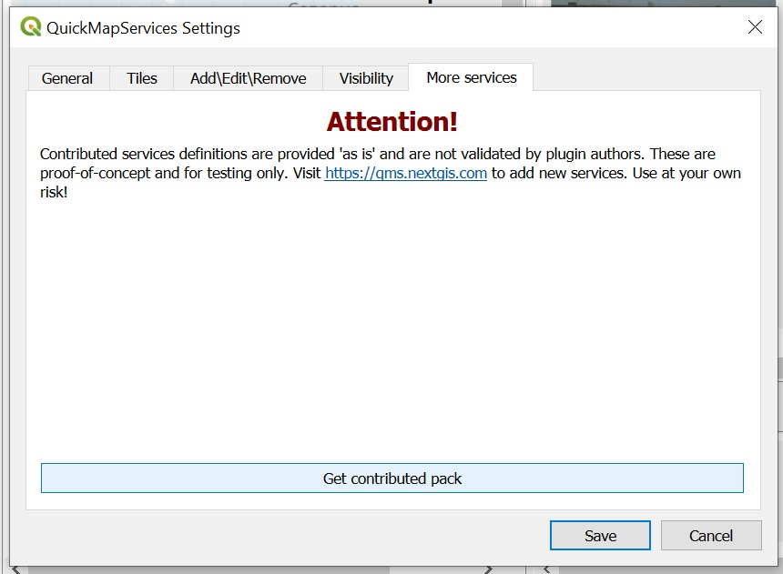 ] ] --- name: H0ca04 .toc.sidebar.left-column[ .outline[ # [Подготовка](#dataset).fg[] ## [Данные](#dataset) ## [Программы](#soft).fg[] ### [QGIS](#soft).fg[] #### [Ядро](#soft) #### [Расширения](#soft-qgis-plugins).fg[] ##### [QuickMapServices](#H19bdb) <span class="bullet bullet">[•](#H19bdb)</span><span class="bullet bullet">[•](#Hc758f)</span><span class="bullet bullet">[•](#Hb05fc)</span><span class="bullet bullet">[•](#He2ae2)</span><span class="bullet bullet">[•](#H95a91)</span><span class="bullet bullet-active">[•](#H0ca04)</span>.fg[].bg[] ### [R](#H11d0d) ## [Самостоятельно](#before) # [Сбор данных ](#He09a4) # [Переброс данных](#skip-data) # [Треки ](#H23ce4) # [Находки ](#H1d80f) # [Окружающ.среда](#Hc129b) # [Анализ ](#H948b0) ] ] .toc.mainbar.right-column.scrollable[ .header.broad[ QuickMapServices ] .fixprecode[ <img src="assets/PluginsUsage.jpg" width="1330" height="670" contain style="display: block; margin: auto auto auto 0;" /> ] ] --- name: H11d0d .toc.sidebar.left-column[ .outline[ # [Подготовка](#dataset).fg[] ## [Данные](#dataset) ## [Программы](#soft).fg[] ### [QGIS](#soft) ### [R](#H11d0d).fg[].bg[] #### [Ядро](#Hab88d) #### [Пакеты](#H7d2e5) ## [Самостоятельно](#before) # [Сбор данных ](#He09a4) # [Переброс данных](#skip-data) # [Треки ](#H23ce4) # [Находки ](#H1d80f) # [Окружающ.среда](#Hc129b) # [Анализ ](#H948b0) ] ] .toc.mainbar.right-column.scrollable[ .header.broad[ R ] .fixprecode[ https://www.r-project.org/. Выбираем "download R" и сервер для скачивания (mirror). <iframe src="https://www.r-project.org/" width="1330" height="560" data-external="1"></iframe> ] ] --- name: Hab88d .toc.sidebar.left-column[ .outline[ # [Подготовка](#dataset).fg[] ## [Данные](#dataset) ## [Программы](#soft).fg[] ### [QGIS](#soft) ### [R](#H11d0d).fg[] #### [Ядро](#Hab88d).fg[].bg[] #### [Пакеты](#H7d2e5) ## [Самостоятельно](#before) # [Сбор данных ](#He09a4) # [Переброс данных](#skip-data) # [Треки ](#H23ce4) # [Находки ](#H1d80f) # [Окружающ.среда](#Hc129b) # [Анализ ](#H948b0) ] ] .toc.mainbar.right-column.scrollable[ .header.broad[ Ядро ] .fixprecode[ https://cloud.r-project.org/ <iframe src="https://cloud.r-project.org/banner.shtml" width="1330" height="630" data-external="1"></iframe> ] ] --- name: H7d2e5 .toc.sidebar.left-column[ .outline[ # [Подготовка](#dataset).fg[] ## [Данные](#dataset) ## [Программы](#soft).fg[] ### [QGIS](#soft) ### [R](#H11d0d).fg[] #### [Ядро](#Hab88d) #### [Пакеты](#H7d2e5) <span class="bullet bullet-active">[•](#H7d2e5)</span><span class="bullet mslide26m">[•](#H0bcd8)</span>.fg[].bg[] ## [Самостоятельно](#before) # [Сбор данных ](#He09a4) # [Переброс данных](#skip-data) # [Треки ](#H23ce4) # [Находки ](#H1d80f) # [Окружающ.среда](#Hc129b) # [Анализ ](#H948b0) ] ] .toc.mainbar.right-column.scrollable[ .header.broad[ Пакеты ] .fixprecode[ https://cloud.r-project.org/web/packages/ <iframe src="https://cloud.r-project.org/web/packages/" width="1330" height="630" data-external="1"></iframe> ] ] --- name: H0bcd8 .toc.sidebar.left-column[ .outline[ # [Подготовка](#dataset).fg[] ## [Данные](#dataset) ## [Программы](#soft).fg[] ### [QGIS](#soft) ### [R](#H11d0d).fg[] #### [Ядро](#Hab88d) #### [Пакеты](#H7d2e5) <span class="bullet bullet">[•](#H7d2e5)</span><span class="bullet bullet-active">[•](#H0bcd8)</span>.fg[].bg[] ## [Самостоятельно](#before) # [Сбор данных ](#He09a4) # [Переброс данных](#skip-data) # [Треки ](#H23ce4) # [Находки ](#H1d80f) # [Окружающ.среда](#Hc129b) # [Анализ ](#H948b0) ] ] .toc.mainbar.right-column.scrollable[ .header.broad[ Пакеты ] .fixprecode[ [Отображение всех пакетов](https://cloud.r-project.org/web/packages/available_packages_by_name.html) <iframe src="https://cloud.r-project.org/web/packages/available_packages_by_name.html" width="1330" height="630" data-external="1"></iframe> ] ] --- name: before .toc.sidebar.left-column[ .outline[ # [Подготовка](#dataset).fg[] ## [Данные](#dataset) ## [Программы](#soft) ## [Самостоятельно](#before).fg[] ### [QGIS](#before).fg[] #### [Открыть проект](#before) <span class="bullet bullet-active">[•](#before)</span><span class="bullet mslide30m">[•](#Hfbb51)</span>.fg[].bg[] #### [Выполнить задание](#H18265) #### [По шагам](#steps) ### [R](#H022e0) # [Сбор данных ](#He09a4) # [Переброс данных](#skip-data) # [Треки ](#H23ce4) # [Находки ](#H1d80f) # [Окружающ.среда](#Hc129b) # [Анализ ](#H948b0) ] ] .toc.mainbar.right-column.scrollable[ .header.broad[ Открыть проект ] .fixprecode[ 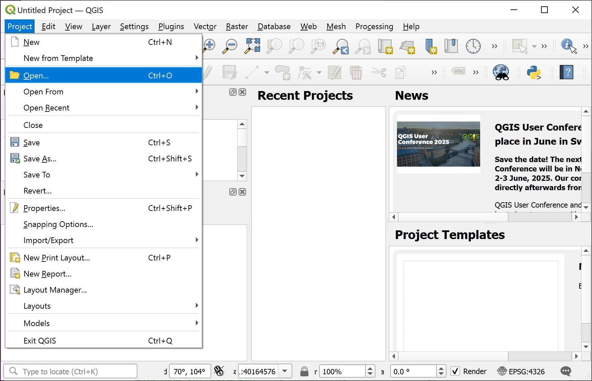 Указать путь к проекту `template.qgz` из [набора к практикуму](#dataset). ] ] --- name: Hfbb51 .toc.sidebar.left-column[ .outline[ # [Подготовка](#dataset).fg[] ## [Данные](#dataset) ## [Программы](#soft) ## [Самостоятельно](#before).fg[] ### [QGIS](#before).fg[] #### [Открыть проект](#before) <span class="bullet bullet">[•](#before)</span><span class="bullet bullet-active">[•](#Hfbb51)</span>.fg[].bg[] #### [Выполнить задание](#H18265) #### [По шагам](#steps) ### [R](#H022e0) # [Сбор данных ](#He09a4) # [Переброс данных](#skip-data) # [Треки ](#H23ce4) # [Находки ](#H1d80f) # [Окружающ.среда](#Hc129b) # [Анализ ](#H948b0) ] ] .toc.mainbar.right-column.scrollable[ .header.broad[ Открыть проект ] .fixprecode[ <img src="assets/Before01-OrangeProject.jpg" width="1330" height="592" contain style="display: block; margin: auto auto auto 0;" /> Возможное оранжевое предупреждение проигнорировать и закрыть. ] ] --- name: H18265 .toc.sidebar.left-column[ .outline[ # [Подготовка](#dataset).fg[] ## [Данные](#dataset) ## [Программы](#soft) ## [Самостоятельно](#before).fg[] ### [QGIS](#before).fg[] #### [Открыть проект](#before) #### [Выполнить задание](#H18265) <span class="bullet bullet-active">[•](#H18265)</span><span class="bullet mslide32m">[•](#H15bb7)</span>.fg[].bg[] #### [По шагам](#steps) ### [R](#H022e0) # [Сбор данных ](#He09a4) # [Переброс данных](#skip-data) # [Треки ](#H23ce4) # [Находки ](#H1d80f) # [Окружающ.среда](#Hc129b) # [Анализ ](#H948b0) ] ] .toc.mainbar.right-column.scrollable[ .header.broad[ Выполнить задание ] .fixprecode[ Отредактировать отображение с красного на голубой <img src="assets/Before18-BlueProject.jpg" width="1330" height="600" contain style="display: block; margin: auto auto auto 0;" /> ] ] --- name: H15bb7 .toc.sidebar.left-column[ .outline[ # [Подготовка](#dataset).fg[] ## [Данные](#dataset) ## [Программы](#soft) ## [Самостоятельно](#before).fg[] ### [QGIS](#before).fg[] #### [Открыть проект](#before) #### [Выполнить задание](#H18265) <span class="bullet bullet">[•](#H18265)</span><span class="bullet bullet-active">[•](#H15bb7)</span>.fg[].bg[] #### [По шагам](#steps) ### [R](#H022e0) # [Сбор данных ](#He09a4) # [Переброс данных](#skip-data) # [Треки ](#H23ce4) # [Находки ](#H1d80f) # [Окружающ.среда](#Hc129b) # [Анализ ](#H948b0) ] ] .toc.mainbar.right-column.scrollable[ .header.broad[ Выполнить задание ] .fixprecode[ + Изменить проекцию проекта на азимутальную равноплощадную Ламберта (EPSG:3576) + Скорректировать вращением направление на север + Моря сделать голубыми, сушу не раскрашивать + Названия населенных пунктов сделать русскоязычными + Убрать встречающиеся названия морей и регионов из южного полушария + Добавить масштабную линейку ] ] --- name: steps .toc.sidebar.left-column[ .outline[ # [Подготовка](#dataset).fg[] ## [Данные](#dataset) ## [Программы](#soft) ## [Самостоятельно](#before).fg[] ### [QGIS](#before).fg[] #### [Открыть проект](#before) #### [Выполнить задание](#H18265) #### [По шагам](#steps).fg[] ##### [Свойства проекта](#steps) <span class="bullet bullet-active">[•](#steps)</span><span class="bullet mslide35m">[•](#H8bdfe)</span><span class="bullet mslide36m">[•](#H12d6b)</span><span class="bullet mslide37m">[•](#H65d18)</span>.fg[].bg[] ##### [Cвойства слоя](#H0e205) ##### [Раскраска слоя](#H33c5a) ##### [Таблица атрибутов](#Hd6579) ##### [Извление названий](#He1986) ##### [Лишние названия](#H8d844) ##### [Украшательства](#H48437) ##### [Прореживание долгот](#Hcb243) ##### [Масштабная линейка](#Hb35ae) ##### [Результат](#He0526) ### [R](#H022e0) # [Сбор данных ](#He09a4) # [Переброс данных](#skip-data) # [Треки ](#H23ce4) # [Находки ](#H1d80f) # [Окружающ.среда](#Hc129b) # [Анализ ](#H948b0) ] ] .toc.mainbar.right-column.scrollable[ .header.broad[ Свойства проекта ] .fixprecode[ <img src="assets/Before02-ProjectProperties.jpg" width="1330" height="672" contain style="display: block; margin: auto auto auto 0;" /> ] ] --- name: H8bdfe .toc.sidebar.left-column[ .outline[ # [Подготовка](#dataset).fg[] ## [Данные](#dataset) ## [Программы](#soft) ## [Самостоятельно](#before).fg[] ### [QGIS](#before).fg[] #### [Открыть проект](#before) #### [Выполнить задание](#H18265) #### [По шагам](#steps).fg[] ##### [Свойства проекта](#steps) <span class="bullet bullet">[•](#steps)</span><span class="bullet bullet-active">[•](#H8bdfe)</span><span class="bullet mslide36m">[•](#H12d6b)</span><span class="bullet mslide37m">[•](#H65d18)</span>.fg[].bg[] ##### [Cвойства слоя](#H0e205) ##### [Раскраска слоя](#H33c5a) ##### [Таблица атрибутов](#Hd6579) ##### [Извление названий](#He1986) ##### [Лишние названия](#H8d844) ##### [Украшательства](#H48437) ##### [Прореживание долгот](#Hcb243) ##### [Масштабная линейка](#Hb35ae) ##### [Результат](#He0526) ### [R](#H022e0) # [Сбор данных ](#He09a4) # [Переброс данных](#skip-data) # [Треки ](#H23ce4) # [Находки ](#H1d80f) # [Окружающ.среда](#Hc129b) # [Анализ ](#H948b0) ] ] .toc.mainbar.right-column.scrollable[ .header.broad[ Свойства проекта ] .fixprecode[ Заменить цвет фона на белый, чтобы убрать красноту отображения. <img src="assets/Before03-ProperiesGeneral.jpg" width="1330" height="1594" contain style="display: block; margin: auto auto auto 0;" /> ] ] --- name: H12d6b .toc.sidebar.left-column[ .outline[ # [Подготовка](#dataset).fg[] ## [Данные](#dataset) ## [Программы](#soft) ## [Самостоятельно](#before).fg[] ### [QGIS](#before).fg[] #### [Открыть проект](#before) #### [Выполнить задание](#H18265) #### [По шагам](#steps).fg[] ##### [Свойства проекта](#steps) <span class="bullet bullet">[•](#steps)</span><span class="bullet bullet">[•](#H8bdfe)</span><span class="bullet bullet-active">[•](#H12d6b)</span><span class="bullet mslide37m">[•](#H65d18)</span>.fg[].bg[] ##### [Cвойства слоя](#H0e205) ##### [Раскраска слоя](#H33c5a) ##### [Таблица атрибутов](#Hd6579) ##### [Извление названий](#He1986) ##### [Лишние названия](#H8d844) ##### [Украшательства](#H48437) ##### [Прореживание долгот](#Hcb243) ##### [Масштабная линейка](#Hb35ae) ##### [Результат](#He0526) ### [R](#H022e0) # [Сбор данных ](#He09a4) # [Переброс данных](#skip-data) # [Треки ](#H23ce4) # [Находки ](#H1d80f) # [Окружающ.среда](#Hc129b) # [Анализ ](#H948b0) ] ] .toc.mainbar.right-column.scrollable[ .header.broad[ Свойства проекта ] .fixprecode[ Изменить проекцию проекта на равноплощадную азимутальную проекцию Ламберта (EPSG:3576) <img src="assets/Before04-ProjectCRS.jpg" width="1330" height="1594" contain style="display: block; margin: auto auto auto 0;" /> ] ] --- name: H65d18 .toc.sidebar.left-column[ .outline[ # [Подготовка](#dataset).fg[] ## [Данные](#dataset) ## [Программы](#soft) ## [Самостоятельно](#before).fg[] ### [QGIS](#before).fg[] #### [Открыть проект](#before) #### [Выполнить задание](#H18265) #### [По шагам](#steps).fg[] ##### [Свойства проекта](#steps) <span class="bullet bullet">[•](#steps)</span><span class="bullet bullet">[•](#H8bdfe)</span><span class="bullet bullet">[•](#H12d6b)</span><span class="bullet bullet-active">[•](#H65d18)</span>.fg[].bg[] ##### [Cвойства слоя](#H0e205) ##### [Раскраска слоя](#H33c5a) ##### [Таблица атрибутов](#Hd6579) ##### [Извление названий](#He1986) ##### [Лишние названия](#H8d844) ##### [Украшательства](#H48437) ##### [Прореживание долгот](#Hcb243) ##### [Масштабная линейка](#Hb35ae) ##### [Результат](#He0526) ### [R](#H022e0) # [Сбор данных ](#He09a4) # [Переброс данных](#skip-data) # [Треки ](#H23ce4) # [Находки ](#H1d80f) # [Окружающ.среда](#Hc129b) # [Анализ ](#H948b0) ] ] .toc.mainbar.right-column.scrollable[ .header.broad[ Свойства проекта ] .fixprecode[ В строке состояния указать, на сколько градусов повернуть, чтобы меридиан в центре отображения был направлен вертикально 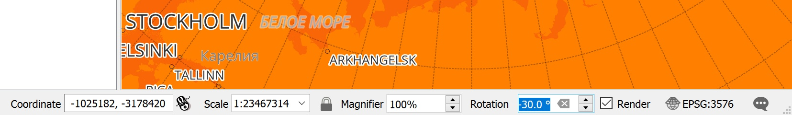 ] ] --- name: H0e205 .toc.sidebar.left-column[ .outline[ # [Подготовка](#dataset).fg[] ## [Данные](#dataset) ## [Программы](#soft) ## [Самостоятельно](#before).fg[] ### [QGIS](#before).fg[] #### [Открыть проект](#before) #### [Выполнить задание](#H18265) #### [По шагам](#steps).fg[] ##### [Свойства проекта](#steps) ##### [Cвойства слоя](#H0e205).fg[].bg[] ##### [Раскраска слоя](#H33c5a) ##### [Таблица атрибутов](#Hd6579) ##### [Извление названий](#He1986) ##### [Лишние названия](#H8d844) ##### [Украшательства](#H48437) ##### [Прореживание долгот](#Hcb243) ##### [Масштабная линейка](#Hb35ae) ##### [Результат](#He0526) ### [R](#H022e0) # [Сбор данных ](#He09a4) # [Переброс данных](#skip-data) # [Треки ](#H23ce4) # [Находки ](#H1d80f) # [Окружающ.среда](#Hc129b) # [Анализ ](#H948b0) ] ] .toc.mainbar.right-column.scrollable[ .header.broad[ Cвойства слоя ] .fixprecode[ <img src="assets/Before06-LayerProperties.jpg" width="1330" height="672" contain style="display: block; margin: auto auto auto 0;" /> ] ] --- name: H33c5a .toc.sidebar.left-column[ .outline[ # [Подготовка](#dataset).fg[] ## [Данные](#dataset) ## [Программы](#soft) ## [Самостоятельно](#before).fg[] ### [QGIS](#before).fg[] #### [Открыть проект](#before) #### [Выполнить задание](#H18265) #### [По шагам](#steps).fg[] ##### [Свойства проекта](#steps) ##### [Cвойства слоя](#H0e205) ##### [Раскраска слоя](#H33c5a).fg[].bg[] ##### [Таблица атрибутов](#Hd6579) ##### [Извление названий](#He1986) ##### [Лишние названия](#H8d844) ##### [Украшательства](#H48437) ##### [Прореживание долгот](#Hcb243) ##### [Масштабная линейка](#Hb35ae) ##### [Результат](#He0526) ### [R](#H022e0) # [Сбор данных ](#He09a4) # [Переброс данных](#skip-data) # [Треки ](#H23ce4) # [Находки ](#H1d80f) # [Окружающ.среда](#Hc129b) # [Анализ ](#H948b0) ] ] .toc.mainbar.right-column.scrollable[ .header.broad[ Раскраска слоя ] .fixprecode[ Изменить красный цвет океана на голубой. Можно изменить значение прозрачности слоя. <img src="assets/Before07-LayerColor.jpg" width="1330" height="1594" contain style="display: block; margin: auto auto auto 0;" /> ] ] --- name: Hd6579 .toc.sidebar.left-column[ .outline[ # [Подготовка](#dataset).fg[] ## [Данные](#dataset) ## [Программы](#soft) ## [Самостоятельно](#before).fg[] ### [QGIS](#before).fg[] #### [Открыть проект](#before) #### [Выполнить задание](#H18265) #### [По шагам](#steps).fg[] ##### [Свойства проекта](#steps) ##### [Cвойства слоя](#H0e205) ##### [Раскраска слоя](#H33c5a) ##### [Таблица атрибутов](#Hd6579) <span class="bullet bullet-active">[•](#Hd6579)</span><span class="bullet mslide41m">[•](#Hc3f3b)</span>.fg[].bg[] ##### [Извление названий](#He1986) ##### [Лишние названия](#H8d844) ##### [Украшательства](#H48437) ##### [Прореживание долгот](#Hcb243) ##### [Масштабная линейка](#Hb35ae) ##### [Результат](#He0526) ### [R](#H022e0) # [Сбор данных ](#He09a4) # [Переброс данных](#skip-data) # [Треки ](#H23ce4) # [Находки ](#H1d80f) # [Окружающ.среда](#Hc129b) # [Анализ ](#H948b0) ] ] .toc.mainbar.right-column.scrollable[ .header.broad[ Таблица атрибутов ] .fixprecode[ <img src="assets/BeforeX1-AttributeTable.jpg" width="1330" height="1594" contain style="display: block; margin: auto auto auto 0;" /> ] ] --- name: Hc3f3b .toc.sidebar.left-column[ .outline[ # [Подготовка](#dataset).fg[] ## [Данные](#dataset) ## [Программы](#soft) ## [Самостоятельно](#before).fg[] ### [QGIS](#before).fg[] #### [Открыть проект](#before) #### [Выполнить задание](#H18265) #### [По шагам](#steps).fg[] ##### [Свойства проекта](#steps) ##### [Cвойства слоя](#H0e205) ##### [Раскраска слоя](#H33c5a) ##### [Таблица атрибутов](#Hd6579) <span class="bullet bullet">[•](#Hd6579)</span><span class="bullet bullet-active">[•](#Hc3f3b)</span>.fg[].bg[] ##### [Извление названий](#He1986) ##### [Лишние названия](#H8d844) ##### [Украшательства](#H48437) ##### [Прореживание долгот](#Hcb243) ##### [Масштабная линейка](#Hb35ae) ##### [Результат](#He0526) ### [R](#H022e0) # [Сбор данных ](#He09a4) # [Переброс данных](#skip-data) # [Треки ](#H23ce4) # [Находки ](#H1d80f) # [Окружающ.среда](#Hc129b) # [Анализ ](#H948b0) ] ] .toc.mainbar.right-column.scrollable[ .header.broad[ Таблица атрибутов ] .fixprecode[ Это обычная таблица, как в Excel, каждая строка связана с геометрией пространственного объекта. 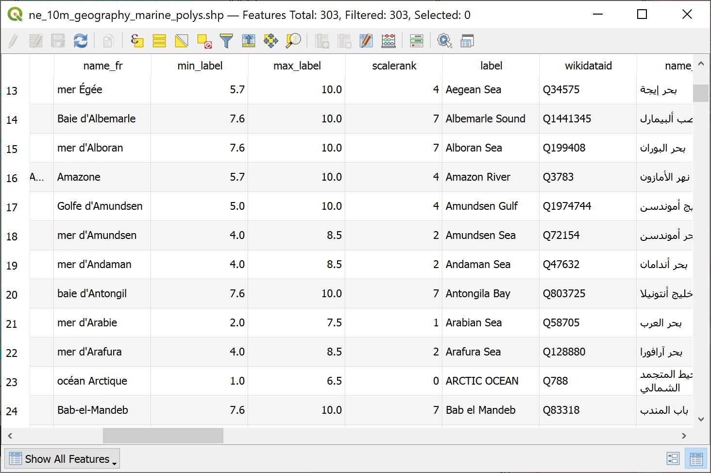 ] ] --- name: He1986 .toc.sidebar.left-column[ .outline[ # [Подготовка](#dataset).fg[] ## [Данные](#dataset) ## [Программы](#soft) ## [Самостоятельно](#before).fg[] ### [QGIS](#before).fg[] #### [Открыть проект](#before) #### [Выполнить задание](#H18265) #### [По шагам](#steps).fg[] ##### [Свойства проекта](#steps) ##### [Cвойства слоя](#H0e205) ##### [Раскраска слоя](#H33c5a) ##### [Таблица атрибутов](#Hd6579) ##### [Извление названий](#He1986).fg[].bg[] ##### [Лишние названия](#H8d844) ##### [Украшательства](#H48437) ##### [Прореживание долгот](#Hcb243) ##### [Масштабная линейка](#Hb35ae) ##### [Результат](#He0526) ### [R](#H022e0) # [Сбор данных ](#He09a4) # [Переброс данных](#skip-data) # [Треки ](#H23ce4) # [Находки ](#H1d80f) # [Окружающ.среда](#Hc129b) # [Анализ ](#H948b0) ] ] .toc.mainbar.right-column.scrollable[ .header.broad[ Извление названий ] .fixprecode[ Изменить англоязычные названия населённых пунктов на русскоязычные. <img src="assets/Before08-LayerLabels.jpg" width="1330" height="1594" contain style="display: block; margin: auto auto auto 0;" /> ] ] --- name: H8d844 .toc.sidebar.left-column[ .outline[ # [Подготовка](#dataset).fg[] ## [Данные](#dataset) ## [Программы](#soft) ## [Самостоятельно](#before).fg[] ### [QGIS](#before).fg[] #### [Открыть проект](#before) #### [Выполнить задание](#H18265) #### [По шагам](#steps).fg[] ##### [Свойства проекта](#steps) ##### [Cвойства слоя](#H0e205) ##### [Раскраска слоя](#H33c5a) ##### [Таблица атрибутов](#Hd6579) ##### [Извление названий](#He1986) ##### [Лишние названия](#H8d844) <span class="bullet bullet-active">[•](#H8d844)</span><span class="bullet mslide44m">[•](#Hb3994)</span><span class="bullet mslide45m">[•](#Hc49e7)</span><span class="bullet mslide46m">[•](#H5d972)</span>.fg[].bg[] ##### [Украшательства](#H48437) ##### [Прореживание долгот](#Hcb243) ##### [Масштабная линейка](#Hb35ae) ##### [Результат](#He0526) ### [R](#H022e0) # [Сбор данных ](#He09a4) # [Переброс данных](#skip-data) # [Треки ](#H23ce4) # [Находки ](#H1d80f) # [Окружающ.среда](#Hc129b) # [Анализ ](#H948b0) ] ] .toc.mainbar.right-column.scrollable[ .header.broad[ Лишние названия ] .fixprecode[ Убрать появляющиеся подписи из южного полушария фильтрацией исключением. <img src="assets/Before09-LayerFilter.jpg" width="1330" height="1594" contain style="display: block; margin: auto auto auto 0;" /> ] ] --- name: Hb3994 .toc.sidebar.left-column[ .outline[ # [Подготовка](#dataset).fg[] ## [Данные](#dataset) ## [Программы](#soft) ## [Самостоятельно](#before).fg[] ### [QGIS](#before).fg[] #### [Открыть проект](#before) #### [Выполнить задание](#H18265) #### [По шагам](#steps).fg[] ##### [Свойства проекта](#steps) ##### [Cвойства слоя](#H0e205) ##### [Раскраска слоя](#H33c5a) ##### [Таблица атрибутов](#Hd6579) ##### [Извление названий](#He1986) ##### [Лишние названия](#H8d844) <span class="bullet bullet">[•](#H8d844)</span><span class="bullet bullet-active">[•](#Hb3994)</span><span class="bullet mslide45m">[•](#Hc49e7)</span><span class="bullet mslide46m">[•](#H5d972)</span>.fg[].bg[] ##### [Украшательства](#H48437) ##### [Прореживание долгот](#Hcb243) ##### [Масштабная линейка](#Hb35ae) ##### [Результат](#He0526) ### [R](#H022e0) # [Сбор данных ](#He09a4) # [Переброс данных](#skip-data) # [Треки ](#H23ce4) # [Находки ](#H1d80f) # [Окружающ.среда](#Hc129b) # [Анализ ](#H948b0) ] ] .toc.mainbar.right-column.scrollable[ .header.broad[ Лишние названия ] .fixprecode[ Для морей в таблице атрибутов нет столбца по региону, поэтому фильтрация напрямую. <img src="assets/Before10-QueryAqua.jpg" width="1330" height="1594" contain style="display: block; margin: auto auto auto 0;" /> ] ] --- name: Hc49e7 .toc.sidebar.left-column[ .outline[ # [Подготовка](#dataset).fg[] ## [Данные](#dataset) ## [Программы](#soft) ## [Самостоятельно](#before).fg[] ### [QGIS](#before).fg[] #### [Открыть проект](#before) #### [Выполнить задание](#H18265) #### [По шагам](#steps).fg[] ##### [Свойства проекта](#steps) ##### [Cвойства слоя](#H0e205) ##### [Раскраска слоя](#H33c5a) ##### [Таблица атрибутов](#Hd6579) ##### [Извление названий](#He1986) ##### [Лишние названия](#H8d844) <span class="bullet bullet">[•](#H8d844)</span><span class="bullet bullet">[•](#Hb3994)</span><span class="bullet bullet-active">[•](#Hc49e7)</span><span class="bullet mslide46m">[•](#H5d972)</span>.fg[].bg[] ##### [Украшательства](#H48437) ##### [Прореживание долгот](#Hcb243) ##### [Масштабная линейка](#Hb35ae) ##### [Результат](#He0526) ### [R](#H022e0) # [Сбор данных ](#He09a4) # [Переброс данных](#skip-data) # [Треки ](#H23ce4) # [Находки ](#H1d80f) # [Окружающ.среда](#Hc129b) # [Анализ ](#H948b0) ] ] .toc.mainbar.right-column.scrollable[ .header.broad[ Лишние названия ] .fixprecode[ Для суши можно сделать фильтрацию по региону, который есть в таблице атрибутов. <img src="assets/Before11-QueryTerra.jpg" width="1330" height="1594" contain style="display: block; margin: auto auto auto 0;" /> ] ] --- name: H5d972 .toc.sidebar.left-column[ .outline[ # [Подготовка](#dataset).fg[] ## [Данные](#dataset) ## [Программы](#soft) ## [Самостоятельно](#before).fg[] ### [QGIS](#before).fg[] #### [Открыть проект](#before) #### [Выполнить задание](#H18265) #### [По шагам](#steps).fg[] ##### [Свойства проекта](#steps) ##### [Cвойства слоя](#H0e205) ##### [Раскраска слоя](#H33c5a) ##### [Таблица атрибутов](#Hd6579) ##### [Извление названий](#He1986) ##### [Лишние названия](#H8d844) <span class="bullet bullet">[•](#H8d844)</span><span class="bullet bullet">[•](#Hb3994)</span><span class="bullet bullet">[•](#Hc49e7)</span><span class="bullet bullet-active">[•](#H5d972)</span>.fg[].bg[] ##### [Украшательства](#H48437) ##### [Прореживание долгот](#Hcb243) ##### [Масштабная линейка](#Hb35ae) ##### [Результат](#He0526) ### [R](#H022e0) # [Сбор данных ](#He09a4) # [Переброс данных](#skip-data) # [Треки ](#H23ce4) # [Находки ](#H1d80f) # [Окружающ.среда](#Hc129b) # [Анализ ](#H948b0) ] ] .toc.mainbar.right-column.scrollable[ .header.broad[ Лишние названия ] .fixprecode[ Чтобы отображались лишь названия, без точек-линий-полигонов, слой полностью прозрачный <img src="assets/Before12-LayerOpacity.jpg" width="1330" height="1594" contain style="display: block; margin: auto auto auto 0;" /> ] ] --- name: H48437 .toc.sidebar.left-column[ .outline[ # [Подготовка](#dataset).fg[] ## [Данные](#dataset) ## [Программы](#soft) ## [Самостоятельно](#before).fg[] ### [QGIS](#before).fg[] #### [Открыть проект](#before) #### [Выполнить задание](#H18265) #### [По шагам](#steps).fg[] ##### [Свойства проекта](#steps) ##### [Cвойства слоя](#H0e205) ##### [Раскраска слоя](#H33c5a) ##### [Таблица атрибутов](#Hd6579) ##### [Извление названий](#He1986) ##### [Лишние названия](#H8d844) ##### [Украшательства](#H48437) <span class="bullet bullet-active">[•](#H48437)</span><span class="bullet mslide48m">[•](#Hba2f0)</span>.fg[].bg[] ##### [Прореживание долгот](#Hcb243) ##### [Масштабная линейка](#Hb35ae) ##### [Результат](#He0526) ### [R](#H022e0) # [Сбор данных ](#He09a4) # [Переброс данных](#skip-data) # [Треки ](#H23ce4) # [Находки ](#H1d80f) # [Окружающ.среда](#Hc129b) # [Анализ ](#H948b0) ] ] .toc.mainbar.right-column.scrollable[ .header.broad[ Украшательства ] .fixprecode[ Применены разные стили отображения для океанов и морей. <img src="assets/Before13-MarineLabels.jpg" width="1330" height="1594" contain style="display: block; margin: auto auto auto 0;" /> ] ] --- name: Hba2f0 .toc.sidebar.left-column[ .outline[ # [Подготовка](#dataset).fg[] ## [Данные](#dataset) ## [Программы](#soft) ## [Самостоятельно](#before).fg[] ### [QGIS](#before).fg[] #### [Открыть проект](#before) #### [Выполнить задание](#H18265) #### [По шагам](#steps).fg[] ##### [Свойства проекта](#steps) ##### [Cвойства слоя](#H0e205) ##### [Раскраска слоя](#H33c5a) ##### [Таблица атрибутов](#Hd6579) ##### [Извление названий](#He1986) ##### [Лишние названия](#H8d844) ##### [Украшательства](#H48437) <span class="bullet bullet">[•](#H48437)</span><span class="bullet bullet-active">[•](#Hba2f0)</span>.fg[].bg[] ##### [Прореживание долгот](#Hcb243) ##### [Масштабная линейка](#Hb35ae) ##### [Результат](#He0526) ### [R](#H022e0) # [Сбор данных ](#He09a4) # [Переброс данных](#skip-data) # [Треки ](#H23ce4) # [Находки ](#H1d80f) # [Окружающ.среда](#Hc129b) # [Анализ ](#H948b0) ] ] .toc.mainbar.right-column.scrollable[ .header.broad[ Украшательства ] .fixprecode[ 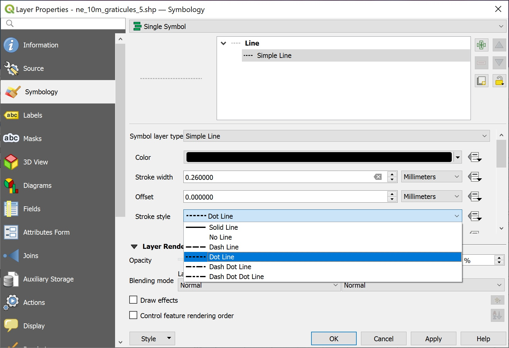 ] ] --- name: Hcb243 .toc.sidebar.left-column[ .outline[ # [Подготовка](#dataset).fg[] ## [Данные](#dataset) ## [Программы](#soft) ## [Самостоятельно](#before).fg[] ### [QGIS](#before).fg[] #### [Открыть проект](#before) #### [Выполнить задание](#H18265) #### [По шагам](#steps).fg[] ##### [Свойства проекта](#steps) ##### [Cвойства слоя](#H0e205) ##### [Раскраска слоя](#H33c5a) ##### [Таблица атрибутов](#Hd6579) ##### [Извление названий](#He1986) ##### [Лишние названия](#H8d844) ##### [Украшательства](#H48437) ##### [Прореживание долгот](#Hcb243).fg[].bg[] ##### [Масштабная линейка](#Hb35ae) ##### [Результат](#He0526) ### [R](#H022e0) # [Сбор данных ](#He09a4) # [Переброс данных](#skip-data) # [Треки ](#H23ce4) # [Находки ](#H1d80f) # [Окружающ.среда](#Hc129b) # [Анализ ](#H948b0) ] ] .toc.mainbar.right-column.scrollable[ .header.broad[ Прореживание долгот ] .fixprecode[ <img src="assets/Before15-GraticuleSampling.jpg" width="1330" height="672" contain style="display: block; margin: auto auto auto 0;" /> ] ] --- name: Hb35ae .toc.sidebar.left-column[ .outline[ # [Подготовка](#dataset).fg[] ## [Данные](#dataset) ## [Программы](#soft) ## [Самостоятельно](#before).fg[] ### [QGIS](#before).fg[] #### [Открыть проект](#before) #### [Выполнить задание](#H18265) #### [По шагам](#steps).fg[] ##### [Свойства проекта](#steps) ##### [Cвойства слоя](#H0e205) ##### [Раскраска слоя](#H33c5a) ##### [Таблица атрибутов](#Hd6579) ##### [Извление названий](#He1986) ##### [Лишние названия](#H8d844) ##### [Украшательства](#H48437) ##### [Прореживание долгот](#Hcb243) ##### [Масштабная линейка](#Hb35ae) <span class="bullet bullet-active">[•](#Hb35ae)</span><span class="bullet mslide51m">[•](#Hdae88)</span>.fg[].bg[] ##### [Результат](#He0526) ### [R](#H022e0) # [Сбор данных ](#He09a4) # [Переброс данных](#skip-data) # [Треки ](#H23ce4) # [Находки ](#H1d80f) # [Окружающ.среда](#Hc129b) # [Анализ ](#H948b0) ] ] .toc.mainbar.right-column.scrollable[ .header.broad[ Масштабная линейка ] .fixprecode[ <img src="assets/Before16-Decoration.jpg" width="1330" height="672" contain style="display: block; margin: auto auto auto 0;" /> ] ] --- name: Hdae88 .toc.sidebar.left-column[ .outline[ # [Подготовка](#dataset).fg[] ## [Данные](#dataset) ## [Программы](#soft) ## [Самостоятельно](#before).fg[] ### [QGIS](#before).fg[] #### [Открыть проект](#before) #### [Выполнить задание](#H18265) #### [По шагам](#steps).fg[] ##### [Свойства проекта](#steps) ##### [Cвойства слоя](#H0e205) ##### [Раскраска слоя](#H33c5a) ##### [Таблица атрибутов](#Hd6579) ##### [Извление названий](#He1986) ##### [Лишние названия](#H8d844) ##### [Украшательства](#H48437) ##### [Прореживание долгот](#Hcb243) ##### [Масштабная линейка](#Hb35ae) <span class="bullet bullet">[•](#Hb35ae)</span><span class="bullet bullet-active">[•](#Hdae88)</span>.fg[].bg[] ##### [Результат](#He0526) ### [R](#H022e0) # [Сбор данных ](#He09a4) # [Переброс данных](#skip-data) # [Треки ](#H23ce4) # [Находки ](#H1d80f) # [Окружающ.среда](#Hc129b) # [Анализ ](#H948b0) ] ] .toc.mainbar.right-column.scrollable[ .header.broad[ Масштабная линейка ] .fixprecode[ <img src="assets/Before17-Scalebar.jpg" width="1330" height="672" contain style="display: block; margin: auto auto auto 0;" /> ] ] --- name: He0526 .toc.sidebar.left-column[ .outline[ # [Подготовка](#dataset).fg[] ## [Данные](#dataset) ## [Программы](#soft) ## [Самостоятельно](#before).fg[] ### [QGIS](#before).fg[] #### [Открыть проект](#before) #### [Выполнить задание](#H18265) #### [По шагам](#steps).fg[] ##### [Свойства проекта](#steps) ##### [Cвойства слоя](#H0e205) ##### [Раскраска слоя](#H33c5a) ##### [Таблица атрибутов](#Hd6579) ##### [Извление названий](#He1986) ##### [Лишние названия](#H8d844) ##### [Украшательства](#H48437) ##### [Прореживание долгот](#Hcb243) ##### [Масштабная линейка](#Hb35ae) ##### [Результат](#He0526).fg[].bg[] ### [R](#H022e0) # [Сбор данных ](#He09a4) # [Переброс данных](#skip-data) # [Треки ](#H23ce4) # [Находки ](#H1d80f) # [Окружающ.среда](#Hc129b) # [Анализ ](#H948b0) ] ] .toc.mainbar.right-column.scrollable[ .header.broad[ Результат ] .fixprecode[ <img src="assets/Before18-BlueProject.jpg" width="1330" height="560" contain style="display: block; margin: auto auto auto 0;" /> Сохраните с новым названием. Если совсем ничего не получилось, используйтся файл проекта `desired.qgz` из [набора данных для практикума](#dataset). ] ] --- class: break bottom youturn # Проверка -- + Почему подписи морей наклонные? -- + Почему пропадает координатная сетка при мелких масштабах? --- name: H022e0 .toc.sidebar.left-column[ .outline[ # [Подготовка](#dataset).fg[] ## [Данные](#dataset) ## [Программы](#soft) ## [Самостоятельно](#before).fg[] ### [QGIS](#before) ### [R](#H022e0).fg[].bg[] # [Сбор данных ](#He09a4) # [Переброс данных](#skip-data) # [Треки ](#H23ce4) # [Находки ](#H1d80f) # [Окружающ.среда](#Hc129b) # [Анализ ](#H948b0) ] ] .toc.mainbar.right-column.scrollable[ .header.broad[ R ] .fixprecode[ ``` r pkgList <- c("png","mapview","tmap","sf","terra" ,"adehabitatLT","readxl","tidyr","lwgeom" ,"geosphere","ggstatsplot","ursa") repos <- "https://cloud.r-project.org/" type <- if (.Platform$OS.type=="windows") "binary" else getOption("pkgType") ``` ``` r available <- sapply(pkgList,function(pkg) { if (requireNamespace(pkg)) return(TRUE) install.packages(pkg,repos=repos,type=type) requireNamespace(pkg) }) ``` ``` r if (packageVersion("ursa")<"3.11.2") install.packages("ursa",repos=repos,type=type) ``` ``` r packageVersion("ursa") ``` ``` [1] '3.11.2.1159' ``` ``` r available ``` ``` png mapview tmap sf terra adehabitatLT TRUE TRUE TRUE TRUE TRUE TRUE readxl tidyr lwgeom geosphere ggstatsplot ursa TRUE TRUE TRUE TRUE TRUE TRUE ``` ``` r c('Everything is ok?'=all(available)) ``` ``` Everything is ok? TRUE ``` ] ] --- class: unlisted unnumbered name: He09a4 .toc.sidebar.left-column[ .outline[ # [Подготовка](#dataset) # [Сбор данных ](#He09a4).fg[] ## [Tips & tricks](#He09a4).fg[].bg[] ## [Goodies](#hidden-goodies) ## [Наблюдения](#H170a9) ## [Регистрация находок](#protocol) # [Переброс данных](#skip-data) # [Треки ](#H23ce4) # [Находки ](#H1d80f) # [Окружающ.среда](#Hc129b) # [Анализ ](#H948b0) ] ] .toc.mainbar.right-column.scrollable[ .header.h2.broad[ Tips & tricks .parent[.grand[Сбор данных]] ] .fixprecode[ .zont86[ .pulling[ .pull-left-55[ #### Интернет Рассчитывать на него не стоит + Всё необходимое скачать до рейса + Отключить обновления на <svg aria-hidden="true" role="img" viewBox="0 0 640 512" style="height:1em;width:1.25em;vertical-align:-0.125em;margin-left:auto;margin-right:auto;font-size:inherit;fill:currentColor;overflow:visible;position:relative;"><path d="M384 96V320H64L64 96H384zM64 32C28.7 32 0 60.7 0 96V320c0 35.3 28.7 64 64 64H181.3l-10.7 32H96c-17.7 0-32 14.3-32 32s14.3 32 32 32H352c17.7 0 32-14.3 32-32s-14.3-32-32-32H277.3l-10.7-32H384c35.3 0 64-28.7 64-64V96c0-35.3-28.7-64-64-64H64zm464 0c-26.5 0-48 21.5-48 48V432c0 26.5 21.5 48 48 48h64c26.5 0 48-21.5 48-48V80c0-26.5-21.5-48-48-48H528zm16 64h32c8.8 0 16 7.2 16 16s-7.2 16-16 16H544c-8.8 0-16-7.2-16-16s7.2-16 16-16zm-16 80c0-8.8 7.2-16 16-16h32c8.8 0 16 7.2 16 16s-7.2 16-16 16H544c-8.8 0-16-7.2-16-16zm32 160a32 32 0 1 1 0 64 32 32 0 1 1 0-64z"/></svg> и <svg aria-hidden="true" role="img" viewBox="0 0 384 512" style="height:1em;width:0.75em;vertical-align:-0.125em;margin-left:auto;margin-right:auto;font-size:inherit;fill:currentColor;overflow:visible;position:relative;"><path d="M16 64C16 28.7 44.7 0 80 0H304c35.3 0 64 28.7 64 64V448c0 35.3-28.7 64-64 64H80c-35.3 0-64-28.7-64-64V64zM144 448c0 8.8 7.2 16 16 16h64c8.8 0 16-7.2 16-16s-7.2-16-16-16H160c-8.8 0-16 7.2-16 16zM304 64H80V384H304V64z"/></svg>. + <svg aria-hidden="true" role="img" viewBox="0 0 448 512" style="height:1em;width:0.88em;vertical-align:-0.125em;margin-left:auto;margin-right:auto;font-size:inherit;fill:currentColor;overflow:visible;position:relative;"><path d="M92.1 254.6c0 24.9 7 49.2 20.2 70.1l3.1 5-13.3 48.6L152 365.2l4.8 2.9c20.2 12 43.4 18.4 67.1 18.4h.1c72.6 0 133.3-59.1 133.3-131.8c0-35.2-15.2-68.3-40.1-93.2c-25-25-58-38.7-93.2-38.7c-72.7 0-131.8 59.1-131.9 131.8zM274.8 330c-12.6 1.9-22.4 .9-47.5-9.9c-36.8-15.9-61.8-51.5-66.9-58.7c-.4-.6-.7-.9-.8-1.1c-2-2.6-16.2-21.5-16.2-41c0-18.4 9-27.9 13.2-32.3c.3-.3 .5-.5 .7-.8c3.6-4 7.9-5 10.6-5c2.6 0 5.3 0 7.6 .1c.3 0 .5 0 .8 0c2.3 0 5.2 0 8.1 6.8c1.2 2.9 3 7.3 4.9 11.8c3.3 8 6.7 16.3 7.3 17.6c1 2 1.7 4.3 .3 6.9c-3.4 6.8-6.9 10.4-9.3 13c-3.1 3.2-4.5 4.7-2.3 8.6c15.3 26.3 30.6 35.4 53.9 47.1c4 2 6.3 1.7 8.6-1c2.3-2.6 9.9-11.6 12.5-15.5c2.6-4 5.3-3.3 8.9-2s23.1 10.9 27.1 12.9c.8 .4 1.5 .7 2.1 1c2.8 1.4 4.7 2.3 5.5 3.6c.9 1.9 .9 9.9-2.4 19.1c-3.3 9.3-19.1 17.7-26.7 18.8zM448 96c0-35.3-28.7-64-64-64H64C28.7 32 0 60.7 0 96V416c0 35.3 28.7 64 64 64H384c35.3 0 64-28.7 64-64V96zM148.1 393.9L64 416l22.5-82.2c-13.9-24-21.2-51.3-21.2-79.3C65.4 167.1 136.5 96 223.9 96c42.4 0 82.2 16.5 112.2 46.5c29.9 30 47.9 69.8 47.9 112.2c0 87.4-72.7 158.5-160.1 158.5c-26.6 0-52.7-6.7-75.8-19.3z"/></svg> надежнее <svg aria-hidden="true" role="img" viewBox="0 0 496 512" style="height:1em;width:0.97em;vertical-align:-0.125em;margin-left:auto;margin-right:auto;font-size:inherit;fill:currentColor;overflow:visible;position:relative;"><path d="M248,8C111.033,8,0,119.033,0,256S111.033,504,248,504,496,392.967,496,256,384.967,8,248,8ZM362.952,176.66c-3.732,39.215-19.881,134.378-28.1,178.3-3.476,18.584-10.322,24.816-16.948,25.425-14.4,1.326-25.338-9.517-39.287-18.661-21.827-14.308-34.158-23.215-55.346-37.177-24.485-16.135-8.612-25,5.342-39.5,3.652-3.793,67.107-61.51,68.335-66.746.153-.655.3-3.1-1.154-4.384s-3.59-.849-5.135-.5q-3.283.746-104.608,69.142-14.845,10.194-26.894,9.934c-8.855-.191-25.888-5.006-38.551-9.123-15.531-5.048-27.875-7.717-26.8-16.291q.84-6.7,18.45-13.7,108.446-47.248,144.628-62.3c68.872-28.647,83.183-33.623,92.511-33.789,2.052-.034,6.639.474,9.61,2.885a10.452,10.452,0,0,1,3.53,6.716A43.765,43.765,0,0,1,362.952,176.66Z"/></svg> при малой пропускной способности #### Часовой пояс + Зафиксировать с момента начала до момента окончания рейса для всех участников и всех устройств на вахте + UTC, если судовое время меняется в течение рейса <!-- + любой, но неизменный --> + судовое время, если оно не меняется. #### GPS + Запись трека разными приборами (потеря сигнала, разряд батарей) + Задать часовой пояс ] .pull-right-45[ #### Фотоаппарат + EXIF нужен + Время и часовой пояс по GPS #### Смартфон, часы + 🤷 Удобнее судовое время #### Диктофон + Время и часовой пояс по GPS #### Учётный лист + Карандаш + Время начала и окончания вахты + .clarify[ Ширина учётной полосы (при каждом изменении) ] ] ] ] ] ] --- name: hidden-goodies class: blackout .toc.sidebar.left-column[ .outline[ # [Подготовка](#dataset) # [Сбор данных ](#He09a4).fg[] ## [Tips & tricks](#He09a4) ## [Goodies](#hidden-goodies).fg[].bg[] ## [Наблюдения](#H170a9) ## [Регистрация находок](#protocol) # [Переброс данных](#skip-data) # [Треки ](#H23ce4) # [Находки ](#H1d80f) # [Окружающ.среда](#Hc129b) # [Анализ ](#H948b0) ] ] .toc.mainbar.right-column.scrollable[ .header.h2.broad[ Goodies .parent[.grand[Сбор данных]] ] .fixprecode[ + Настолки + Вкусняшки + Сигареты + 🍾 (не афишируем) ] ] --- class: unlisted unnumbered name: H170a9 .toc.sidebar.left-column[ .outline[ # [Подготовка](#dataset) # [Сбор данных ](#He09a4).fg[] ## [Tips & tricks](#He09a4) ## [Goodies](#hidden-goodies) ## [Наблюдения](#H170a9) <span class="bullet bullet-active">[•](#H170a9)</span><span class="bullet mslide60m">[•](#H86c2e)</span>.fg[].bg[] ## [Регистрация находок](#protocol) # [Переброс данных](#skip-data) # [Треки ](#H23ce4) # [Находки ](#H1d80f) # [Окружающ.среда](#Hc129b) # [Анализ ](#H948b0) ] ] .toc.mainbar.right-column.scrollable[ .header.h2.broad[ Наблюдения .parent[.grand[Сбор данных]] ] .fixprecode[ <iframe src="assets/duty.mp4?showcase=0" width="1330" height="508px" data-external="1"></iframe> ] ] --- name: H86c2e .toc.sidebar.left-column[ .outline[ # [Подготовка](#dataset) # [Сбор данных ](#He09a4).fg[] ## [Tips & tricks](#He09a4) ## [Goodies](#hidden-goodies) ## [Наблюдения](#H170a9) <span class="bullet bullet">[•](#H170a9)</span><span class="bullet bullet-active">[•](#H86c2e)</span>.fg[].bg[] ## [Регистрация находок](#protocol) # [Переброс данных](#skip-data) # [Треки ](#H23ce4) # [Находки ](#H1d80f) # [Окружающ.среда](#Hc129b) # [Анализ ](#H948b0) ] ] .toc.mainbar.right-column.scrollable[ .header.h2.broad[ Наблюдения .parent[.grand[Сбор данных]] ] .fixprecode[ <img src="assets/bridge.jpg" width="1330" height="670" contain style="display: block; margin: auto auto auto 0;" /> ] ] --- name: protocol class: unlisted unnumbered .toc.sidebar.left-column[ .outline[ # [Подготовка](#dataset) # [Сбор данных ](#He09a4).fg[] ## [Tips & tricks](#He09a4) ## [Goodies](#hidden-goodies) ## [Наблюдения](#H170a9) ## [Регистрация находок](#protocol) <span class="bullet bullet-active">[•](#protocol)</span><span class="bullet mslide62m">[•](#H68cc8)</span><span class="bullet mslide63m">[•](#H1fcbb)</span><span class="bullet mslide64m">[•](#H81af2)</span>.fg[].bg[] # [Переброс данных](#skip-data) # [Треки ](#H23ce4) # [Находки ](#H1d80f) # [Окружающ.среда](#Hc129b) # [Анализ ](#H948b0) ] ] .toc.mainbar.right-column.scrollable[ .header.h2.broad[ Регистрация находок .parent[.grand[Сбор данных]] ] .fixprecode[ .blackout[ <img src="assets/records.jpg" width="1330" height="670" contain style="display: block; margin: auto auto auto 0;" /> ] ] ] --- name: H68cc8 .toc.sidebar.left-column[ .outline[ # [Подготовка](#dataset) # [Сбор данных ](#He09a4).fg[] ## [Tips & tricks](#He09a4) ## [Goodies](#hidden-goodies) ## [Наблюдения](#H170a9) ## [Регистрация находок](#protocol) <span class="bullet bullet">[•](#protocol)</span><span class="bullet bullet-active">[•](#H68cc8)</span><span class="bullet mslide63m">[•](#H1fcbb)</span><span class="bullet mslide64m">[•](#H81af2)</span>.fg[].bg[] # [Переброс данных](#skip-data) # [Треки ](#H23ce4) # [Находки ](#H1d80f) # [Окружающ.среда](#Hc129b) # [Анализ ](#H948b0) ] ] .toc.mainbar.right-column.scrollable[ .header.h2.broad[ Регистрация находок .parent[.grand[Сбор данных]] ] .fixprecode[ .double.blackout[ <img src="assets/records1.jpg" width="1330" height="700" style="display: block; margin: auto auto auto 0;" /> <img src="assets/records2.jpg" width="1330" height="700" style="display: block; margin: auto auto auto 0;" /> ] ] ] --- name: H1fcbb .toc.sidebar.left-column[ .outline[ # [Подготовка](#dataset) # [Сбор данных ](#He09a4).fg[] ## [Tips & tricks](#He09a4) ## [Goodies](#hidden-goodies) ## [Наблюдения](#H170a9) ## [Регистрация находок](#protocol) <span class="bullet bullet">[•](#protocol)</span><span class="bullet bullet">[•](#H68cc8)</span><span class="bullet bullet-active">[•](#H1fcbb)</span><span class="bullet mslide64m">[•](#H81af2)</span>.fg[].bg[] # [Переброс данных](#skip-data) # [Треки ](#H23ce4) # [Находки ](#H1d80f) # [Окружающ.среда](#Hc129b) # [Анализ ](#H948b0) ] ] .toc.mainbar.right-column.scrollable[ .header.h2.broad[ Регистрация находок .parent[.grand[Сбор данных]] ] .fixprecode[ .blackout[ <img src="assets/records.jpg" width="1330" height="670" contain style="display: block; margin: auto auto auto 0;" /> ] ] ] --- name: H81af2 .toc.sidebar.left-column[ .outline[ # [Подготовка](#dataset) # [Сбор данных ](#He09a4).fg[] ## [Tips & tricks](#He09a4) ## [Goodies](#hidden-goodies) ## [Наблюдения](#H170a9) ## [Регистрация находок](#protocol) <span class="bullet bullet">[•](#protocol)</span><span class="bullet bullet">[•](#H68cc8)</span><span class="bullet bullet">[•](#H1fcbb)</span><span class="bullet bullet-active">[•](#H81af2)</span>.fg[].bg[] # [Переброс данных](#skip-data) # [Треки ](#H23ce4) # [Находки ](#H1d80f) # [Окружающ.среда](#Hc129b) # [Анализ ](#H948b0) ] ] .toc.mainbar.right-column.scrollable[ .header.h2.broad[ Регистрация находок .parent[.grand[Сбор данных]] ] .fixprecode[ Важно отметить время любым способом: + Поставить метку GPS, ввести в запись три цифры метки + Сделать фотографию (пусть даже «отбивку»), ввести в запись четыре цифры фото или диапазон номеров фото серийной съемки. + Выписать время (стараться до секунд) с GPS andли наручных часов GPS пишет маршрут. При записи маршрута фиксируются и координаты, и время. По известному времени находки оцениваются её координаты. ] ] --- name: skip-data class: focus .toc.sidebar.left-column[ .outline[ # [Подготовка](#dataset) # [Сбор данных ](#He09a4) # [Переброс данных](#skip-data).fg[].bg[] ## [Из учётного листа ](#findings) ## [С GPS](#gps) ## [С фотоаппарата ](#Hd82af) ## [После авиаучёта ](#H3b7c2) # [Треки ](#H23ce4) # [Находки ](#H1d80f) # [Окружающ.среда](#Hc129b) # [Анализ ](#H948b0) ] ] .toc.mainbar.right-column.scrollable[ .header.h1.broad[ Переброс данных ] .fixprecode[ .next[ - .header.next[[Из учётного листа ](#findings)] - .header.next[[С GPS](#gps)] - .header.next[[С фотоаппарата ](#Hd82af)] - .header.next[[После авиаучёта ](#H3b7c2)] ] ] ] --- name: findings class: unlisted unnumbered .toc.sidebar.left-column[ .outline[ # [Подготовка](#dataset) # [Сбор данных ](#He09a4) # [Переброс данных](#skip-data).fg[] ## [Из учётного листа ](#findings).fg[] ### [Таблица находок](#findings) <span class="bullet bullet-active">[•](#findings)</span><span class="bullet mslide69m">[•](#Hff1e5)</span>.fg[].bg[] ## [С GPS](#gps) ## [С фотоаппарата ](#Hd82af) ## [После авиаучёта ](#H3b7c2) # [Треки ](#H23ce4) # [Находки ](#H1d80f) # [Окружающ.среда](#Hc129b) # [Анализ ](#H948b0) ] ] .toc.mainbar.right-column.scrollable[ .header.h3.broad[ Таблица находок .parent[.grand[Из учётного листа .grand[Переброс данных]]] ] .fixprecode[ .protocol[ <div class="datatables html-widget html-fill-item" id="htmlwidget-367dd1ea9426175b76fc" style="width:100%;height:auto;"></div> <script type="application/json" data-for="htmlwidget-367dd1ea9426175b76fc">{"x":{"filter":"none","vertical":false,"extensions":["Scroller"],"data":[["2023-07-06",null,null,null,null,null,null,null,null,null,null,null,null,null,"2023-07-07",null,"2023-07-08",null,"2023-07-09",null,"2023-07-10",null,null,"2023-07-11",null,"2023-07-12",null,null,null,"2023-07-13",null,null,null,null,null,null,null,null,null,null,null,"2023-07-14",null,null,null,null,null,null,null,"2023-07-15",null,null,null,"2023-07-16",null,null,null,null,null,null,null,null,null,null,null,null,null,null,null,null,null,null,null,null,null,null,null,null,null,null,null,null,null,null,null,null,null,null,null,null,null,null,null,null,null,null,null,null,null,null,null,null,null,null,null,null,null,null,null,null,null,null,null,null,null,null,null,null,null,null,"2023-07-17",null,"2023-07-18",null,null,null,null,null,null,null,null,null,null,null,null,null,null,null,null,null,null,null,null,null,null,null,null,null,null,null,null,null,null,null,null,null,null,null,null,null,null,null,null,null,null,null,null,null,null,null,null,null,null,null,null,null,null,null,null,null,null,null,null,null,null,null,null,null,null,null,null,null,null,null,null,null,null,null,null,null,null,null,null,null,null,null,null,null,null,null,null,null,null,null,null,null,null,null,null,"2023-07-19",null,"2023-07-20",null,null,null,null,null,null,null,null,null,null,null,null,null,null,null,null,null,null,null,null,null,null,null,null,null,null,"2023-07-21",null,null,null,null,null,null,"2023-07-22",null,null,null,null,null,null,null,null,null,null,null,null,null,null,null,null,null,null,null,null,null,"2023-07-23",null,null,null,null,null,null,null,null,null,null,null,null,null,null,null,null,null,null,null,null,null,null,null,null,null,null,null,null,null,null,null,null,null,null,null,null,null,"2023-07-24",null,null,null,null,null,null,null,null,null,null,null,null,null,null,null,null,null,null,null,null,null,null,null,null],[null,"Ход","Ход","Ход","Ход","Ход","Ход","Ход","Ход","Ход","Ход","Ход","Ход","Ход",null,null,null,"Ход",null,"Ход",null,"Авиа","Авиа",null,null,null,"Рейд","Рейд","Рейд",null,"Ход","Ход","Ход","Ход","Рейд","Рейд","Рейд","Рейд",null,null,null,null,null,null,null,null,null,null,null,null,null,null,null,null,null,null,null,null,null,null,null,null,null,null,null,null,null,null,null,null,null,null,null,null,null,null,null,null,null,null,null,null,null,null,null,null,null,null,null,null,null,null,null,null,null,null,null,null,null,null,null,null,null,null,null,null,null,null,null,null,null,null,null,null,null,null,null,null,null,null,null,null,null,null,null,null,null,null,null,null,null,null,null,null,null,null,null,null,null,null,null,null,null,null,null,null,null,null,null,null,null,null,null,null,null,null,null,null,null,null,null,null,null,null,null,null,null,null,null,null,null,null,null,null,null,null,null,null,null,null,null,null,null,null,null,null,null,null,null,null,null,null,null,null,null,null,null,null,null,null,null,null,null,null,null,null,null,null,null,null,null,null,null,null,null,null,null,null,null,null,null,null,null,null,null,null,null,null,null,null,null,null,null,null,null,null,null,null,null,null,null,null,null,null,null,null,null,null,null,null,null,null,null,null,null,null,null,null,null,null,null,null,null,null,null,null,null,null,null,null,null,null,null,null,null,null,null,null,null,null,null,null,null,null,null,null,null,null,null,null,null,null,null,null,null,null,null,null,null,null,null,null,null,null,null,null,null,null,null,null,null,null,null,null,null,null,null,null,null,null,null,null,null,null,null,null,null,null,null,null,null,null,null,null,null,null,null,null,null,null],[null,null,null,null,null,null,null,null,null,null,null,null,null,null,null,null,null,"16:20",null,"01:12",null,null,"05:28",null,null,null,"04:04","04:58","05:01",null,"04:03",null,"04:47","06:32","06:53","13:47","15:40","21:18","21:20","21:31","22:38",null,"03:19","03:44",null,"15:00","15:00","19:33","19:47",null,"09:30","14:59","19:28",null,"01:53",null,"03:12","03:16","03:55",null,"04:03",null,"04:59","06:06","06:20","07:15","07:27","07:56","08:07","08:12","08:12","08:13","08:13","08:12","08:13","08:13","08:13","08:13","08:13","08:13","08:13","08:13","08:14","08:14","08:14","08:00","08:16","08:16","08:18","08:19","08:20","08:23","08:23","08:24","08:24","08:26","08:26","08:26","08:37","08:41","08:49",null,null,null,null,null,null,null,"08:34",null,null,null,null,null,null,null,null,null,null,"10:40",null,"07:06",null,"01:09","01:08","01:14",null,"01:20",null,null,null,null,"01:40","01:43","01:46",null,"01:52","01:52","01:52","01:52","01:52","01:52","01:52",null,"01:54",null,null,null,null,null,null,null,null,null,null,null,null,null,null,null,null,null,null,null,"02:09",null,"02:13","02:18",null,null,"02:19",null,null,null,null,null,null,"02:59",null,"03:19","03:28",null,null,null,null,null,null,"03:57",null,null,null,"04:03",null,null,null,null,null,null,"04:33",null,null,"05:01",null,null,null,"08:09","08:10","14:39",null,"15:15","15:22","15:29","17:45","17:47","18:15","20:30","20:57","23:31","23:35",null,null,null,"04:12","04:15",null,null,null,null,null,"14:25",null,null,null,null,null,"14:22","14:22","14:21",null,"13:53",null,null,null,null,null,"16:30","16:35","16:47",null,"01:14",null,"02:55","02:59","17:15",null,null,"06:46","08:11","08:21","08:22","08:30","08:31","10:23","12:45",null,null,null,null,"18:59","19:03","19:08","19:33","19:47","20:23","20:47","20:56",null,null,null,"00:38","00:38",null,null,null,null,"00:42","05:08",null,null,null,null,null,null,null,null,null,null,null,null,null,null,null,null,null,null,null,null,"09:19","10:15","10:19",null,"10:53","11:14",null,null,null,null,null,null,null,null,null,null,null,"06:34","06:41","06:41",null,null,null,"10:10","13:16","13:21","15:15","15:20","15:33","15:48","15:48","17:18",null],[null,"П","П","Б","Б","Б","Б","Б","Б","Б","Б","Б","Б","Б",null,null,null,"П",null,"П",null,"П","ПЭ",null,null,null,"ПМ","Б","Б",null,"П","П","П","Б","Б","П","П","Н","НЭ","Н","Н",null,"П","П","ПШ","ПШ","ПШ","Б","Б",null,"ПЭ","П","ПЭ",null,"П","П","П","П","П","П","П","П","П","Б","Б левый","Б левый","Б левый","Б левый","Б левый","Б левый","Б левый","Б левый","Б левый","Б левый","Б левый","Б левый","Б левый","Б левый","Б левый","Б левый","Б левый","Б левый","Б левый","Б левый","Б левый","Б левый","Б левый","Б левый","Б левый","Б левый","Б левый","Б левый","Б левый","Б левый","Б левый","Б левый","Б левый","Б левый","Б левый","Б левый","Б левый","П правый","П правый","П правый","П правый","П правый","П правый","П правый","П правый","П правый","П правый","П правый","П правый","П правый","П правый","П правый","П правый","П правый","П правый","БЭ",null,"БН",null,"П","П","П","П","П","П","П","П","П","П","П","П","П","П","П","П","П","П","П","П","П","П","П","П","П","П","П","П","П","П","П","П","П","П","П","П","П","П","П","П","П","П","П","П","П","П","П","П","П","П","П","П","П","П","П","П","П","П","П","П","П","П","П","П","П","П","П","П","П","П","П","П","П","П","П","П","П","П","П","П","П","ПЭ","П","Б","П","П","П","П","П","Б","Б","Б","Б","Б","Н","Н",null,null,null,"П","П","П","П","П","П","П","П","П","П","П","П","П","П","П","П","П","П","П","П","П","П","П","П","П","П",null,"П","П","П","П","ПЭ","Э",null,"Б","Б","Б","Б","Б","Б","НЭ","ПЭ","П","П","П","П","Б","Б","Б","Б","Б","Б","Б","Б",null,null,"П","Б","Н","Н","П","П","П","Б","Б","П","П","П","П","П","П","П","П","П","П","П","П","П","П","П","П","П","П","П","П","Б","Б","Б","Б","Б","Б","П","П",null,"П","П","П","П","П","П","Б","П","Б","Б","П","П","П","П","ПЭ","П","П","П","П","Б","П","Б","П","П"],[null,"9921-9970","9921-9970","9975-9989","8890-8913","8914-8915","8916-8926","Н074","8982-8984","8985-8994","8995-8997","Н078","Н079","9043-9058",null,null,null,"О170",null,"0289-0328",null,"О172","05:27:50",null,null,null,"04:04","04:58","05:01",null,"О208","1151-1183","О209","0263-0271","0284","13:47","15:40","6754","21:20","6772","22:38",null,"1315-1351, О210","1359","О213","15:00","15:00","19:33","Н099 0351",null,"09:30","1555 О214","19:28",null,"О216","О217","О218","1673","1735","О221","1745","О222","1821","0507","06:20","07:15","0566","0577","0580","0581","0582","0583","0584","0585, 0589","0587","0587","0587","0587","0591","0592","0593","0593","0595","0600","0602","0611","0612","0613","0614","0618","0623","0626","0627","0629","0631","0634","0635","0640","0651","0658","0662","Н104","Н104","Н104","Н104","1915","1917","1919","1973","1974","1974","1983","1984-2006","2030","2070","2080","2104-2125","2126-2132","2133-2163","10:40",null,"07:06:30",null,"2359-2378","01:08:29","О228","2396","01:20","2402","2409-2411","2432","2433","2443","2471","2496","О229","2520-2536","2520-2536","2520-2536","2520-2536","2520-2536","2520-2536","2520-2536","2546","01:54","2553","2553","2564","2564","2565","2565","2581","2581","2582","2582","2588","2589","2591","2591","2594","2594","2594","2594","2598","2605-2652","2604","2663-2726","02:18","02:18","2817","02:19","02:19","2818","2829","2829","2856","3165-3167","О231","3226","03:19","3246","3262","3282","3282","3302","3302","3318","3337","3347","3370","3386-3387","04:03","3421","3439","3441","3441","3464","3470","3547","О232","3592","О233","3607","3624","О234","3795","0806","3838","3846","О236 3877","3898","3899","0858","0859","0877","1014","20:57","23:31","23:35",null,null,null,"4060","04:15","4184","4202","4223","4209","4233","4362","4356","4355","4354","4348","4316","4306","4280","4253","4134","4138","4134","4136","4143","4131","4108","О238","4409","4410",null,"4421","4424-4579","4658","4724","18:04",null,null,"Н112","1636","08:21","1638","1649","Н115 1659","10:23","12:45","О256","5595","5597-5603","5605","Н116 1726","Н117 1746","Н118 1764","Н119 1774","1797-1879","Н120 1896-1929","1936-1996","2000-2077",null,null,"О259","2086","7209","7231","5619-5648","5649-5678","5887","2098-2101","2279","6028","6028","6032","6032","6037","6039","6060","6060","6069","6132","6134","6135","6137","6145","6147","6150","6155","6157","6166","6191","09:19","10:15","10:19","Н126","2498-2627","2629-2678","6330","6232",null,"О264","О264","О265","6340","6342","О266","2739, 2744","О267","2780","2790","6496","6498","6500","6500","10:10","6595","6598","6611","6619","2928-2995","6676","2996-2997","17:18","6753"],[null,null,null,null,null,null,null,null,null,null,null,null,null,null,null,null,null,null,null,null,null,null,null,null,null,null,null,null,null,null,null,null,null,null,null,null,null,null,null,null,null,null,null,null,null,null,null,null,null,null,null,"время",null,null,null,null,null,null,"место",null,null,null,null,null,null,null,null,null,null,null,null,null,null,null,null,null,null,null,null,null,null,null,null,null,null,null,null,null,null,null,null,null,null,null,null,null,null,null,null,null,null,null,null,null,null,null,null,"время",null,"место","место",null,null,null,null,null,null,null,null,null,null,null,null,null,null,null,null,null,null,null,null,null,null,null,null,null,null,null,null,null,null,null,null,null,null,null,null,null,null,null,null,null,null,null,null,null,"место",null,null,"место","место","место","место",null,null,null,null,null,null,null,null,null,null,null,"время",null,"место",null,"место",null,null,null,null,null,null,null,"место",null,"место",null,null,null,"время","время",null,"место",null,null,null,null,null,null,null,null,null,null,null,"время",null,"место",null,"место",null,null,null,null,null,null,null,null,null,null,null,null,null,"место",null,null,null,null,"место","место","место",null,"место",null,null,null,null,null,"время",null,null,null,"место",null,"место","место",null,null,null,null,null,null,null,null,null,null,null,null,null,null,null,null,null,null,null,null,null,null,null,null,null,null,null,null,null,null,null,null,null,null,null,null,"место",null,null,null,null,"место","место",null,null,null,null,null,null,null,null,null,null,null,null,null,null,null,null,null,null,null,null,null,null,null,null,null,null,null,null,null,null,null,null,null,null,null,null,null,null,null,null,null,"время",null,null,null,null,null,null,null],[null,"Морская свинья","Морская свинья","Белуха","Белуха","Белуха","Белуха","Белуха","Белуха","Белуха","Белуха","Белуха","Белуха","Белуха",null,null,null,"Тюлень sp",null,"Белый медведь",null,"Тюлень sp","Белуха",null,null,null,"Белуха","Белуха","Кольчатая нерпа",null,"Кольчатая нерпа","Лахтак","Кольчатая нерпа","Морж","Белуха","Белуха","Белуха","Кольчатая нерпа","Кольчатая нерпа","Кольчатая нерпа","Кольчатая нерпа",null,"Морж","Морж","Тюлень sp","Тюлень sp","Кит sp","Кольчатая нерпа","Кольчатая нерпа",null,"Кольчатая нерпа","Кольчатая нерпа","Кольчатая нерпа",null,"Кольчатая нерпа","Кольчатая нерпа","Кольчатая нерпа","Тюлень sp","Кольчатая нерпа","Тюлень sp","Лахтак","Тюлень sp","Кольчатая нерпа","Кольчатая нерпа","Кольчатая нерпа","Кольчатая нерпа","Кольчатая нерпа","Кольчатая нерпа","Кольчатая нерпа","Кольчатая нерпа","Кольчатая нерпа","Кольчатая нерпа","Кольчатая нерпа","Кольчатая нерпа","Кольчатая нерпа","Кольчатая нерпа","Кольчатая нерпа","Кольчатая нерпа","Кольчатая нерпа","Кольчатая нерпа","Кольчатая нерпа","Кольчатая нерпа","Кольчатая нерпа","Кольчатая нерпа","Кольчатая нерпа","Кольчатая нерпа","Кольчатая нерпа","Кольчатая нерпа","Кольчатая нерпа","Кольчатая нерпа","Кольчатая нерпа","Кольчатая нерпа","Кольчатая нерпа","Кольчатая нерпа","Кольчатая нерпа","Кольчатая нерпа","Кольчатая нерпа","Кольчатая нерпа","Кольчатая нерпа","Кольчатая нерпа","Кольчатая нерпа","Кольчатая нерпа","Кольчатая нерпа","Кольчатая нерпа","Кольчатая нерпа","Кольчатая нерпа","Тюлень sp","Тюлень sp","Тюлень sp","Кольчатая нерпа","Тюлень sp",null,null,"Тюлень sp","Тюлень sp","Лахтак","Тюлень sp","Тюлень sp","Тюлень sp","Белуха",null,"Белуха",null,"Тюлень sp","Тюлень sp","Тюлень sp","Лахтак","Тюлень sp","Лахтак","Тюлень sp","Лахтак","Кольчатая нерпа","Лахтак","Кольчатая нерпа","Кольчатая нерпа","Тюлень sp","Тюлень sp","Тюлень sp","Тюлень sp","Тюлень sp","Тюлень sp","Тюлень sp","Тюлень sp","Кольчатая нерпа","Тюлень sp","Лахтак","Кольчатая нерпа","Тюлень sp","Кольчатая нерпа","Тюлень sp","Кольчатая нерпа","Лахтак","Лахтак","Тюлень sp","Лахтак","Лахтак","Тюлень sp","Тюлень sp","Тюлень sp","Тюлень sp","Тюлень sp","Тюлень sp","Тюлень sp","Тюлень sp","Тюлень sp","Кольчатая нерпа","Тюлень sp","Тюлень sp","Тюлень sp","Тюлень sp","Тюлень sp","Тюлень sp","Тюлень sp","Лахтак","Тюлень sp","Белуха","Тюлень sp","Тюлень sp","Тюлень sp","Тюлень sp","Тюлень sp","Тюлень sp","Тюлень sp","Тюлень sp","Тюлень sp","Тюлень sp","Тюлень sp","Кольчатая нерпа","Кольчатая нерпа","Кольчатая нерпа","Кольчатая нерпа","Тюлень sp","Кольчатая нерпа","Кольчатая нерпа","Кольчатая нерпа","Кольчатая нерпа","Тюлень sp","Кольчатая нерпа","Белый медведь","Белуха","Белуха","Белуха","Белуха","Кольчатая нерпа","Кольчатая нерпа","Белый медведь","Белый медведь","Кольчатая нерпа","Белый медведь","Кольчатая нерпа","Кольчатая нерпа","Тюлень sp","Кольчатая нерпа","Кольчатая нерпа","Кольчатая нерпа","Кольчатая нерпа","Кольчатая нерпа","Белуха","Белуха",null,null,null,"Тюлень sp","Тюлень sp","Тюлень sp","Кольчатая нерпа","Кольчатая нерпа","Кольчатая нерпа","Кольчатая нерпа","Кольчатая нерпа","Кольчатая нерпа","Кольчатая нерпа","Кольчатая нерпа","Кольчатая нерпа","Кольчатая нерпа","Кольчатая нерпа","Кольчатая нерпа","Кольчатая нерпа","Гренландский тюлень","Кольчатая нерпа","Тюлень sp","Тюлень sp","Тюлень sp","Кольчатая нерпа","Кольчатая нерпа","Кольчатая нерпа","Кольчатая нерпа","Кольчатая нерпа",null,"Белуха","Белуха","Кольчатая нерпа","Кольчатая нерпа","Морж","Дельфин sp",null,"Финвал","Малый полосатик","Кольчатая нерпа","Кольчатая нерпа","Кольчатая нерпа","Кольчатая нерпа","Тюлень sp","Тюлень sp","Кольчатая нерпа","Лахтак","Следы белого медведя","Следы белого медведя","Гренландский кит","Гренландский кит","Гренландский кит","Гренландский кит","Гренландский кит","Гренландский кит","Гренландский кит","Гренландский кит",null,null,"Белуха","Белуха","Белуха","Белый медведь","Белуха","Морж","Тюлень sp","Следы белого медведя","Следы белого медведя","Тюлень sp","Тюлень sp","Тюлень sp","Тюлень sp","Тюлень sp","Тюлень sp","Тюлень sp","Тюлень sp","Белый медведь","Тюлень sp","Тюлень sp","Тюлень sp","Тюлень sp","Тюлень sp","Тюлень sp","Тюлень sp","Тюлень sp","Тюлень sp","Тюлень sp","Родовая берлога","Морж","Морж","Морж","Морж","Белый медведь","Морж","Тюлень sp","Белый медведь",null,"Кольчатая нерпа","Кольчатая нерпа","Кольчатая нерпа","Морж","Морж","Лахтак","Лахтак","Белый медведь","Белый медведь","Лахтак","Лахтак","Тюлень sp","Лахтак","Лахтак","Морж","Морж","Морж","Морж","Кольчатая нерпа","Морж","Морж","Кольчатая нерпа","Морж","Морж"],[null,null,null,null,null,null,null,null,null,null,null,null,null,null,null,null,null,"никого",null,null,null,"никого",null,null,null,null,null,null,null,null,"Тюлень sp",null,"Тюлень sp",null,null,null,null,null,"никого",null,null,null,null,null,null,"Тюлень sp",null,null,null,null,null,null,"никого",null,null,null,null,null,null,null,"Тюлень sp",null,null,null,null,null,null,null,null,null,null,null,null,null,null,null,null,null,null,null,null,null,null,null,null,null,null,null,null,null,null,null,null,null,null,null,null,null,null,null,null,null,null,null,null,null,null,null,null,null,null,null,null,null,null,null,null,null,null,null,null,null,null,null,null,null,null,null,null,null,null,null,null,null,null,null,null,null,null,null,null,null,null,null,null,null,null,null,null,null,null,null,null,null,null,null,null,null,null,null,null,null,null,null,null,null,null,null,null,null,null,null,null,null,null,null,null,null,null,null,null,null,null,null,null,null,null,null,null,null,null,null,null,null,null,null,null,null,null,null,null,null,null,null,null,null,null,null,"никого",null,null,null,null,"Поморники",null,null,null,null,null,null,null,null,null,null,null,null,null,null,null,null,null,null,null,null,null,null,null,null,null,null,null,null,null,null,null,null,null,null,null,null,null,null,null,null,null,null,null,null,null,null,"Гренландский тюлень","Гренландский тюлень",null,null,null,null,null,null,null,null,null,null,null,null,null,null,null,null,null,null,null,null,null,null,null,null,null,null,null,null,null,null,null,null,null,null,null,null,null,null,null,null,null,null,null,null,null,null,null,null,null,null,null,null,null,null,null,null,null,null,null,"Морж",null,null,null,null,null,null,null,null,null,null,null,null,null,null,null,"никого","никого",null],[null,null,null,null,null,null,null,null,null,null,null,null,null,null,null,null,null,0.5,null,null,null,0.7,null,null,null,null,null,null,null,null,0.5,null,0.5,null,0.1,null,null,null,0.3,null,null,null,null,null,0.3,0.3,1,null,null,null,0,null,0.6,null,null,null,null,null,null,null,0.2,null,null,null,null,null,null,null,null,null,null,null,null,null,null,null,null,null,null,null,null,null,null,null,null,null,null,null,null,null,null,null,null,null,null,null,null,null,null,null,null,null,null,null,null,null,null,null,null,null,null,null,null,null,null,null,null,null,null,null,null,null,null,null,null,null,null,null,null,null,null,null,null,null,null,null,null,null,null,null,null,null,null,null,null,null,null,null,null,null,null,null,null,null,null,null,null,null,null,null,null,null,null,null,null,0.1,null,null,null,null,null,null,null,null,null,null,null,null,null,null,null,null,null,null,null,null,null,null,null,null,null,null,null,null,null,null,null,null,null,null,null,null,null,null,null,null,null,null,1,null,null,null,null,0.4,null,null,null,null,null,null,null,null,null,null,null,null,null,null,null,null,null,null,null,null,null,null,null,null,null,null,null,null,null,null,null,null,null,null,null,null,null,null,null,null,null,null,null,null,null,null,0.3,0.3,0.4,0.5,0.2,null,null,null,null,null,null,null,null,null,null,null,null,null,null,null,null,null,null,null,null,null,null,null,null,null,null,null,null,null,null,null,null,null,null,null,null,null,null,null,null,null,0.5,null,null,null,null,null,null,null,null,null,null,null,null,null,null,0.1,null,null,null,null,null,null,null,null,null,null,null,null,null,null,null,0.4,0.4,null],[null,null,null,null,null,null,null,null,null,null,null,null,null,null,null,null,null,null,null,null,null,null,null,null,null,null,null,"0.01",null,null,null,null,null,null,"13:47",null,"13:47",null,null,null,null,null,null,null,null,null,null,null,null,null,null,null,null,null,null,null,null,null,null,null,null,null,null,null,null,null,null,null,null,null,null,null,null,null,null,null,null,null,null,null,null,null,null,null,null,null,null,null,null,null,null,null,null,null,null,null,null,null,null,null,null,null,null,null,null,null,null,null,null,null,null,"1973","1973",null,null,null,null,null,null,null,null,null,null,null,null,null,null,null,null,null,null,null,null,null,null,null,null,null,null,null,null,null,null,null,null,null,null,null,null,null,"2564",null,null,null,null,null,null,null,null,null,null,null,null,null,null,null,null,null,null,null,null,null,null,null,null,null,null,null,null,null,null,null,null,null,null,null,null,null,null,null,null,null,null,null,null,null,null,null,null,null,"О232",null,"О233",null,null,null,"3795",null,null,null,null,null,null,null,null,null,null,null,null,null,null,null,null,null,null,null,null,null,null,null,null,null,null,null,null,null,null,null,null,null,null,null,null,null,null,null,null,null,null,null,"4421",null,null,null,null,null,null,null,null,null,null,null,null,null,null,null,null,null,null,null,null,null,null,null,null,"0.6",null,null,null,"О259",null,null,"7209",null,null,null,null,null,null,null,null,null,null,null,null,null,null,null,null,null,null,null,null,null,null,null,null,null,null,null,null,null,null,null,"2498-2627",null,null,null,null,null,"0.9 6340",null,"О266","1","1","6496",null,null,null,null,null,null,null,null,null,null,null,null,null,null],[null,2,2,1,1,1,3,1,1,1,1,1,1,1,null,null,null,1,null,1,null,1,4,null,null,null,14,2,null,null,1,1,1,null,4,7,4,1,1,1,1,null,3,3,1,1,2,1,1,null,1,1,1,null,1,1,1,3,1,null,1,1,1,1,1,1,1,1,1,1,1,1,1,8,6,2,4,3,3,1,1,1,1,4,1,2,4,1,1,4,2,4,1,1,1,1,1,2,1,1,1,1,1,1,1,1,null,1,17,1,1,null,null,3,7,3,17,3,4,3,null,15,null,7,1,1,3,1,3,4,4,1,1,1,1,1,1,1,1,1,1,1,1,1,1,1,1,1,1,1,1,1,1,1,1,1,1,1,1,1,1,1,1,1,18,1,27,5,19,1,1,1,1,1,1,7,2,1,1,59,1,1,1,1,1,2,4,1,1,1,1,1,1,1,1,1,1,1,1,1,1,1,1,1,1,1,1,1,0,1,1,1,null,8,2,1,1,1,1,null,null,null,1,1,1,1,1,1,1,1,1,1,1,1,1,1,1,3,1,1,1,1,1,1,1,1,1,1,null,5,5,1,1,6,1,null,1,1,1,1,2,1,1,2,1,1,0,0,1,1,1,1,1,1,1,1,null,null,1,1,16,1,7,2,1,0,0,1,1,1,1,1,1,1,1,1,1,1,1,1,1,1,1,1,1,1,0,3,1,1,1,3,null,1,3,null,2,1,1,1,1,1,1,3,3,1,1,1,1,1,4,1,1,2,1,2,2,1,1,null],[null,null,null,null,null,null,"1",null,null,null,null,null,null,null,null,null,null,null,null,null,null,null,null,null,null,null,null,null,null,null,null,null,null,null,null,null,null,null,null,null,null,null,null,null,null,null,null,null,null,null,null,null,null,null,null,null,null,null,null,null,null,null,null,null,null,null,null,null,null,null,null,null,null,"2","2",null,null,null,null,null,null,null,null,null,null,null,null,null,null,null,null,"?",null,null,null,null,null,"1",null,null,null,null,null,null,null,null,null,null,null,null,null,null,null,null,null,null,null,null,null,null,null,null,null,null,null,null,null,null,null,null,null,null,null,null,null,null,null,null,null,null,null,null,null,null,null,null,null,null,null,null,null,null,null,null,null,null,null,null,null,null,null,null,null,null,null,null,null,null,null,null,null,null,null,null,null,null,null,null,null,null,null,null,null,null,null,null,null,null,null,null,null,null,null,null,null,null,null,null,null,null,null,null,null,null,null,null,null,null,null,null,null,null,null,null,null,null,null,null,null,null,null,null,null,null,null,null,null,null,null,null,null,null,null,null,null,null,null,null,null,null,null,null,null,null,null,null,null,null,null,null,null,null,null,null,null,null,null,null,null,null,null,null,null,null,null,null,null,null,null,null,null,null,null,null,null,null,null,null,null,null,"4",null,null,null,null,null,null,null,null,null,null,null,null,null,null,null,null,null,null,null,null,null,null,null,null,null,null,null,null,null,null,"2",null,null,"2",null,null,null,null,null,null,null,null,"2","2",null,null,null,null,null,"2",null,null,"1",null,"1","1",null,null,null],[null,"7","7","9","2","3","5","2","2","4","12","11","4","7",null,null,null,"10",null,"3",null,"4",null,null,null,null,"310Т","310Т","TBS",null,"14","10","15","3","030Т","030Т","030Т","10","2","10","2",null,"2","8","10",null,null,"10","3",null,"9","11","3",null,"10","11","11","10","2","10","9","14","9","9","10","7","9","2","10","10","10","9","8","9","10","10","10","10","9","9","9","11","11","9","10","9","10","10","9","9","9","9","9","9","9","9","9","9","9","9","9","1","2","4","5",null,"5","3","3","3","3",null,null,"3","3","3","3","5","3","3",null,"3",null,"9","3","10","10",null,"9","11","9","9","3","11","10",null,"1","2","2","3","4","4","5","3","11","11","11","2","2","2","2","3","3","12","1","2",null,"2","3","11","10","9","8","2","3","3","3","3","3","3","3","3","3","2","11","3","4","11","3","3","3","2","9","9","10","10","9","12","2","11","11","9","2","2","1","11","10","9","9","11","9","12","9","1","14","14","2","10","3","2","11","11","10",null,null,null,null,"12","1",null,null,null,"280Т","290Т","2","3","11","7","10","8","11","8","3","9","8","8","11","2","10","2","1","2","10","1","10","11","2","2",null,"2","5","9","9","000Т","9",null,"10","10","9","9","10","10","6","3","3","10","3","3","11","4","1","11","9","11","3","2",null,null,"8",null,"3","3","135Т","150Т","170Т",null,null,"03:00","03:05","02:45","03:15","3","3","03:50","04:10","3","3","2",null,"3","3","4","3","3","4","2","3","9","2","3","1","1",null,"6","10",null,"100Т","100Т","190Т","040Т","085Т","4","4","240Т",null,null,"250Т","330Т","310Т","320Т","6","270Т","190Т","265Т","105Т","11+270Т","090Т","150Т","12+110Т","225"],[null,"200","200","200","200","250","300","700","500","400","40","350","350","170",null,null,null,"10",null,"1200",null,"400",null,null,null,null,"2500","1000","800",null,"300","50","700","320","3000","4000","5000","25","25","50","250",null,"1500","2000","30",null,null,"1500","1500",null,"50","30","50",null,"30","40","50","600","200","100","600","600","120","150","200","230","200","250","800","600","500","600","500","600","600","700","800","900","500","470","450","600","400","500","200","600","700","400","350","450","400","600","300","300","350","550","400","350","300","500","350","400","500","700","600",null,"600","800","1200","300","600",null,null,"1200","1200","700",null,"700",null,"300",null,"350",null,"700","1000","50","500",null,"900","1000","400","600","700","120","300",null,"900","900","900","900","900","900","900","300","500","800","300","200","200","600","200","150","250","100","300","300",null,"300","900","700","900","500","600","250","800","400","800","500","1000","200","700","900","400","300","100","300","600","70","200","1500","800","800","600","600","600","600","600","150","400","200","100","399","300","500","400","150","200","200","1000","400","400","300","300","80","100","1000","600","500","4000","200","40","600","650",null,null,null,null,"1200","1000",null,null,null,"2000","1700","200","200","100","200","100","150","200","200","200","100","300","100","200","300","100","100","200","120","150","300","200","300","200","300",null,"150","1000","150","50","300","15",null,"600","500","400","300","400","200","10","100","60","800","40","40","1500","1200","1200","1500","800","700","400","700",null,null,"60 градусов",null,"60 градусов","60 градусов","800","600","1200",null,null,"2500","2500","2500","2500","2500","2500","3000","3000","3500","3000","2000","2500","2000","3000","3000","3500","4000","3500","3500","4000","800","600","600","400","200",null,"400","1000",null,"1000","1500","1000","500","600","100","200","700","500","500","600","2000","2000","2000","100","2000","150","250","500","450","2000","600","50","2000"],[null,"8","8",null,null,null,null,null,null,null,null,null,null,null,null,null,null,null,null,null,null,null,null,null,null,null,"Удаление от наблюдателя, вдоль берега в сторону Амдермы",null,null,null,null,"9",null,null,null,null,null,null,null,null,null,null,"1",null,null,null,null,null,null,null,null,null,null,null,null,null,null,null,null,null,null,null,null,null,null,null,null,null,null,null,null,null,null,null,null,null,null,null,null,null,null,null,null,null,null,null,null,null,null,null,null,null,null,null,null,null,null,null,null,null,null,null,null,null,null,null,null,null,null,null,null,null,null,null,null,null,null,null,null,null,null,null,null,null,null,null,null,null,null,null,null,null,null,null,null,null,null,null,null,null,null,null,null,null,null,null,null,null,null,null,null,null,null,null,null,null,null,null,null,null,null,null,null,null,null,null,null,null,null,null,null,null,null,null,null,null,null,null,null,null,null,null,null,null,null,null,null,null,null,null,null,null,null,null,null,null,null,null,null,null,"9","12","9",null,null,null,null,null,null,null,null,null,null,null,null,null,null,null,null,null,null,null,null,null,null,null,null,null,null,null,null,null,null,null,null,null,null,null,null,null,null,null,null,null,null,null,null,null,null,"2","6",null,null,null,null,null,"6","6",null,"12",null,null,null,null,null,null,null,"4","6",null,null,null,null,null,null,null,null,null,"6",null,null,null,"240Т","240Т",null,null,null,null,null,null,null,null,null,null,null,null,null,null,null,null,null,null,null,null,null,null,null,null,null,null,null,null,null,null,"3",null,null,null,null,null,null,null,null,null,null,null,null,null,null,null,null,null,null,null,"9",null,null,null,null,"5+110Т"],[null,"вода","вода","вода","вода","вода","вода","вода","вода","вода","вода","вода","вода","вода",null,null,null,"вода",null,"суша CT00",null,"вода","вода",null,null,null,"вода","вода","вода?",null,"вода","вода","вода","вода","вода","вода","вода","вода","вода","вода","вода",null,"вода","вода","вода","вода","вода","вода?","вода",null,"вода","вода","разводья CT23",null,"вода","вода","вода","разводья","вода","вода","льдина","разводья","вода","разводья","разводья","разводья","разводья","льдина","льдина","льдина","льдина","льдина","льдина","льдина","льдина","льдина","льдина","льдина","льдина","льдина","льдина","льдина","льдина","льдина","разводья","льдина","льдина","льдина","льдина","льдина","льдина","льдина","льдина","льдина","разводья","разводья","разводья","льдина","разводья","разводья","разводья","разводья","разводья","разводья","разводья","разводья","льдина","льдина","льдина","разводья","льдина",null,"льдина","льдина","льдина","льдина","льдина","льдина","льдина","вода",null,"вода",null,"льдина","разводья","разводья","льдина","разводья","льдина","льдина","льдина","разводья","разводья","разводья","льдина","разводья","льдина","льдина","льдина","льдина","льдина","льдина","льдина","разводья","разводья","льдина","льдина","льдина","льдина","льдина","льдина","льдина","льдина","разводья","разводья","льдина","разводья","разводья","разводья","льдина","льдина","льдина","льдина","разводья","льдина","льдина","льдина","льдина","льдина","разводья","разводья","разводья","разводья","разводья","разводья","разводья","разводья","вода","вода","льдина","льдина","льдина","льдина","льдина","льдина","льдина","льдина","разводья","льдина","разводья","разводья","разводья","разводья","разводья","разводья","разводья","разводья","разводья","льдина","вода","вода","вода","вода","разводья","разводья","льдина","льдина","вода","суша","разводья CT01","вода","разводья","льдина","льдина","льдина","разводья","разводья","вода","вода",null,null,null,"льдина","вода","разводья","разводья","разводья","разводья","разводья CT12","разводья","разводья","разводья","разводья CT01","разводья","разводья","разводья","разводья","разводья","разводья","разводья","разводья","разводья","разводья","разводья","разводья","вода","вода","вода",null,"вода","вода","вода","вода","вода",null,null,"вода?","вода","вода","вода","вода","вода","вода","вода","вода","льдина","льдина","льдина","вода","вода","вода","вода","вода","вода","вода","вода",null,null,"вода",null,"вода","суша","вода","вода","разводья","суша","суша","припай","припай","припай","припай","припай","припай","припай","припай","припай","припай","припай","припай","припай","припай","припай","припай","припай","припай","льдина гладкий ледяной массив","суша","льдина","льдина","льдина","льдина","льдина","разводья","льдина","льдина",null,"разводья","разводья","разводья","разводья","разводья","вода","вода","льдина",null,null,"льдина","льдина","льдина","льдина","разводья","льдина","разводья","льдина","разводья","льдина","льдина","льдина","льдина","разводья"],[null,"2 пары по 2 особи","2 пары по 2 особи",null,null,null,null,"Двигалась в сторону берега","Плывет вдоль берега навстречу судну",null,"прямо перед носом (фото 8995) в 6:13 всплыл по левому борту на 9 часов в 700 метрах","занырнула и скрылась","не успела, выгнали с пеленгаторной за попытку фотофиксации с элементами тяжелой ходьбы",null,null,null,null,"замечен под бортом, занырнул",null,"Упитанность 3 (м.б.4). Вылез на о. Отдельный из воды",null,"При взлете вертолета ушел в воду с камней острова","Левый борт (Платонов с правого не видел). Попробовать либо О172, либо 05:28",null,null,null,"Платонов 03:54 0959 (отбивка) фонтаны белух, 310Т 2000м. Поодаль, 2.5км – спины белух. В 04:04 спины двух белух. Макаров через 2-3 дня: Усть-Кара, в 4 км от парохода около 20 белух (берем 14, 2/3), с детенышами, “заглядываются на вертолет, красуются пилотам”","ныряет. Направление (310Т) задано то же, где и регистрировались ранее. Маленькая вероятность повтора обозначенного выше стада",null,null,"В бинокль. Достоверно – тюлень sp, по поведению – долгое время носик головы на поверхности – кольчатая нерпа (характерное поведение)","Замечены всплески, свойственные тюленям. При последующих наблюдениях идентифицирован как лахтак.","Плыл. Не лахтак. По свойственному поведению – кольчатая нерпа",null,"Сомневаюсь. Платонов камералка: 0274-0295. Тот же ракурс (ветровая полоса, облака), зум. Минимум четыре белухи. Указано 4 белухи. По направлению похоже, что видел Платонов спустя несколько часов. Расстояние может быть ближе, чем у Платонова, так как удалось запечатлеть на 400mm объектив","Кормятся. Наблюдения в бинокль в течение 1338-1356.","Кормятся. Наблюдения в бинокль в течение 1540-1550","Ныряет. Стаим на якоре у Х….","Нырнула. Со слов художника Ивана. Платонов: Иван быстрее Всеволода вошел в мормлекологию, можно и поверить","Нырнула","6774 Не успела сфотографировать",null,null,"Три головы, две головы фыркали","Заныривание, типичное для тюленя. Отслеживание в течение 3 мин – без результата. Подтверждение с мостика, что был тюлень.","На мостике видели “котика” по правому борту во время выхты 13-17 UTC. Из экспертного опроса рулевого Арсения выяснено, что котиками он называет тюленей с вытянутой мордочкой. У гренландского тюленя выниривание из воды и держание стаями больше похоже на поведение моржей, поэтому с определенной уверенностью котики Арсения – кольчатые нерпы","Со слов Арсения “старпом видел китов”. Вообще-то старпом глазастый на. Со своеобразной манерой общения на.","Не успела сфотографировать.","Двигается в сторону берега",null,"Расстояние 50м – комфортное для наблюдения любителем невооруженным взглядом.","занырнула прямо под бортом","Всеволод. “Нерпа возле льдинки” До Амдермы многое увиденное им было не мормлеком, но постепенно обучался, хотя достоверно ему нельзя верить. В воде рядом со льдинкой",null,null,"тюлень смотрел на судно, подпустил близко, занырнул","занырнула","Три тюленя на льду, на снимке посередине по вертикали и чуть вправо по горизонтали","Нерпа занырнула. На фото круги","занырнул тюлень","Точно тюлень. Но уж больно похож на зайчика. Направление (лев борт) уточнено по смещению на фото","тюленья морда в воде занырнула","1764-1823","ныряет","перемещение; показывает только носик","перемещение; показывает только носик","перемещение; показывает только носик","объеденное тело; П записал субстратом льдину","отдых","отдых","отдых","отдых","отдых","отдых","Отдых; 600-900 15 шт, из них 2 дет. Разнесено на 4 записи","Отдых; 600-900 15 шт, из них 2 дет. Разнесено на 4 записи","Отдых; 600-900 15 шт, из них 2 дет. Разнесено на 4 записи","Отдых; 600-900 15 шт, из них 2 дет. Разнесено на 4 записи","отдых","отдых","отдых","отдых","отдых","отдых","перемещение","отдых","отдых","отдых","отдых","отдых","отдых","отдых","отдых","отдых","перемещение; заполнено поле направления (9ч)","перемещение; заполнено поле направления (9ч)","перемещение; заполнено поле направления (9ч)","отдых","перемещение; заполнено поле направления (9ч)","перемещение; заполнено поле направления (9ч)","перемещение; заполнено поле направления (9ч)","4 нерпы в разводьях по правому борту 400-700 м во время скана с 5 до 1ч","4 нерпы в разводьях по правому борту 400-700 м во время скана с 5 до 1ч","4 нерпы в разводьях по правому борту 400-700 м во время скана с 5 до 1ч","4 нерпы в разводьях по правому борту 400-700 м во время скана с 5 до 1ч","Нерпа ушла в воду рядом со льдиной","Тюлень вылез на льдину","Тюдень на льду","1973 и ранее. Две серии фото льдины, на которой 17 тюленей","В воде нерпа","Тюлень на льду","Те же самые","Поле льда с 17 тюленями","Следующее поле 3 тюленя; 2006 отбивка. ФОТО ПО ХРОН.","Следующее поле – 7 тюленей. ФОТО ПО ХРОН.","Ближнее к полю с 7 тюленями – поле с 3 зайцами ФОТО ПО ХРОН.","Еще одно поле. Около 17 тюленей на 2104. Повтор 1973?","3 тюленя","Птицы + 4 тюленя. Либо тюленей много","Вакулова. Опрос Быковой. Платонов посадил Веру на правый борт, так как она из 39 или 41 каюты",null,"попутный авиаучет",null,"Визуально 7 тюленей","1 тюлень. 2023-08-13 указан субстрат “разводья”, так в случае “льдины“ была бы попытка сфотографировать, а в “разводьях” тюлень мог скрыться","тюдень занырнул",null,"Тюленья морда в воде. Не указан борт","Три зайца. По серии 2400-2402 борт – левый, а расстояние – приличное.","Для ЗШПУ-2025 изменено 2409 на 2409-2411 (Платонов)","“До 9ч 400м”. Похоже, что та же льдина, что 2409, только зайцы в другой, ближней части льдины","Обнаружено случайно во время камеральной обработки","Заяц? Уточнено при камеральной обработке","Кольчатая нерпа. При камеральной обработке, особенно 2486, похож на лысуна (гренландского тюленя). Оставлен как кольчатая нерпа, так как среди зарегистрированных на льду тюленей нет лысунов","кольчатая нерпа на льду","тюленья морда в разводьях","7 тюленей правый сектор","7 тюленей правый сектор","7 тюленей правый сектор","7 тюленей правый сектор","7 тюленей правый сектор","7 тюленей правый сектор","7 тюленей правый сектор","тюленья морда. Борт восстановлен по серии фото. Камеральная обработка – кольчатая нерпа","тюлень в разводьях",null,null,"два тюленя на льду. Со спины – нерпа. А с лица кто?","два тюленя на льду. Со спины – нерпа. А с лица кто?","1 т на л","Обнаружено при камеральной обработке, часть снимка 2564",null,null,"1 т в разв 12ч","Обнаружен в правом верхнем углу снимка при камеральной обработке","заяц на льдине","т в разв","т в разв","Обнаружено при камеральной обработке","Скан 11-8ч 500-1000м. Рандом филлед. На снимке животные есть","Скан 11-8ч 500-1000м. Рандом филлед. На снимке животные есть","Скан 11-8ч 500-1000м. Рандом филлед. На снимке животные есть","Скан 11-8ч 500-1000м. Рандом филлед. На снимке животные есть","т в разв","скан 2-4ч 80м 18т. Уточнить, есть ли повтор с 2663-2726","В тетрадке указано 2600 1т, но это 2602-2604. И с большой уверенностью при камералке – кольчатая нерпа","Уточнить, есть ли повтор с 2605-2652. Сильно отличаются условия наблюдения. В этой серии видимость существенно лучше",null,null,"т в разв",null,null,null,null,null,"Всплеск 2838, потом тушки 2846-3162. В области обширного пространства открытой воды, потом через перемычку льда ушли в разводье","В тетрадке отметка, что можно попробовать найти тюленей на фото, но тюлени не нашлись","тюлень занырнул","т занырнул с высокими брызгами","1500-2000м на 3ч 59 тюленей на поле льда","т на л","т на л","Темнее. 3282 на 9ч, 3296 на 8ч","Светлее. 3282 на 9ч, 3296 на 8ч","т на л. См. след. запись про еще два","“Рядом еще два”. Но на фото рядом только один. В протокол записывается два.","Отбивка, но на фото и рядом могут быть. 4Т на льд","Занырнула в 50м. Уточнить по морде на фото. А не гренландский ли это тюлень?","по отбивке указано время и льдина","~30 фото ныряющей кольчатой нерпы","к нерпа нырнула","нырнул тюлень без фото","на фото кругов нет, поэтому отбивка “время”. Сначала отмечено тюлень, потом уточнение кольчатой нерпы","на фото кругов нет, поэтому отбивка “время”. К нерпа в разводьях","к нерпа в разводьях","к нерпа круги","тюлень, три круга, уплывал от судна","~3470-3515 к нерпа в разв","миша жрёт тюленя. Упитанность 3-4","О232, потом 3592","О232, потом 3592","сначала дв на 12ч, потом на 9ч","сначала дв на 12ч, потом на 9ч","к нерпа в развод","Всеволод. Опрос Платоновым","БМ на ледяном острове 2-3 Га. При приближениии парохода стал отходить. Упитанность 4. У АМ на фото вблизи остатки тюленя","на льдине, видно объеденное тело нерпы (или не нерпы)","На фото нет кругов, поэтому отбивка времени","Миша маловероятно, стоит анфас. При камералке не подтвердилось","Нос ~20 сек; нырок","к нерпа нырок","перед льдиной голова тюленя","отдых","Я думаю, что это поморники. Платонов камералка: по тушкам – тюлени. Из нетюленьего то, что лежат в одну сторону, разворачивась по ветру по-птичьи. Из нептичьего см. D7500-2597: даже если попой в снегу, голова хорошо выделяется",null,null,"НЕ УКАЗАНО КОЛ-ВО. Платонов указал 1","7057 Не успела сфотографировать. Платонов указал субстратом воду, хотя льда в окрестностях много","7057 Не успела сфотографировать. Платонов указал субстратом воду, хотя льда в окрестностях много",null,null,null,"Тюлень на льду. Его сначала не было, потом выбрался, через ~20’ пропал. В том районе после этого кто-то плавал из ластоногих, возможно, он же","+1 тюлень к 04:12 на С-З в воде","т занырнул","к нерпа в разводье",null,null,"Субстрат оценен по фото","К нерпа разводья","К нерпа отбивка. Разводья по отбивке","К нерпа разв","Разводья с редкими льдинами – по отбивке",null,null,null,null,"2 (м.б.3) тюленя в разв. Камералка: три к нерпы","Камералка фото 4098-4188","Камералка фото 4098-4188 – тюлень sp","к н в разв","Камералка фото 4098-4188 – тюлень sp","Камералка фото 4098-4188. Голова. Занырнул","к н в разв","к н в разв","в бинокль","головой вверх (так в тетрадке)","столбиком",null,null,null,"к н купается","не ныряет","По месту должен быть географический мыс Желания. Фактическое время между 17:00 и 17:30, но в это время все GPS были далеко. Алексей, Вера и Артем видели от 5 до 7 моржей у камней вблизи скал мыса","Иван. Какое время???",null,"перемещался против судна, большой фонтан, тонкий серповидный плавник, хвост не показывал",null,null,null,"Камералка 1646-1669. Группа из трех тюленей. По скупому опыту Платонова гр.тюлени держатся группой, а кольчатые нерпы так сильно не высовывают корпус из воды. Платонов усмотрел группу из трех тюленей, которая у наблюдателя разбита на 2+1 (так и оставим) Оригинальный вид: “какая-то жесть”","Камералка 1646-1669. Группа из трех тюленей. По скупому опыту Платонова гр.тюлени держатся группой, а кольчатые нерпы так сильно не высовывают корпус из воды. Платонов усмотрел группу из трех тюленей, которая у наблюдателя разбита на 2+1 (так и оставим)","Со слов полярник с совочной Карги","Костя(?) бортмеханик-стажёр, 15:45 судового два всплеска по правому борту","Нырок тюленя. Вероятно, кольчатая нерпа","Спасибо Маше Соловьевой за помощь в идентификации. Складообразочными движениями молодой лахтак сбежал в воду.","следы БМ на трех льдинах","следы БМ",null,null,null,null,null,null,"Платонов убрал время “20:47”; было “20:47 1936-1996”","вероятнее тот же, занырнул после 5 фонтанов. Платонов убрал время “20:56”; было “20:56 2000-2077”",null,null,"Занырнула при достижении надира вертолета береговой линии",null,"Уточнить у Тони и экспедиции, сколько же было белух. Уточнено.","на снежнике. Самец","Почти в одну линию перемещались слева направо по солнцу. При камералке получается 9-10. Место совпадает с регистрацией при авиаучете","правее белух. Плыли в том же направлении, что белухи, потом занырнули","в разводьях тюлень",null,null,null,"на два градуса правее предыдущего","возможно, отбивка. 2т на припае 3ч. Разнес каждого на полчаса","возможно, отбивка. 2т на припае 3ч. Разнес каждого на полчаса","см. еще 6045","см. еще 6047","2т (м/м) на п. Разнес каждого на полчаса","2т (м/м) на п. Разнес каждого на полчаса","На 4 км. При камералке 3500м","т на п, и к нему идет миша справа","перед полосой разводья","т на п ближе, чем 6132",null,"за линеий разводья","Не 6145",null,null,"т на п; рядом с 6147, но 6147 сполз 20” ранее; в бинокль было оба два",null,"Возможно, родовая берлога. В снежнике. Около 70 метров над уровнем моря, крутизна 40°, экспозиция восток","отдых","отдых","отдых","тазом в воде","Проявляют любопытство, приблизились к судну","Ушли под воду по мере приближения судна, вынырнули в другой полынье, в поле зрения медведей ушли под воду и скрылись","к на л","Добавлено при камералке. Самка с двумя сеголетками. Упитанность медведицы 2.",null,"2 нерпы, 2 головы рядом, 3ч 1 км. Нос судна на 010Т. Субстрат по визуальной памяти. В во время стоянки у о. Хейса льдины проплывали","Голова. 1.5км 3ч. Нос судна на 010Т. Субстрат по визуальной памяти. В во время стоянки у о. Хейса льдины проплывали","1 к н поплавок (голова + часть туловища) 6ч 1км. Нос судна на 010Т. Субстрат по визуальной памяти. В во время стоянки у о. Хейса льдины проплывали","Занырнул. 500М 2ч. Нос судна на 010Т. Субстрат по визуальной памяти. В во время стоянки у о. Хейса льдины проплывали","Морж 600м 5ч занырнул. Возможно, тот же 6340. Нос судна на 010Т. Субстрат по визуальной памяти. В во время стоянки у о. Хейса льдины проплывали","2744 D90. ПЕРЕВЕСТИ ЧАСЫ В ГРАДУСЫ. Камералка: это лахтак с дыркой в голове на месте уха","перемещение","F+2C1 Самка с двумя сеголетками. В 3-4 км от первоначальной регистрации полуднем ранее. Льдина. Потом вышла на сушу. Изначальное направление 045Т при камералке исправлено на 240Т","Большой Комсомольский остров. Та же медведица, что и 23.07. Заметили на прибрежных льдах с двумя медвежлонками. Проявляла сильное любопытство, пошла на группу людей. Не реагировала на ракетницы, медвежата двигались за мамой слегка опасаясь. Подошла близко к человеку, получила по носу и убежала.","На прибрежном льду в 400 м от медведя. При движении медведицы в его сторону занырнул и скрылся.","WSW – 250Т. Т на л","NNW – 330Т. Т на л","NW – 315Т. Две кучки лахтаков на льду. Разнесены по 5 градусов","NW – 315Т. Две кучки лахтаков на льду. Разнесены по 5 градусов","Арт’ем 4 моржа за кормой, есть молодые. Есть видео. ПЕРЕВЕСТИ ЧАСЫ В ГРАДУСЫ","W. морж выполз на льдину","SSW. Морж занырнул",null,"Нос 270Т, 7ч=105Т","отдых","Вероятно, два моржа. Нос 270Т, 12ч=090Т. Уточнить у Ани. Уточнили: F+C","Мертвая. Без движения, рядом видно кровавый след… на 7-8ч","Указано только время, 17:18 UTC. Пеленг, дальность и субстрат – отсебятина Платонова","морж в воде плывет SW затем нырнул"]],"container":"<table class=\"display\">\n <thead>\n <tr>\n <th>Дата<\/th>\n <th>Вахта<\/th>\n <th>Время UTC<\/th>\n <th>Наблюдатель<\/th>\n <th>Точка трека<\/th>\n <th>Отбивка<\/th>\n <th>Вид<\/th>\n <th>Альтернатива<\/th>\n <th>Сомнит.<\/th>\n <th>Повтор<\/th>\n <th>Кол-во<\/th>\n <th>Из них дет.<\/th>\n <th>Пеленг от набл., час<\/th>\n <th>Расстояние от набл., м<\/th>\n <th>Направление перемещ., час<\/th>\n <th>Субстрат<\/th>\n <th>Поведение наблюдателя, поведение животного, примечания<\/th>\n <\/tr>\n <\/thead>\n<\/table>","options":{"scroller":true,"scrollX":true,"scrollY":"505px","scrollCollapse":true,"dom":"ift","autoWidth":true,"columnDefs":[{"className":"dt-right","targets":[8,10]},{"name":"Дата","targets":0},{"name":"Вахта","targets":1},{"name":"Время UTC","targets":2},{"name":"Наблюдатель","targets":3},{"name":"Точка трека","targets":4},{"name":"Отбивка","targets":5},{"name":"Вид","targets":6},{"name":"Альтернатива","targets":7},{"name":"Сомнит.","targets":8},{"name":"Повтор","targets":9},{"name":"Кол-во","targets":10},{"name":"Из них дет.","targets":11},{"name":"Пеленг от набл., час","targets":12},{"name":"Расстояние от набл., м","targets":13},{"name":"Направление перемещ., час","targets":14},{"name":"Субстрат","targets":15},{"name":"Поведение наблюдателя, поведение животного, примечания","targets":16}],"order":[],"orderClasses":false}},"evals":[],"jsHooks":[]}</script> ] ] ] --- name: Hff1e5 .toc.sidebar.left-column[ .outline[ # [Подготовка](#dataset) # [Сбор данных ](#He09a4) # [Переброс данных](#skip-data).fg[] ## [Из учётного листа ](#findings).fg[] ### [Таблица находок](#findings) <span class="bullet bullet">[•](#findings)</span><span class="bullet bullet-active">[•](#Hff1e5)</span>.fg[].bg[] ## [С GPS](#gps) ## [С фотоаппарата ](#Hd82af) ## [После авиаучёта ](#H3b7c2) # [Треки ](#H23ce4) # [Находки ](#H1d80f) # [Окружающ.среда](#Hc129b) # [Анализ ](#H948b0) ] ] .toc.mainbar.right-column.scrollable[ .header.h3.broad[ Таблица находок .parent[.grand[Из учётного листа .grand[Переброс данных]]] ] .fixprecode[ + Не откладывать + какие-то пропущенные записи можно восстановить в памяти + бывает, что даже свой почерк требует расшифровки + бумажные записи могут потеряться + Время, даты в формате ISO 8601 (YYYY-MM-DD HH:MM:SS, YYYY-MM-DD) + Камеральная обработка уточняет наблюдения ] ] --- name: gps .toc.sidebar.left-column[ .outline[ # [Подготовка](#dataset) # [Сбор данных ](#He09a4) # [Переброс данных](#skip-data).fg[] ## [Из учётного листа ](#findings) ## [С GPS](#gps) <span class="bullet bullet-active">[•](#gps)</span><span class="bullet mslide71m">[•](#He8dee)</span>.fg[].bg[] ### [Формат GDB](#H1bb3f) ### [Формат GPX](#gpx) ### [Импорт в QGIS](#menulayer) ## [С фотоаппарата ](#Hd82af) ## [После авиаучёта ](#H3b7c2) # [Треки ](#H23ce4) # [Находки ](#H1d80f) # [Окружающ.среда](#Hc129b) # [Анализ ](#H948b0) ] ] .toc.mainbar.right-column.scrollable[ .header.h2.broad[ С GPS .parent[.grand[Переброс данных]] ] .fixprecode[ Наборы данных («слои» в терминологии ГИС) + .clarify.required[ **waypoints** + маршрутные точки. Это метки находок. ] + .clarify.optional[ **routes** + линии планируемого маршрута. ] + .clarify.required[ **tracks** + линии фактического маршрута, трек. ] + .clarify.optional[ **route_points** + точки планируемого маршрута. Они не содержат атрибута времени. ] + .clarify.required[ **track_points** + точки фактического маршрута, точки трека. ] ] ] --- name: He8dee .toc.sidebar.left-column[ .outline[ # [Подготовка](#dataset) # [Сбор данных ](#He09a4) # [Переброс данных](#skip-data).fg[] ## [Из учётного листа ](#findings) ## [С GPS](#gps) <span class="bullet bullet">[•](#gps)</span><span class="bullet bullet-active">[•](#He8dee)</span>.fg[].bg[] ### [Формат GDB](#H1bb3f) ### [Формат GPX](#gpx) ### [Импорт в QGIS](#menulayer) ## [С фотоаппарата ](#Hd82af) ## [После авиаучёта ](#H3b7c2) # [Треки ](#H23ce4) # [Находки ](#H1d80f) # [Окружающ.среда](#Hc129b) # [Анализ ](#H948b0) ] ] .toc.mainbar.right-column.scrollable[ .header.h2.broad[ С GPS .parent[.grand[Переброс данных]] ] .fixprecode[ Импорт данных либо непосредственным чтением данных из внутренней памяти прибора или флеш-карты, либо с помощью дополнительного программного обеспечения, например, программой [MapSource](https://www8.garmin.com/support/download_details.jsp?id=209/) для приборов Garmin. ] ] --- class: unlisted unnumbered name: H1bb3f .toc.sidebar.left-column[ .outline[ # [Подготовка](#dataset) # [Сбор данных ](#He09a4) # [Переброс данных](#skip-data).fg[] ## [Из учётного листа ](#findings) ## [С GPS](#gps).fg[] ### [Формат GDB](#H1bb3f).fg[].bg[] ### [Формат GPX](#gpx) ### [Импорт в QGIS](#menulayer) ## [С фотоаппарата ](#Hd82af) ## [После авиаучёта ](#H3b7c2) # [Треки ](#H23ce4) # [Находки ](#H1d80f) # [Окружающ.среда](#Hc129b) # [Анализ ](#H948b0) ] ] .toc.mainbar.right-column.scrollable[ .header.h3.broad[ Формат GDB .parent[.grand[С GPS .grand[Переброс данных]]] ] .fixprecode[ По-умолчанию, программа MapSource сохраняет в формате GDB. В этом случае можно воспользоваться утилитой `gpsbabel`, которая входит в состав QGIS (возможно, устанавливается отдельным пакетом установщика OSGeo4W). Пример скрипта на R для конвертации GDB-файлов в GPX-файлы: ``` r Sys.setenv(PATH=paste0("C:\\Software\\OSGeo4W\\apps\\Qt5\\bin;",Sys.getenv("PATH"))) src <- dir(pattern="2023.+\\.gdb$",recursive=TRUE,full.names=TRUE) dst <- gsub("\\.gdb$",".gpx",src) ind <- which(!file.exists(dst) | file.size(dst)==0) if (length(ind)) { cmd <- paste("gpsbabel -w -r -t -i gdb,via=0,roadbook=0" ,"-f",src[ind] ,"-o gpx,suppresswhite=0,logpoint=0,humminbirdextensions=0,garminextensions=0" ,"-F",dst[ind]) print(cmd) sapply(cmd,system) } ``` R-библиотека **`sf`** может прочесть GDB при установленной QGIS and прописанным путям к `gpsbabel` и другим необходимым библиотекам. ] ] --- name: gpx class: unlisted unnumbered .toc.sidebar.left-column[ .outline[ # [Подготовка](#dataset) # [Сбор данных ](#He09a4) # [Переброс данных](#skip-data).fg[] ## [Из учётного листа ](#findings) ## [С GPS](#gps).fg[] ### [Формат GDB](#H1bb3f) ### [Формат GPX](#gpx).fg[].bg[] ### [Импорт в QGIS](#menulayer) ## [С фотоаппарата ](#Hd82af) ## [После авиаучёта ](#H3b7c2) # [Треки ](#H23ce4) # [Находки ](#H1d80f) # [Окружающ.среда](#Hc129b) # [Анализ ](#H948b0) ] ] .toc.mainbar.right-column.scrollable[ .header.h3.broad[ Формат GPX .parent[.grand[С GPS .grand[Переброс данных]]] ] .fixprecode[ Формат GPX, поддерживаемый GDAL (R, QGIS) .scrollable[ ``` <?xml version="1.0" encoding="UTF-8"?> <gpx version="1.0" creator="GPSBabel - https://www.gpsbabel.org" xmlns="http://www.topografix.com/GPX/1/0"> <time>2023-07-07T19:48:29.358Z</time> <bounds minlat="64.872794878" minlon="39.336913051" maxlat="76.958201230" maxlon="162.497487059"/> <wpt lat="80.607721" lon="58.581165"> <ele>74.776161</ele> <time>2023-07-27T13:09:59Z</time> <name>269</name> <sym>Animal Tracks</sym> </wpt> <wpt lat="68.093320057" lon="49.233305762"> <ele>14.786</ele> <name>074</name> <cmt>20-NOV-03 21:28:46</cmt> <desc>20-NOV-03 21:28:46</desc> <sym>Golf Course</sym> </wpt> <wpt lat="55.712468466" lon="37.589259753"> <ele>149.610</ele> <name>048</name> <cmt>048</cmt> <desc>048</desc> <sym>Museum</sym> </wpt> <trk> <name>ACTIVE LOG 001</name> <trkseg> <trkpt lat="67.242339542" lon="42.252169400"> <ele>17.922</ele> <time>2003-11-19T10:30:26Z</time> </trkpt> <trkpt lat="67.242339542" lon="42.252169400"> <ele>19.364</ele> <time>2003-11-19T10:30:27Z</time> </trkpt> </trkseg> </trk> <trk> <name>ACTIVE LOG 002</name> <trkseg> <trkpt lat="67.515644403" lon="42.656655153"> <ele>25.132</ele> <time>2003-11-19T11:49:44Z</time> </trkpt> <trkpt lat="67.516311938" lon="42.657577582"> <ele>25.132</ele> <time>2003-11-19T11:50:00Z</time> </trkpt> <trkpt lat="67.517105620" lon="42.658706121"> <ele>24.170</ele> <time>2003-11-19T11:50:19Z</time> </trkpt> <trkpt lat="67.517714985" lon="42.659608936"> <ele>24.651</ele> <time>2003-11-19T11:50:34Z</time> </trkpt> <trkpt lat="67.518301550" lon="42.660562294"> <ele>24.651</ele> <time>2003-11-19T11:50:49Z</time> </trkpt> <trkpt lat="67.518808153" lon="42.661250113"> <ele>24.651</ele> <time>2003-11-19T11:51:01Z</time> </trkpt> <trkpt lat="67.519428832" lon="42.661977410"> <ele>25.132</ele> <time>2003-11-19T11:51:15Z</time> </trkpt> </trkseg> </trk> </gpx> ``` ] ] ] --- class: unlisted unnumbered name: menulayer .toc.sidebar.left-column[ .outline[ # [Подготовка](#dataset) # [Сбор данных ](#He09a4) # [Переброс данных](#skip-data).fg[] ## [Из учётного листа ](#findings) ## [С GPS](#gps).fg[] ### [Формат GDB](#H1bb3f) ### [Формат GPX](#gpx) ### [Импорт в QGIS](#menulayer) <span class="bullet bullet-active">[•](#menulayer)</span><span class="bullet mslide77m">[•](#selectvector)</span><span class="bullet mslide78m">[•](#selectlayers)</span><span class="bullet mslide79m">[•](#addlayers)</span>.fg[].bg[] ## [С фотоаппарата ](#Hd82af) ## [После авиаучёта ](#H3b7c2) # [Треки ](#H23ce4) # [Находки ](#H1d80f) # [Окружающ.среда](#Hc129b) # [Анализ ](#H948b0) ] ] .toc.mainbar.right-column.scrollable[ .header.h3.broad[ Импорт в QGIS .parent[.grand[С GPS .grand[Переброс данных]]] ] .fixprecode[ [ ](#selectvector) ] ] --- name: selectvector .toc.sidebar.left-column[ .outline[ # [Подготовка](#dataset) # [Сбор данных ](#He09a4) # [Переброс данных](#skip-data).fg[] ## [Из учётного листа ](#findings) ## [С GPS](#gps).fg[] ### [Формат GDB](#H1bb3f) ### [Формат GPX](#gpx) ### [Импорт в QGIS](#menulayer) <span class="bullet bullet">[•](#menulayer)</span><span class="bullet bullet-active">[•](#selectvector)</span><span class="bullet mslide78m">[•](#selectlayers)</span><span class="bullet mslide79m">[•](#addlayers)</span>.fg[].bg[] ## [С фотоаппарата ](#Hd82af) ## [После авиаучёта ](#H3b7c2) # [Треки ](#H23ce4) # [Находки ](#H1d80f) # [Окружающ.среда](#Hc129b) # [Анализ ](#H948b0) ] ] .toc.mainbar.right-column.scrollable[ .header.h3.broad[ Импорт в QGIS .parent[.grand[С GPS .grand[Переброс данных]]] ] .fixprecode[ [ <img src="assets/SelectVector.jpg" width="1330" height="672" contain style="display: block; margin: auto auto auto 0;" /> ](#selectlayers) ] ] --- name: selectlayers .toc.sidebar.left-column[ .outline[ # [Подготовка](#dataset) # [Сбор данных ](#He09a4) # [Переброс данных](#skip-data).fg[] ## [Из учётного листа ](#findings) ## [С GPS](#gps).fg[] ### [Формат GDB](#H1bb3f) ### [Формат GPX](#gpx) ### [Импорт в QGIS](#menulayer) <span class="bullet bullet">[•](#menulayer)</span><span class="bullet bullet">[•](#selectvector)</span><span class="bullet bullet-active">[•](#selectlayers)</span><span class="bullet mslide79m">[•](#addlayers)</span>.fg[].bg[] ## [С фотоаппарата ](#Hd82af) ## [После авиаучёта ](#H3b7c2) # [Треки ](#H23ce4) # [Находки ](#H1d80f) # [Окружающ.среда](#Hc129b) # [Анализ ](#H948b0) ] ] .toc.mainbar.right-column.scrollable[ .header.h3.broad[ Импорт в QGIS .parent[.grand[С GPS .grand[Переброс данных]]] ] .fixprecode[ [ ](#addlayers) ] ] --- name: addlayers .toc.sidebar.left-column[ .outline[ # [Подготовка](#dataset) # [Сбор данных ](#He09a4) # [Переброс данных](#skip-data).fg[] ## [Из учётного листа ](#findings) ## [С GPS](#gps).fg[] ### [Формат GDB](#H1bb3f) ### [Формат GPX](#gpx) ### [Импорт в QGIS](#menulayer) <span class="bullet bullet">[•](#menulayer)</span><span class="bullet bullet">[•](#selectvector)</span><span class="bullet bullet">[•](#selectlayers)</span><span class="bullet bullet-active">[•](#addlayers)</span>.fg[].bg[] ## [С фотоаппарата ](#Hd82af) ## [После авиаучёта ](#H3b7c2) # [Треки ](#H23ce4) # [Находки ](#H1d80f) # [Окружающ.среда](#Hc129b) # [Анализ ](#H948b0) ] ] .toc.mainbar.right-column.scrollable[ .header.h3.broad[ Импорт в QGIS .parent[.grand[С GPS .grand[Переброс данных]]] ] .fixprecode[ [ ](#trackinqgis) ] ] --- name: Hd82af .toc.sidebar.left-column[ .outline[ # [Подготовка](#dataset) # [Сбор данных ](#He09a4) # [Переброс данных](#skip-data).fg[] ## [Из учётного листа ](#findings) ## [С GPS](#gps) ## [С фотоаппарата ](#Hd82af).fg[].bg[] ### [EXIF в QGIS](#Hbb836) ### [EXIF в R](#H810f5) ### [Переименование в R](#H33ad3) ## [После авиаучёта ](#H3b7c2) # [Треки ](#H23ce4) # [Находки ](#H1d80f) # [Окружающ.среда](#Hc129b) # [Анализ ](#H948b0) ] ] .toc.mainbar.right-column.scrollable[ .header.h2.broad[ С фотоаппарата .parent[.grand[Переброс данных]] ] .fixprecode[ Переименовать исходные файлы + в новом имени файла должна содержаться информация о времени съемки + убедиться, что EXIF не пропадает .scrollable.explorer[ ``` size isdir mode mtime exe 20230718-012638-2408.jpg 559244 FALSE 666 2023-07-17 22:26:38 no 20230718-012639-2409.jpg 549317 FALSE 666 2023-07-17 22:26:40 no 20230718-012639-2410.jpg 554643 FALSE 666 2023-07-17 22:26:40 no 20230718-012639-2411.jpg 551275 FALSE 666 2023-07-17 22:26:40 no 20230718-012805-2412.jpg 590298 FALSE 666 2023-07-17 22:28:04 no 20230718-012805-2413.jpg 583264 FALSE 666 2023-07-17 22:28:04 no 20230718-012858-2414.jpg 697853 FALSE 666 2023-07-17 22:28:58 no 20230718-012859-2415.jpg 703233 FALSE 666 2023-07-17 22:28:58 no 20230718-012900-2416.jpg 689682 FALSE 666 2023-07-17 22:29:00 no 20230718-012935-2417.jpg 654982 FALSE 666 2023-07-17 22:29:34 no 20230718-012935-2418.jpg 663912 FALSE 666 2023-07-17 22:29:36 no 20230718-013018-2419.jpg 559580 FALSE 666 2023-07-17 22:30:18 no 20230718-013018-2420.jpg 550939 FALSE 666 2023-07-17 22:30:18 no 20230718-013111-2430.jpg 631630 FALSE 666 2023-07-17 22:31:12 no 20230718-013119-2431.jpg 624154 FALSE 666 2023-07-17 22:31:18 no 20230718-013121-2432.jpg 620069 FALSE 666 2023-07-17 22:31:20 no 20230718-014054-2433.jpg 628477 FALSE 666 2023-07-17 22:40:54 no 20230718-014055-2434.jpg 626081 FALSE 666 2023-07-17 22:40:56 no 20230718-014055-2435.jpg 634811 FALSE 666 2023-07-17 22:40:56 no 20230718-151545-3877.jpg 1021547 FALSE 666 2023-07-18 12:15:44 no ``` ] Время съёмки извлекать из EXIF. Очень часто при серийной съемке изображения находятся в оперативной памяти фотоаппарата и последовательно записываются на карту памяти. Этот процесс может занять несколько секунд. Это наиболее критично при авиаучётах. ] ] --- class: unlisted unnumbered name: Hbb836 .toc.sidebar.left-column[ .outline[ # [Подготовка](#dataset) # [Сбор данных ](#He09a4) # [Переброс данных](#skip-data).fg[] ## [Из учётного листа ](#findings) ## [С GPS](#gps) ## [С фотоаппарата ](#Hd82af).fg[] ### [EXIF в QGIS](#Hbb836) <span class="bullet bullet-active">[•](#Hbb836)</span><span class="bullet mslide82m">[•](#Hf64fa)</span><span class="bullet mslide83m">[•](#H81489)</span><span class="bullet mslide84m">[•](#H1f2c0)</span>.fg[].bg[] ### [EXIF в R](#H810f5) ### [Переименование в R](#H33ad3) ## [После авиаучёта ](#H3b7c2) # [Треки ](#H23ce4) # [Находки ](#H1d80f) # [Окружающ.среда](#Hc129b) # [Анализ ](#H948b0) ] ] .toc.mainbar.right-column.scrollable[ .header.h3.broad[ EXIF в QGIS .parent[.grand[С фотоаппарата .grand[Переброс данных]]] ] .fixprecode[ <img src="assets/AddRaster.jpg" width="1330" height="672" contain style="display: block; margin: auto auto auto 0;" /> ] ] --- name: Hf64fa .toc.sidebar.left-column[ .outline[ # [Подготовка](#dataset) # [Сбор данных ](#He09a4) # [Переброс данных](#skip-data).fg[] ## [Из учётного листа ](#findings) ## [С GPS](#gps) ## [С фотоаппарата ](#Hd82af).fg[] ### [EXIF в QGIS](#Hbb836) <span class="bullet bullet">[•](#Hbb836)</span><span class="bullet bullet-active">[•](#Hf64fa)</span><span class="bullet mslide83m">[•](#H81489)</span><span class="bullet mslide84m">[•](#H1f2c0)</span>.fg[].bg[] ### [EXIF в R](#H810f5) ### [Переименование в R](#H33ad3) ## [После авиаучёта ](#H3b7c2) # [Треки ](#H23ce4) # [Находки ](#H1d80f) # [Окружающ.среда](#Hc129b) # [Анализ ](#H948b0) ] ] .toc.mainbar.right-column.scrollable[ .header.h3.broad[ EXIF в QGIS .parent[.grand[С фотоаппарата .grand[Переброс данных]]] ] .fixprecode[ <img src="assets/SelectRaster.jpg" width="1330" height="672" contain style="display: block; margin: auto auto auto 0;" /> ] ] --- name: H81489 .toc.sidebar.left-column[ .outline[ # [Подготовка](#dataset) # [Сбор данных ](#He09a4) # [Переброс данных](#skip-data).fg[] ## [Из учётного листа ](#findings) ## [С GPS](#gps) ## [С фотоаппарата ](#Hd82af).fg[] ### [EXIF в QGIS](#Hbb836) <span class="bullet bullet">[•](#Hbb836)</span><span class="bullet bullet">[•](#Hf64fa)</span><span class="bullet bullet-active">[•](#H81489)</span><span class="bullet mslide84m">[•](#H1f2c0)</span>.fg[].bg[] ### [EXIF в R](#H810f5) ### [Переименование в R](#H33ad3) ## [После авиаучёта ](#H3b7c2) # [Треки ](#H23ce4) # [Находки ](#H1d80f) # [Окружающ.среда](#Hc129b) # [Анализ ](#H948b0) ] ] .toc.mainbar.right-column.scrollable[ .header.h3.broad[ EXIF в QGIS .parent[.grand[С фотоаппарата .grand[Переброс данных]]] ] .fixprecode[ <img src="assets/RasterProperties.jpg" width="1330" height="672" contain style="display: block; margin: auto auto auto 0;" /> ] ] --- name: H1f2c0 .toc.sidebar.left-column[ .outline[ # [Подготовка](#dataset) # [Сбор данных ](#He09a4) # [Переброс данных](#skip-data).fg[] ## [Из учётного листа ](#findings) ## [С GPS](#gps) ## [С фотоаппарата ](#Hd82af).fg[] ### [EXIF в QGIS](#Hbb836) <span class="bullet bullet">[•](#Hbb836)</span><span class="bullet bullet">[•](#Hf64fa)</span><span class="bullet bullet">[•](#H81489)</span><span class="bullet bullet-active">[•](#H1f2c0)</span>.fg[].bg[] ### [EXIF в R](#H810f5) ### [Переименование в R](#H33ad3) ## [После авиаучёта ](#H3b7c2) # [Треки ](#H23ce4) # [Находки ](#H1d80f) # [Окружающ.среда](#Hc129b) # [Анализ ](#H948b0) ] ] .toc.mainbar.right-column.scrollable[ .header.h3.broad[ EXIF в QGIS .parent[.grand[С фотоаппарата .grand[Переброс данных]]] ] .fixprecode[ <img src="assets/qgisEXIF.jpg" width="1330" height="672" contain style="display: block; margin: auto auto auto 0;" /> ] ] --- class: unlisted unnumbered name: H810f5 .toc.sidebar.left-column[ .outline[ # [Подготовка](#dataset) # [Сбор данных ](#He09a4) # [Переброс данных](#skip-data).fg[] ## [Из учётного листа ](#findings) ## [С GPS](#gps) ## [С фотоаппарата ](#Hd82af).fg[] ### [EXIF в QGIS](#Hbb836) ### [EXIF в R](#H810f5).fg[].bg[] ### [Переименование в R](#H33ad3) ## [После авиаучёта ](#H3b7c2) # [Треки ](#H23ce4) # [Находки ](#H1d80f) # [Окружающ.среда](#Hc129b) # [Анализ ](#H948b0) ] ] .toc.mainbar.right-column.scrollable[ .header.h3.broad[ EXIF в R .parent[.grand[С фотоаппарата .grand[Переброс данных]]] ] .fixprecode[ ``` r sf::gdal_utils("info","./input/DSC_2414.JPG") ``` ``` Driver: JPEG/JPEG JFIF Files: ./input/DSC_2414.JPG Size is 2144, 1429 Metadata: EXIF_Artist= EXIF_CFAPattern=0x02 0x00 0x02 0x00 0x00 0x01 0x01 0x02 EXIF_ColorSpace=1 EXIF_ComponentsConfiguration=0x01 0x02 0x03 0x00 EXIF_CompressedBitsPerPixel=(4) EXIF_Contrast=0 EXIF_Copyright= EXIF_CustomRendered=0 EXIF_DateTime=2023:07:18 01:28:58 EXIF_DateTimeDigitized=2023:07:18 01:28:58 EXIF_DateTimeOriginal=2023:07:18 01:28:58 EXIF_ExifVersion=0231 EXIF_ExposureBiasValue=(0) EXIF_ExposureMode=0 EXIF_ExposureProgram=4 EXIF_ExposureTime=(0.0005) EXIF_FileSource=0x03 EXIF_Flash=16 EXIF_FlashpixVersion=0100 EXIF_FNumber=(3.2) EXIF_FocalLength=(200) EXIF_FocalLengthIn35mmFilm=300 EXIF_GainControl=0 EXIF_GPSVersionID=0x02 0x03 0x00 0x00 EXIF_Interoperability_Index=R98 EXIF_Interoperability_Version=0x30 0x31 0x30 0x30 EXIF_ISOSpeedRatings=160 EXIF_LightSource=0 EXIF_Make=NIKON CORPORATION EXIF_MakerNote=Nikon EXIF_MaxApertureValue=(3) EXIF_MeteringMode=3 EXIF_Model=NIKON D7500 EXIF_OffsetTime=+00:00 EXIF_OffsetTimeDigitized=+00:00 EXIF_OffsetTimeOriginal=+00:00 EXIF_Orientation=1 EXIF_PixelXDimension=2144 EXIF_PixelYDimension=1429 EXIF_RecommendedExposureIndex=160 EXIF_ResolutionUnit=2 EXIF_Saturation=0 EXIF_SceneCaptureType=0 EXIF_SceneType=0x01 EXIF_SensingMethod=2 EXIF_SensitivityType=2 EXIF_Sharpness=0 EXIF_Software=Ver.1.10 EXIF_SubjectDistanceRange=0 EXIF_SubSecTime=58 EXIF_SubSecTime_Digitized=58 EXIF_SubSecTime_Original=58 EXIF_UserComment= EXIF_WhiteBalance=0 EXIF_XResolution=(300) EXIF_YCbCrPositioning=2 EXIF_YResolution=(300) Image Structure Metadata: SOURCE_COLOR_SPACE=YCbCr INTERLEAVE=PIXEL COMPRESSION=JPEG JPEG_QUALITY=95 Corner Coordinates: Upper Left ( 0.0, 0.0) Lower Left ( 0.0, 1429.0) Upper Right ( 2144.0, 0.0) Lower Right ( 2144.0, 1429.0) Center ( 1072.0, 714.5) Band 1 Block=2144x1 Type=Byte, ColorInterp=Red Overviews: 1072x715, 536x358, 268x179, 160x107 Image Structure Metadata: COMPRESSION=JPEG Band 2 Block=2144x1 Type=Byte, ColorInterp=Green Overviews: 1072x715, 536x358, 268x179, 160x107 Image Structure Metadata: COMPRESSION=JPEG Band 3 Block=2144x1 Type=Byte, ColorInterp=Blue Overviews: 1072x715, 536x358, 268x179, 160x107 Image Structure Metadata: COMPRESSION=JPEG ``` ] ] --- class: unlisted unnumbered name: H33ad3 .toc.sidebar.left-column[ .outline[ # [Подготовка](#dataset) # [Сбор данных ](#He09a4) # [Переброс данных](#skip-data).fg[] ## [Из учётного листа ](#findings) ## [С GPS](#gps) ## [С фотоаппарата ](#Hd82af).fg[] ### [EXIF в QGIS](#Hbb836) ### [EXIF в R](#H810f5) ### [Переименование в R](#H33ad3).fg[].bg[] ## [После авиаучёта ](#H3b7c2) # [Треки ](#H23ce4) # [Находки ](#H1d80f) # [Окружающ.среда](#Hc129b) # [Анализ ](#H948b0) ] ] .toc.mainbar.right-column.scrollable[ .header.h3.broad[ Переименование в R .parent[.grand[С фотоаппарата .grand[Переброс данных]]] ] .fixprecode[ ``` r tz <- c('D7500'="UTC" ,'Oregon'="Asia/Krasnoyarsk") user <- "D7500" src <- "./input/DSC_2414.JPG" file.info(src) ``` ``` size isdir mode mtime ctime ./input/DSC_2414.JPG 697853 FALSE 666 2023-07-17 22:28:58 2025-01-03 15:43:31 atime exe ./input/DSC_2414.JPG 2025-02-03 12:37:31 no ``` ``` r photoID <- gsub(".*\\D(\\d{4})\\D.*","\\1",basename(src)) a <- sf::gdal_utils("info",src,quiet=TRUE) a <- strsplit(a,split="\\n")[[1]] patt1 <- "\\s*EXIF_DateTimeOriginal=(.+)" if (length(ind1 <- grep(patt1,a))==1) { t3 <- gsub(patt1,"\\1",a[ind1]) t3 <- as.POSIXct(t3,format="%Y:%m:%d %H:%M:%S",tz="UTC") patt2 <- "\\s*EXIF_OffsetTimeOriginal=(.+)" if (length(ind2 <- grep(patt2,a))==1) { tz3 <- gsub(patt2,"\\1",a[ind2]) print(c(TZ=tz3)) t3 <- t3-(as.difftime(as.numeric(gsub("^(.+):(.+)$","\\1",tz3))+ as.numeric(gsub("^(.+):(.+)$","\\2",tz3))/60,units="hours")) t3 <- as.POSIXct(t3,tz=tz[user]) } print(c(t3=t3)) print(c(photoID=photoID)) dst <- file.path("./output",paste0(format(t3,"%Y%m%d-%H%M%S-"),photoID ,tolower(gsub(".*(\\..+$)","\\1",basename(src))) )) print(data.frame('src'=src,'dst'=dst)) } ``` ``` TZ "+00:00" t3 "2023-07-18 01:28:58 UTC" photoID "2414" src dst 1 ./input/DSC_2414.JPG ./output/20230718-012858-2414.jpg ``` ``` r if (!dir.exists("./output")) dir.create("./output") # file.rename(src,dst) file.copy(src,dst,overwrite=TRUE,copy.date=TRUE) ``` ``` [1] TRUE ``` ] ] --- name: H3b7c2 .toc.sidebar.left-column[ .outline[ # [Подготовка](#dataset) # [Сбор данных ](#He09a4) # [Переброс данных](#skip-data).fg[] ## [Из учётного листа ](#findings) ## [С GPS](#gps) ## [С фотоаппарата ](#Hd82af) ## [После авиаучёта ](#H3b7c2) <span class="bullet bullet-active">[•](#H3b7c2)</span><span class="bullet mslide88m">[•](#H169a4)</span><span class="bullet mslide89m">[•](#H619d7)</span>.fg[].bg[] # [Треки ](#H23ce4) # [Находки ](#H1d80f) # [Окружающ.среда](#Hc129b) # [Анализ ](#H948b0) ] ] .toc.mainbar.right-column.scrollable[ .header.h2.broad[ После авиаучёта .parent[.grand[Переброс данных]] ] .fixprecode[ Полётное время и дальность полёта не позволяет провести учёт галсами. Учёт наиболее населенной страты местообитаний, с манёврами. Таблица находок формируется в ГИС с целью исключить повторный учёт. ] ] --- name: H169a4 .toc.sidebar.left-column[ .outline[ # [Подготовка](#dataset) # [Сбор данных ](#He09a4) # [Переброс данных](#skip-data).fg[] ## [Из учётного листа ](#findings) ## [С GPS](#gps) ## [С фотоаппарата ](#Hd82af) ## [После авиаучёта ](#H3b7c2) <span class="bullet bullet">[•](#H3b7c2)</span><span class="bullet bullet-active">[•](#H169a4)</span><span class="bullet mslide89m">[•](#H619d7)</span>.fg[].bg[] # [Треки ](#H23ce4) # [Находки ](#H1d80f) # [Окружающ.среда](#Hc129b) # [Анализ ](#H948b0) ] ] .toc.mainbar.right-column.scrollable[ .header.h2.broad[ После авиаучёта .parent[.grand[Переброс данных]] ] .fixprecode[ <img src="assets/aerial1.jpg" width="1330" height="672" contain style="display: block; margin: auto auto auto 0;" /> ] ] --- name: H619d7 .toc.sidebar.left-column[ .outline[ # [Подготовка](#dataset) # [Сбор данных ](#He09a4) # [Переброс данных](#skip-data).fg[] ## [Из учётного листа ](#findings) ## [С GPS](#gps) ## [С фотоаппарата ](#Hd82af) ## [После авиаучёта ](#H3b7c2) <span class="bullet bullet">[•](#H3b7c2)</span><span class="bullet bullet">[•](#H169a4)</span><span class="bullet bullet-active">[•](#H619d7)</span>.fg[].bg[] # [Треки ](#H23ce4) # [Находки ](#H1d80f) # [Окружающ.среда](#Hc129b) # [Анализ ](#H948b0) ] ] .toc.mainbar.right-column.scrollable[ .header.h2.broad[ После авиаучёта .parent[.grand[Переброс данных]] ] .fixprecode[ <img src="assets/aerial2.jpg" width="1330" height="672" contain style="display: block; margin: auto auto auto 0;" /> ] ] --- class: break bottom youturn .youturn[ <div class="countdown" id="timer_df17402a" data-update-every="1" tabindex="0" style="right:0;bottom:0;"> <div class="countdown-controls"><button class="countdown-bump-down">−</button><button class="countdown-bump-up">+</button></div> <code class="countdown-time"><span class="countdown-digits minutes">02</span><span class="countdown-digits colon">:</span><span class="countdown-digits seconds">00</span></code> </div> # You turn + Загрузить фотографию + Посмотреть ее свойства ] --- name: H23ce4 .toc.sidebar.left-column[ .outline[ # [Подготовка](#dataset) # [Сбор данных ](#He09a4) # [Переброс данных](#skip-data) # [Треки ](#H23ce4).fg[].bg[] ## [Объединение фрагментов ](#H743b4) ## [Визуализация ](#H711a5) # [Находки ](#H1d80f) # [Окружающ.среда](#Hc129b) # [Анализ ](#H948b0) ] ] .toc.mainbar.right-column.scrollable[ .header.h1.broad[ Треки ] .fixprecode[ Треки - запись фактического маршрута. Непрерывный трек желателен для включения в отчёт. Непрерывная запись треков маловероятна: + Выключение устройства с целью замены батареек/аккумуляторов. + .serga[Батарейки сели] + Спутники нашлись не сразу или забыли вовремя включить В итоге, запись маршрута фрагментарна. Необходимость объединения фрагментов. ] ] --- name: H743b4 .toc.sidebar.left-column[ .outline[ # [Подготовка](#dataset) # [Сбор данных ](#He09a4) # [Переброс данных](#skip-data) # [Треки ](#H23ce4).fg[] ## [Объединение фрагментов ](#H743b4).fg[].bg[] ### [в R](#H6f5db) ### [в QGIS](#H7e03f) ## [Визуализация ](#H711a5) # [Находки ](#H1d80f) # [Окружающ.среда](#Hc129b) # [Анализ ](#H948b0) ] ] .toc.mainbar.right-column.scrollable[ .header.h2.broad[ Объединение фрагментов .parent[.grand[Треки]] ] .fixprecode[ Запись трека осуществлялась несколькми устройствами. Устройство «Zhenya» находилось в каюте, устройство «Oregon» – у наблюдателя. Приоритетным считается устройство наблюдателя, но в случае отсутствия записи с устройства наблюдателя используются записи с запасного устройстваю ] ] --- class: unlisted unnumbered name: H6f5db .toc.sidebar.left-column[ .outline[ # [Подготовка](#dataset) # [Сбор данных ](#He09a4) # [Переброс данных](#skip-data) # [Треки ](#H23ce4).fg[] ## [Объединение фрагментов ](#H743b4).fg[] ### [в R](#H6f5db).fg[].bg[] ### [в QGIS](#H7e03f) ## [Визуализация ](#H711a5) # [Находки ](#H1d80f) # [Окружающ.среда](#Hc129b) # [Анализ ](#H948b0) ] ] .toc.mainbar.right-column.scrollable[ .header.h3.broad[ в R .parent[.grand[Объединение фрагментов .grand[Треки]]] ] .fixprecode[ ``` r Sys.setenv(TZ="UTC") t0 <- as.POSIXct("2023-07-04") 'getTrack' <- function(device,vehicle=FALSE,ltraj=FALSE,inside=NULL) { if (missing(device)) return(NULL) if (!ursa::is_spatial(device)) { list1 <- dir(path=file.path("./input",device) ,pattern=".*20[x2]3.+\\.gpx$",full.names=TRUE) res <- lapply(list1,\(fname) { a <- sf::st_read(fname,layer="track_points",quiet=TRUE)[,1:5] a <- a[!is.na(a$time),] if (!ursa::spatial_count(a)) return(NULL) taf <- table(track_fid=a$track_fid) tas <- table(track_seg_id=a$track_seg_id) if (length(tas)>length(taf)) { b <- by(a,a$track_seg_id,\(x) x) } else { b <- by(a,a$track_fid,\(x) x) } a <- lapply(b,\(x) { rt <- range(x$time) y <- ursa::trackline(x) len <- ursa::spatial_length(y) dur <- as.numeric(diff(range(x$time)),units="hours") speed <- len*1e-3/dur sa <- data.frame(n=ursa::spatial_count(x),length=len,dur=dur,speed=speed ,from=rt[1],to=rt[2]) cond1 <- sa$dur>10/60 & sa$n>10 sa <- sa[cond1,] if (!cond1) return(NULL) x$device <- tolower(device) x$segment <- digest::digest(x,"crc32") tail(x[,c("time","ele","device","segment")],-1) }) |> do.call(ursa::spatial_bind,args=_) a }) |> ursa::spatial_bind() res <- res[order(res$time),] if (vehicle) { if (length(ind <- grep("^(cruise|road)",res$survey,invert=TRUE))) { res <- res[-ind,] } } if (!is.null(inside)) { cond <- vector("list",nrow(inside)) for (i in seq(nrow(inside))) { if (!inside$fill[i]) cond[[i]] <- integer() else { j <- which(res$time>inside$begin[i] & res$time<inside$end[i]) cond[[i]] <- j } } cond <- sort(unlist(cond)) if (!length(cond)) return(NULL) res <- res[cond,] } res$id <- "merge" } else { res <- device ltraj <- TRUE } if (!ltraj) return(res) if (length(ind <- which(duplicated(res$time)))) { res <- res[-ind,] } res2 <- adehabitatLT::as.ltraj(sf::st_coordinates(res) ,date=res$time ,id=res$id ,proj4string=sp::CRS(sf::st_crs(res)$proj4string) ) opW <- options(warn=-1) res3 <- adehabitatLT::cutltraj(res2,"dt>c(days=1)*c(hour=1)*c(min=12)*c(sec=60)" ,nextr=TRUE) options(opW) res3 } 'inside' <- function(device,dt=as.difftime(12,units="mins"),dl=50) { if (is.null(device)) return(NULL) ind1 <- which(diff(device$time)>dt) begin <- c(t0,device$time[ind1],max(device$time)+1) end <- c(min(device$time)-1,device$time[ind1+1],as.POSIXct(Sys.Date()+1)) ret <- data.frame(from=c(NA,ind1,NA),to=c(NA,ind1+1,NA) ,device=head(device$device,1) ,begin=begin ,end=end ,length=NA ,fill=TRUE ) for (i in seq(nrow(ret)) |> sample()) { ind <- c(ret$from[i],ret$to[i]) if (anyNA(ind)) next ret$length[i] <- ursa::trackline(device[ind,]) |> ursa::spatial_length() |> round() } ret$dt <- as.numeric(ret$end-ret$begin,units="hours") |> round(1) ret$fill[ret$length<dl] <- FALSE ret } 'suppl' <- function(main,suppl,vehicle=FALSE) { more <- getTrack(suppl,inside=inside(main),vehicle=vehicle,ltraj=!TRUE) main <- ursa::spatial_bind(main,more) main <- main[order(main$time),] main } priority <- list(oregon=c("Oregon","Zhenya")) pname <- names(priority) for (i in seq_along(priority)) { message(pname[i],":") vehicle <- pname[i] %in% "general" main <- getTrack() for (device in priority[[i]]) { message(" ",device,":") main <- suppl(main,device,vehicle=vehicle) } print(getTrack(main,ltraj=TRUE)) main <- main[,c("id","time","ele","device")] trkpt <- file.path("./output",paste0("track-",pname[i],".geojson")) ursa::spatial_write(main,trkpt) print(file.info(trkpt)[,"size",drop=FALSE]) tr <- ursa::trackline(main,by=main$id,connect="united") trkln <- file.path(dirname(trkpt),gsub("^track","trackline",basename(trkpt))) ursa::spatial_write(tr,trkln) print(file.info(trkln)[,"size",drop=FALSE]) } ``` ``` *********** List of class ltraj *********** Type of the traject: Type II (time recorded) * Time zone unspecified: dates printed in user time zone * Irregular traject. Variable time lag between two locs Characteristics of the bursts: id burst nb.reloc NAs date.begin date.end 1 merge merge.1 1863 0 2023-07-17 15:52:54 2023-07-18 09:13:54 2 merge merge.2 83 0 2023-07-18 13:13:47 2023-07-18 13:52:48 3 merge merge.3 447 0 2023-07-18 14:39:20 2023-07-18 17:01:13 infolocs provided. The following variables are available: [1] "pkey" size ./output/track-oregon.geojson 411357 size ./output/trackline-oregon.geojson 52240 ``` ] ] --- class: unlisted unnumbered name: H7e03f .toc.sidebar.left-column[ .outline[ # [Подготовка](#dataset) # [Сбор данных ](#He09a4) # [Переброс данных](#skip-data) # [Треки ](#H23ce4).fg[] ## [Объединение фрагментов ](#H743b4).fg[] ### [в R](#H6f5db) ### [в QGIS](#H7e03f) <span class="bullet bullet-active">[•](#H7e03f)</span><span class="bullet mslide96m">[•](#He8395)</span>.fg[].bg[] ## [Визуализация ](#H711a5) # [Находки ](#H1d80f) # [Окружающ.среда](#Hc129b) # [Анализ ](#H948b0) ] ] .toc.mainbar.right-column.scrollable[ .header.h3.broad[ в QGIS .parent[.grand[Объединение фрагментов .grand[Треки]]] ] .fixprecode[ Поискать подходящий среди плагинов 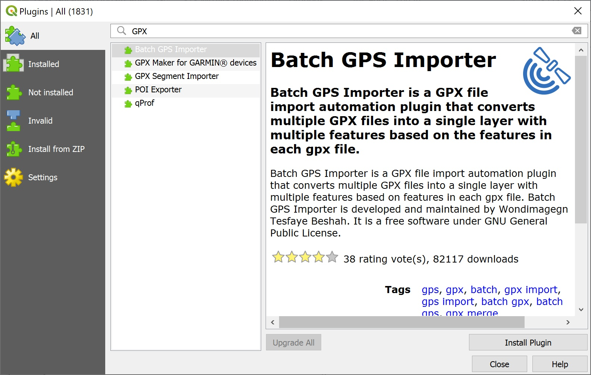 ] ] --- name: He8395 .toc.sidebar.left-column[ .outline[ # [Подготовка](#dataset) # [Сбор данных ](#He09a4) # [Переброс данных](#skip-data) # [Треки ](#H23ce4).fg[] ## [Объединение фрагментов ](#H743b4).fg[] ### [в R](#H6f5db) ### [в QGIS](#H7e03f) <span class="bullet bullet">[•](#H7e03f)</span><span class="bullet bullet-active">[•](#He8395)</span>.fg[].bg[] ## [Визуализация ](#H711a5) # [Находки ](#H1d80f) # [Окружающ.среда](#Hc129b) # [Анализ ](#H948b0) ] ] .toc.mainbar.right-column.scrollable[ .header.h3.broad[ в QGIS .parent[.grand[Объединение фрагментов .grand[Треки]]] ] .fixprecode[ Например, Batch GPS Importer 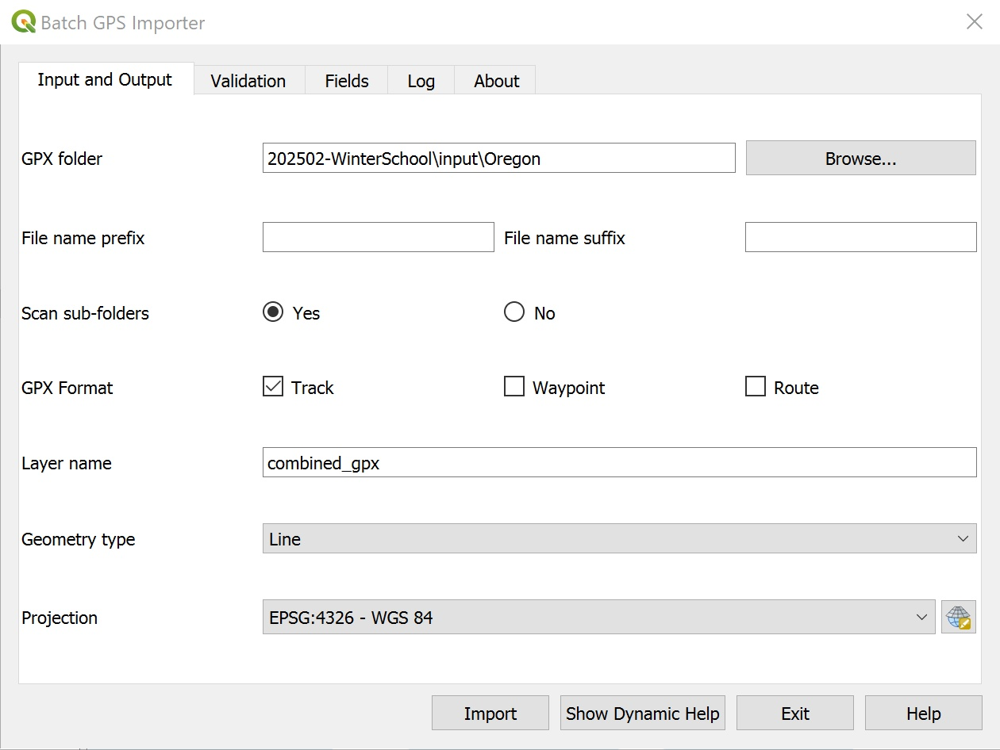 ] ] --- class: unlisted unnumbered name: H711a5 .toc.sidebar.left-column[ .outline[ # [Подготовка](#dataset) # [Сбор данных ](#He09a4) # [Переброс данных](#skip-data) # [Треки ](#H23ce4).fg[] ## [Объединение фрагментов ](#H743b4) ## [Визуализация ](#H711a5).fg[] ### [в R](#H711a5) <span class="bullet bullet-active">[•](#H711a5)</span><span class="bullet mslide99m">[•](#H78864)</span><span class="bullet mslide100m">[•](#H7fad2)</span><span class="bullet mslide101m">[•](#H08aa1)</span><span class="bullet mslide102m">[•](#H91a34)</span><span class="bullet mslide103m">[•](#He6a47)</span>.fg[].bg[] ### [в QGIS](#Haaeee) # [Находки ](#H1d80f) # [Окружающ.среда](#Hc129b) # [Анализ ](#H948b0) ] ] .toc.mainbar.right-column.scrollable[ .header.h3.broad[ в R .parent[.grand[Визуализация .grand[Треки]]] ] .fixprecode[ .font97[ ``` r ursa::glance("./output/track-oregon.geojson",field="device",plot.lwd=0.001) ``` 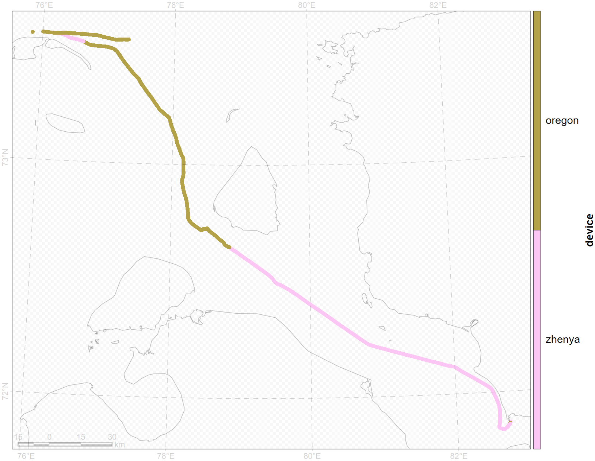 ] ] ] --- name: H78864 .toc.sidebar.left-column[ .outline[ # [Подготовка](#dataset) # [Сбор данных ](#He09a4) # [Переброс данных](#skip-data) # [Треки ](#H23ce4).fg[] ## [Объединение фрагментов ](#H743b4) ## [Визуализация ](#H711a5).fg[] ### [в R](#H711a5) <span class="bullet bullet">[•](#H711a5)</span><span class="bullet bullet-active">[•](#H78864)</span><span class="bullet mslide100m">[•](#H7fad2)</span><span class="bullet mslide101m">[•](#H08aa1)</span><span class="bullet mslide102m">[•](#H91a34)</span><span class="bullet mslide103m">[•](#He6a47)</span>.fg[].bg[] ### [в QGIS](#Haaeee) # [Находки ](#H1d80f) # [Окружающ.среда](#Hc129b) # [Анализ ](#H948b0) ] ] .toc.mainbar.right-column.scrollable[ .header.h3.broad[ в R .parent[.grand[Визуализация .grand[Треки]]] ] .fixprecode[ .font97[ ``` r ursa::glance("./output/trackline-oregon.geojson") ``` 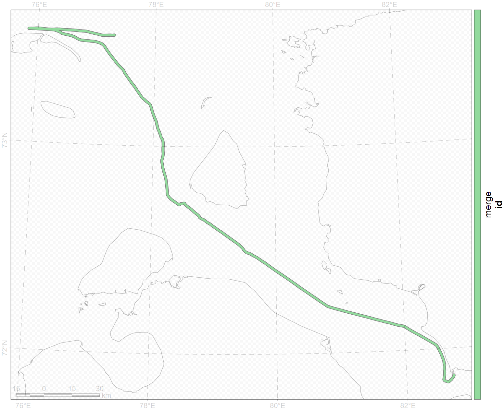 ] ] ] --- name: H7fad2 .toc.sidebar.left-column[ .outline[ # [Подготовка](#dataset) # [Сбор данных ](#He09a4) # [Переброс данных](#skip-data) # [Треки ](#H23ce4).fg[] ## [Объединение фрагментов ](#H743b4) ## [Визуализация ](#H711a5).fg[] ### [в R](#H711a5) <span class="bullet bullet">[•](#H711a5)</span><span class="bullet bullet">[•](#H78864)</span><span class="bullet bullet-active">[•](#H7fad2)</span><span class="bullet mslide101m">[•](#H08aa1)</span><span class="bullet mslide102m">[•](#H91a34)</span><span class="bullet mslide103m">[•](#He6a47)</span>.fg[].bg[] ### [в QGIS](#Haaeee) # [Находки ](#H1d80f) # [Окружающ.среда](#Hc129b) # [Анализ ](#H948b0) ] ] .toc.mainbar.right-column.scrollable[ .header.h3.broad[ в R .parent[.grand[Визуализация .grand[Треки]]] ] .fixprecode[ ``` r require(ursa) print(trkpt <- spatial_read("./input/track-general.geojson")) ``` ``` Simple feature collection with 30395 features and 4 fields Geometry type: POINT Dimension: XY Bounding box: xmin: -1821458 ymin: -2215496 xmax: 119951.6 ymax: -954666 Projected CRS: PROJCRS["unknown", BASEGEOGCRS["unknown", DATUM["World Geodetic System 1984", ELLIPSOID["WGS 84",6378137,298.257223563, LENGTHUNIT["metre",1]], ID["EPSG",6326]], PRIMEM["Greenwich",0, ANGLEUNIT["degree",0.0174532925199433], ID["EPSG",8901]]], CONVERSION["unknown", METHOD["Polar Stereographic (variant B)", ID["EPSG",9829]], PARAMETER["Latitude of standard parallel",73.0118, ANGLEUNIT["degree",0.0174532925199433], ID["EPSG",8832]], PARAMETER["Longitude of origin",79.2854, ANGLEUNIT["degree",0.0174532925199433], ID["EPSG",8833]], PARAMETER["False easting",0, LENGTHUNIT["metre",1], ID["EPSG",8806]], PARAMETER["False northing",0, LENGTHUNIT["metre",1], ID["EPSG",8807]]], CS[Cartesian,2], AXIS["(E)",south, MERIDIAN[90, ANGLEUNIT["degree",0.0174532925199433, ID["EPSG",9122]]], ORDER[1], LENGTHUNIT["metre",1, ID["EPSG",9001]]], AXIS["(N)",south, MERIDIAN[180, ANGLEUNIT["degree",0.0174532925199433, ID["EPSG",9122]]], ORDER[2], LENGTHUNIT["metre",1, ID["EPSG",9001]]]] First 10 features: id time ele device geometry 1 merge 2023-07-04 07:33:55 -6.75 zhenya POINT (-1771075 -2204679) 2 merge 2023-07-04 07:34:55 -6.27 zhenya POINT (-1771055 -2204634) 3 merge 2023-07-04 07:35:55 -6.41 zhenya POINT (-1771011 -2204556) 4 merge 2023-07-04 07:36:55 -6.22 zhenya POINT (-1770954 -2204470) 5 merge 2023-07-04 07:37:55 -6.12 zhenya POINT (-1770939 -2204446) 6 merge 2023-07-04 07:38:55 -6.62 zhenya POINT (-1770978 -2204480) 7 merge 2023-07-04 07:39:55 -6.96 zhenya POINT (-1771069 -2204512) 8 merge 2023-07-04 07:40:55 -6.93 zhenya POINT (-1771156 -2204518) 9 merge 2023-07-04 07:41:55 -7.51 zhenya POINT (-1771202 -2204509) 10 merge 2023-07-04 07:42:55 -7.51 zhenya POINT (-1771190 -2204494) ``` ``` r print(trkln <- trackline(trkpt)) ``` ``` Geometry set for 1 feature Geometry type: LINESTRING Dimension: XY Bounding box: xmin: -1821458 ymin: -2215496 xmax: 119951.6 ymax: -954666 Projected CRS: +proj=stere +lat_0=90 +lat_ts=73.0118 +lon_0=79.2854 +x_0=0 +y_0=0 +datum=WGS84 +units=m +no_defs ``` ] ] --- name: H08aa1 .toc.sidebar.left-column[ .outline[ # [Подготовка](#dataset) # [Сбор данных ](#He09a4) # [Переброс данных](#skip-data) # [Треки ](#H23ce4).fg[] ## [Объединение фрагментов ](#H743b4) ## [Визуализация ](#H711a5).fg[] ### [в R](#H711a5) <span class="bullet bullet">[•](#H711a5)</span><span class="bullet bullet">[•](#H78864)</span><span class="bullet bullet">[•](#H7fad2)</span><span class="bullet bullet-active">[•](#H08aa1)</span><span class="bullet mslide102m">[•](#H91a34)</span><span class="bullet mslide103m">[•](#He6a47)</span>.fg[].bg[] ### [в QGIS](#Haaeee) # [Находки ](#H1d80f) # [Окружающ.среда](#Hc129b) # [Анализ ](#H948b0) ] ] .toc.mainbar.right-column.scrollable[ .header.h3.broad[ в R .parent[.grand[Визуализация .grand[Треки]]] ] .fixprecode[ ``` r glance(trkln,style="2gis") ``` 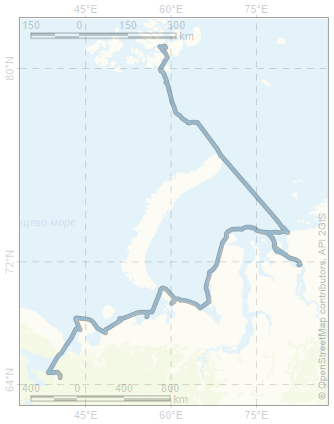 ] ] --- name: H91a34 .toc.sidebar.left-column[ .outline[ # [Подготовка](#dataset) # [Сбор данных ](#He09a4) # [Переброс данных](#skip-data) # [Треки ](#H23ce4).fg[] ## [Объединение фрагментов ](#H743b4) ## [Визуализация ](#H711a5).fg[] ### [в R](#H711a5) <span class="bullet bullet">[•](#H711a5)</span><span class="bullet bullet">[•](#H78864)</span><span class="bullet bullet">[•](#H7fad2)</span><span class="bullet bullet">[•](#H08aa1)</span><span class="bullet bullet-active">[•](#H91a34)</span><span class="bullet mslide103m">[•](#He6a47)</span>.fg[].bg[] ### [в QGIS](#Haaeee) # [Находки ](#H1d80f) # [Окружающ.среда](#Hc129b) # [Анализ ](#H948b0) ] ] .toc.mainbar.right-column.scrollable[ .header.h3.broad[ в R .parent[.grand[Визуализация .grand[Треки]]] ] .fixprecode[ ``` r trkdaily <- trackline(trkpt,by=list('Дата'=as.Date(trkpt$time))) ct <- colorize(trkdaily$'Дата',pal.bright=127,pal.rotate="circle") |> ursa_colortable() glance(trkdaily["Дата"],col=ct,resetGrid=TRUE,blank="aliceblue",coast.fill="lightyellow" ,basemap.order="before",pointsize=12) ``` 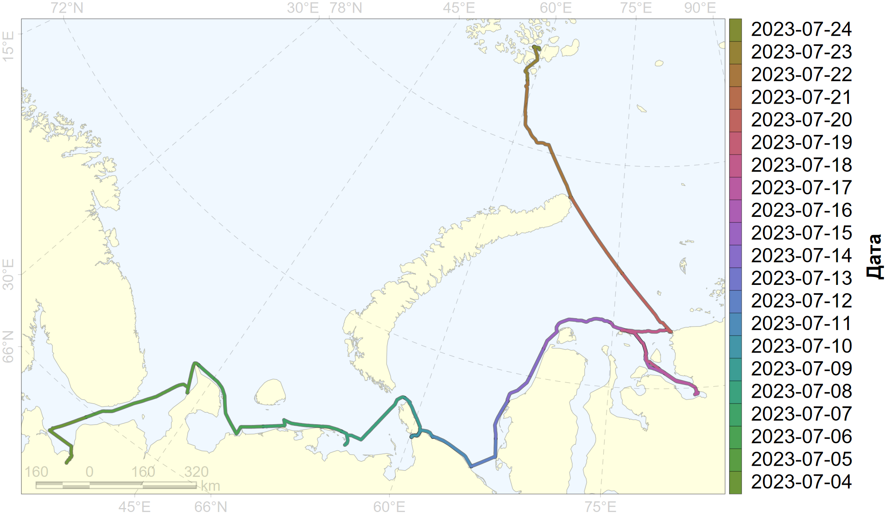 ] ] --- name: He6a47 .toc.sidebar.left-column[ .outline[ # [Подготовка](#dataset) # [Сбор данных ](#He09a4) # [Переброс данных](#skip-data) # [Треки ](#H23ce4).fg[] ## [Объединение фрагментов ](#H743b4) ## [Визуализация ](#H711a5).fg[] ### [в R](#H711a5) <span class="bullet bullet">[•](#H711a5)</span><span class="bullet bullet">[•](#H78864)</span><span class="bullet bullet">[•](#H7fad2)</span><span class="bullet bullet">[•](#H08aa1)</span><span class="bullet bullet">[•](#H91a34)</span><span class="bullet bullet-active">[•](#He6a47)</span>.fg[].bg[] ### [в QGIS](#Haaeee) # [Находки ](#H1d80f) # [Окружающ.среда](#Hc129b) # [Анализ ](#H948b0) ] ] .toc.mainbar.right-column.scrollable[ .header.h3.broad[ в R .parent[.grand[Визуализация .grand[Треки]]] ] .fixprecode[ ``` r mapview::mapview(trkln) ``` <div class="figure"> <div class="framed" style="height:632px; width=100%"> <iframe src="assets/widget_trkln.html" width="100%" height="632" class="ursa-widgetize"></iframe> </div> </div> ] ] --- class: unlisted unnumbered name: Haaeee .toc.sidebar.left-column[ .outline[ # [Подготовка](#dataset) # [Сбор данных ](#He09a4) # [Переброс данных](#skip-data) # [Треки ](#H23ce4).fg[] ## [Объединение фрагментов ](#H743b4) ## [Визуализация ](#H711a5).fg[] ### [в R](#H711a5) ### [в QGIS](#Haaeee).fg[].bg[] # [Находки ](#H1d80f) # [Окружающ.среда](#Hc129b) # [Анализ ](#H948b0) ] ] .toc.mainbar.right-column.scrollable[ .header.h3.broad[ в QGIS .parent[.grand[Визуализация .grand[Треки]]] ] .fixprecode[ <img src="assets/track-QGIS.jpg" width="1330" height="670" contain style="display: block; margin: auto auto auto 0;" /> ] ] --- class: break bottom youturn .youturn[ <div class="countdown" id="timer_7a1bedad" data-update-every="1" tabindex="0" style="right:0;bottom:0;"> <div class="countdown-controls"><button class="countdown-bump-down">−</button><button class="countdown-bump-up">+</button></div> <code class="countdown-time"><span class="countdown-digits minutes">05</span><span class="countdown-digits colon">:</span><span class="countdown-digits seconds">00</span></code> </div> # You turn + Загрузить треки + Настроить стили для отображения + Раскраска + Подписи ] --- name: H1d80f .toc.sidebar.left-column[ .outline[ # [Подготовка](#dataset) # [Сбор данных ](#He09a4) # [Переброс данных](#skip-data) # [Треки ](#H23ce4) # [Находки ](#H1d80f) <span class="bullet bullet-active">[•](#H1d80f)</span><span class="bullet mslide108m">[•](#H7176a)</span>.fg[].bg[] ## [Время ](#H75779) ## [Координаты ](#Hc001f) ## [Пеленгация ](#He83f6) ## [План «Б»](#hidden-crd) ## [Экспорт для ГИС ](#Hbe0d5) ## [Визуализация ](#H65dea) # [Окружающ.среда](#Hc129b) # [Анализ ](#H948b0) ] ] .toc.mainbar.right-column.scrollable[ .header.h1.broad[ Находки ] .fixprecode[ ## GPS-метка Содержит информацию о названии метки, её времени и координатах. Как правило, это трехзначное число: 002, 012, 312. ## Номер фотографии В учётный лист или полевой дневник заносятся четыре последних цифры. Каждые 10 тыс. снимков эти цифры могут повториться. В [таблице находок](#findings) указывается дата, чтобы исключить неоднозначность по 4 последним цифрам. По дате и четырём последним цифрам находится имя файла снимка. Из этого имени извлекается информаиц ## Записанное время Иногда может быть приблизительное, особенно если находка сделана участниками экспедиции или членами экипажа. ] ] --- name: H7176a .toc.sidebar.left-column[ .outline[ # [Подготовка](#dataset) # [Сбор данных ](#He09a4) # [Переброс данных](#skip-data) # [Треки ](#H23ce4) # [Находки ](#H1d80f) <span class="bullet bullet">[•](#H1d80f)</span><span class="bullet bullet-active">[•](#H7176a)</span>.fg[].bg[] ## [Время ](#H75779) ## [Координаты ](#Hc001f) ## [Пеленгация ](#He83f6) ## [План «Б»](#hidden-crd) ## [Экспорт для ГИС ](#Hbe0d5) ## [Визуализация ](#H65dea) # [Окружающ.среда](#Hc129b) # [Анализ ](#H948b0) ] ] .toc.mainbar.right-column.scrollable[ .header.h1.broad[ Находки ] .fixprecode[ ``` r Sys.setenv(TZ="UTC") a <- readxl::read_excel("./input/marmam.xlsx",sheet="mammals") ind <- is.na(a[["Повтор"]]) a <- a[ind,] d3 <- a[["Дата"]] |> as.Date() a[["Дата"]] <- tidyr::fill(data.frame(d3=d3),"d3",.direction="down")[[1]] a$time <- Sys.time() a$time[] <- NA a$lon <- NA_real_ a$lat <- NA_real_ trkFname <- "./input/Oregon/Track_2023-07-18 082447.gpx" print(sf::st_layers(trkFname)) ``` ``` Driver: GPX Available layers: layer_name geometry_type features fields crs_name 1 waypoints Point 0 23 WGS 84 2 routes Line String 0 12 WGS 84 3 tracks Multi Line String 1 13 WGS 84 4 route_points Point 0 25 WGS 84 5 track_points Point 1268 26 WGS 84 ``` ``` r trk <- sf::st_read(trkFname,layer="track_points",quiet=TRUE)[c("time","ele")] print(trk) ``` ``` Simple feature collection with 1268 features and 2 fields Geometry type: POINT Dimension: XY Bounding box: xmin: 76.62792 ymin: 71.86019 xmax: 82.72364 ymax: 73.51395 Geodetic CRS: WGS 84 First 10 features: time ele geometry 1 2023-07-17 16:04:28 7.79 POINT (82.72364 71.86383) 2 2023-07-17 16:04:29 7.80 POINT (82.72352 71.86384) 3 2023-07-17 16:05:47 7.80 POINT (82.72199 71.86266) 4 2023-07-17 16:06:03 7.80 POINT (82.72175 71.8625) 5 2023-07-17 16:09:13 7.80 POINT (82.72044 71.86077) 6 2023-07-17 16:09:20 7.80 POINT (82.7201 71.8606) 7 2023-07-17 16:09:24 7.80 POINT (82.71994 71.86048) 8 2023-07-17 16:09:27 10.95 POINT (82.71983 71.86039) 9 2023-07-17 16:09:29 14.02 POINT (82.71975 71.86033) 10 2023-07-17 16:09:31 14.82 POINT (82.71968 71.86028) ``` ``` r wptFname <- "./input/Oregon/Waypoints_18-JUL-23.gpx" print(sf::st_layers(wptFname)) ``` ``` Driver: GPX Available layers: layer_name geometry_type features fields crs_name 1 waypoints Point 9 23 WGS 84 2 routes Line String 0 12 WGS 84 3 tracks Multi Line String 0 12 WGS 84 4 route_points Point 0 25 WGS 84 5 track_points Point 0 26 WGS 84 ``` ``` r wpt <- sf::st_read(wptFname,layer="waypoints",quiet=TRUE)[,c("time","name","ele","sym")] wpt$name <- paste0("О",wpt$name) print(wpt) ``` ``` Simple feature collection with 9 features and 4 fields Geometry type: POINT Dimension: XY Bounding box: xmin: 76.00353 ymin: 72.66492 xmax: 78.77027 ymax: 73.54822 Geodetic CRS: WGS 84 time name ele sym geometry 1 2023-07-18 01:14:32 О228 30.52069 Animal Tracks POINT (78.77027 72.66492) 2 2023-07-18 01:50:02 О229 21.19933 Animal Tracks POINT (78.54281 72.72084) 3 2023-07-18 02:32:56 О230 14.74249 Animal Tracks POINT (78.31423 72.74485) 4 2023-07-18 02:59:26 О231 12.97899 Animal Tracks POINT (78.23512 72.81431) 5 2023-07-18 04:44:35 О232 15.16237 Animal Tracks POINT (78.04303 73.11846) 6 2023-07-18 05:01:37 О233 13.45486 Animal Tracks POINT (77.97593 73.16531) 7 2023-07-18 05:17:40 О234 13.96805 Animal Tracks POINT (77.90786 73.20753) 8 2023-07-18 14:39:45 О235 15.53560 Animal Tracks POINT (76.00353 73.5481) 9 2023-07-18 15:15:36 О236 16.46867 Animal Tracks POINT (76.33078 73.54822) ``` ] ] --- name: H75779 .toc.sidebar.left-column[ .outline[ # [Подготовка](#dataset) # [Сбор данных ](#He09a4) # [Переброс данных](#skip-data) # [Треки ](#H23ce4) # [Находки ](#H1d80f).fg[] ## [Время ](#H75779).fg[] ### [по GPS ](#H75779).fg[].bg[] ### [по фотографии ](#Hc0157) ### [напрямую ](#H0e04c) ## [Координаты ](#Hc001f) ## [Пеленгация ](#He83f6) ## [План «Б»](#hidden-crd) ## [Экспорт для ГИС ](#Hbe0d5) ## [Визуализация ](#H65dea) # [Окружающ.среда](#Hc129b) # [Анализ ](#H948b0) ] ] .toc.mainbar.right-column.scrollable[ .header.h3.broad[ по GPS .parent[.grand[Время .grand[Находки]]] ] .fixprecode[ ``` r 'wptTime' <- function(a,wpt) { patt <- ".*([A-ZА-Я]\\d{3}).*" pt <- a[["Точка трека"]] ind <- grep(patt,pt) pt[ind] <- gsub(patt,"\\1",pt[ind]) ind2 <- match(wpt$name,pt[ind]) ind2pt <- ind[na.omit(ind2)] # print(ind2pt) ind2w <- which(!is.na(ind2)) # print(wpt[ind2w,]) # a[ind2pt,c("lon","lat")] <- ursa::spatial_coordinates(wpt[ind2w,]) a[["time"]][ind2pt] <- wpt[["time"]][ind2w] print(a[ind2pt,c("Время UTC","time","Точка трека","Вид")]) a } a <- wptTime(a,wpt) ``` ``` # A tibble: 7 × 4 `Время UTC` time `Точка трека` Вид <chr> <dttm> <chr> <chr> 1 01:14 2023-07-18 01:14:32 О228 Тюлень sp 2 <NA> 2023-07-18 01:50:02 О229 Тюлень sp 3 02:59 2023-07-18 02:59:26 О231 Тюлень sp 4 <NA> 2023-07-18 04:44:35 О232 Белуха 5 05:01 2023-07-18 05:01:37 О233 Белуха 6 <NA> 2023-07-18 05:17:40 О234 Кольчатая нерпа 7 15:15 2023-07-18 15:15:36 О236 3877 Кольчатая нерпа ``` ] ] --- name: Hc0157 .toc.sidebar.left-column[ .outline[ # [Подготовка](#dataset) # [Сбор данных ](#He09a4) # [Переброс данных](#skip-data) # [Треки ](#H23ce4) # [Находки ](#H1d80f).fg[] ## [Время ](#H75779).fg[] ### [по GPS ](#H75779) ### [по фотографии ](#Hc0157).fg[].bg[] ### [напрямую ](#H0e04c) ## [Координаты ](#Hc001f) ## [Пеленгация ](#He83f6) ## [План «Б»](#hidden-crd) ## [Экспорт для ГИС ](#Hbe0d5) ## [Визуализация ](#H65dea) # [Окружающ.среда](#Hc129b) # [Анализ ](#H948b0) ] ] .toc.mainbar.right-column.scrollable[ .header.h3.broad[ по фотографии .parent[.grand[Время .grand[Находки]]] ] .fixprecode[ ``` r 'photoTime' <- function(a,photoDir) { list1 <- dir(path=file.path("./input",photoDir) ,pattern="\\d{4}\\.jpg$",full.names=TRUE) list2 <- basename(list1) photo <- a[["Точка трека"]] ind <- grep("\\D*\\d{4}\\D*",photo) ph <- gsub("[А-Я]\\d{3}\\D*","",photo[ind]) ph <- gsub("\\s+","",ph) ph <- gsub("^\\D|\\D$","",ph) ph <- strsplit(ph,split="(\\s+|,\\s*)") ph <- lapply(ph,\(x) { y <- strsplit(x,split="\\s*-\\s*")[[1]] if (length(y)==1) return(y) y <- as.integer(y) y <- sprintf("%04d",sort(seq(y[1],y[2]))) }) d3 <- a[["Дата"]][ind] found <- vector("list",length(d3)) for (i in seq_along(d3) |> sample()) { if (!is.na(a[["time"]][ind][i])) next patt <- paste0(format(d3[i],"%Y%m%d"),"-\\d{6}-",ph[[i]],"\\.jpg") ind2 <- unlist(lapply(patt,grep,list2)) if (!length(ind2)) next if (length(ind2)>1) ind2 <- sample(ind2,1) found[[i]] <- as.POSIXct(gsub(".*(\\d{8}-\\d{6}).*","\\1",list2[ind2]) ,format="%Y%m%d-%H%M%S") a[["time"]][ind][i] <- found[[i]] } ind2 <- which(sapply(found,\(x) length(x)>0)) ind3 <- ind[ind2] print(a[ind3,c("Дата","Точка трека","Вид","Субстрат","time")]) a } a <- photoTime(a,"2023-07-18") ``` ``` # A tibble: 3 × 5 Дата `Точка трека` Вид Субстрат time <date> <chr> <chr> <chr> <dttm> 1 2023-07-18 2409-2411 Тюлень sp льдина 2023-07-18 01:26:39 2 2023-07-18 2432 Лахтак льдина 2023-07-18 01:31:21 3 2023-07-18 2433 Кольчатая нерпа разводья 2023-07-18 01:40:54 ``` ] ] --- name: H0e04c .toc.sidebar.left-column[ .outline[ # [Подготовка](#dataset) # [Сбор данных ](#He09a4) # [Переброс данных](#skip-data) # [Треки ](#H23ce4) # [Находки ](#H1d80f).fg[] ## [Время ](#H75779).fg[] ### [по GPS ](#H75779) ### [по фотографии ](#Hc0157) ### [напрямую ](#H0e04c).fg[].bg[] ## [Координаты ](#Hc001f) ## [Пеленгация ](#He83f6) ## [План «Б»](#hidden-crd) ## [Экспорт для ГИС ](#Hbe0d5) ## [Визуализация ](#H65dea) # [Окружающ.среда](#Hc129b) # [Анализ ](#H948b0) ] ] .toc.mainbar.right-column.scrollable[ .header.h3.broad[ напрямую .parent[.grand[Время .grand[Находки]]] ] .fixprecode[ ``` r 'manualTime' <- function(a) { t3 <- a[["Точка трека"]] ind <- which(grepl("^\\d{1,2}\\:\\d{2}(\\:\\d{2})*$",t3)) if (length(ind2 <- grep("^\\d{1,2}\\:\\d{2}$",t3[ind]))) t3[ind][ind2] <- paste0(t3[ind][ind2],":30") ind3 <- is.na(a$time[ind]) a$time[ind[ind3]] <- paste(format(a[["Дата"]][ind[ind3]],"%Y-%m-%d"),t3[ind[ind3]]) ind4 <- which(a$time[ind]>=head(trk$time,1) & a$time[ind]<=tail(trk$time,1)) print(a[ind[ind4],c("Дата","Точка трека","Вид","time","lon","lat")]) a } a <- manualTime(a) ``` ``` # A tibble: 9 × 6 Дата `Точка трека` Вид time lon lat <date> <chr> <chr> <dttm> <dbl> <dbl> 1 2023-07-18 01:08:29 Тюлень sp 2023-07-18 01:08:29 NA NA 2 2023-07-18 01:20 Тюлень sp 2023-07-18 01:20:30 NA NA 3 2023-07-18 01:54 Тюлень sp 2023-07-18 01:54:30 NA NA 4 2023-07-18 02:18 Тюлень sp 2023-07-18 02:18:30 NA NA 5 2023-07-18 02:18 Тюлень sp 2023-07-18 02:18:30 NA NA 6 2023-07-18 02:19 Тюлень sp 2023-07-18 02:19:30 NA NA 7 2023-07-18 02:19 Тюлень sp 2023-07-18 02:19:30 NA NA 8 2023-07-18 03:19 Тюлень sp 2023-07-18 03:19:30 NA NA 9 2023-07-18 04:03 Тюлень sp 2023-07-18 04:03:30 NA NA ``` ] ] --- name: Hc001f .toc.sidebar.left-column[ .outline[ # [Подготовка](#dataset) # [Сбор данных ](#He09a4) # [Переброс данных](#skip-data) # [Треки ](#H23ce4) # [Находки ](#H1d80f).fg[] ## [Время ](#H75779) ## [Координаты ](#Hc001f).fg[].bg[] ### [из GPS метки ](#H2cdd9) ### [из путевого трека ](#H24a88) ## [Пеленгация ](#He83f6) ## [План «Б»](#hidden-crd) ## [Экспорт для ГИС ](#Hbe0d5) ## [Визуализация ](#H65dea) # [Окружающ.среда](#Hc129b) # [Анализ ](#H948b0) ] ] .toc.mainbar.right-column.scrollable[ .header.h2.broad[ Координаты .parent[.grand[Находки]] ] .fixprecode[ ``` r a <- a[!is.na(a$time),] a <- a[a$time>=head(trk$time,1) & a$time<=tail(trk$time,1),] print(a[,c("Точка трека","Вид","time","lon","lat")]) ``` ``` # A tibble: 18 × 5 `Точка трека` Вид time lon lat <chr> <chr> <dttm> <dbl> <dbl> 1 01:08:29 Тюлень sp 2023-07-18 01:08:29 NA NA 2 О228 Тюлень sp 2023-07-18 01:14:32 NA NA 3 01:20 Тюлень sp 2023-07-18 01:20:30 NA NA 4 2409-2411 Тюлень sp 2023-07-18 01:26:39 NA NA 5 2432 Лахтак 2023-07-18 01:31:21 NA NA 6 2433 Кольчатая нерпа 2023-07-18 01:40:54 NA NA 7 О229 Тюлень sp 2023-07-18 01:50:02 NA NA 8 01:54 Тюлень sp 2023-07-18 01:54:30 NA NA 9 02:18 Тюлень sp 2023-07-18 02:18:30 NA NA 10 02:18 Тюлень sp 2023-07-18 02:18:30 NA NA 11 02:19 Тюлень sp 2023-07-18 02:19:30 NA NA 12 02:19 Тюлень sp 2023-07-18 02:19:30 NA NA 13 О231 Тюлень sp 2023-07-18 02:59:26 NA NA 14 03:19 Тюлень sp 2023-07-18 03:19:30 NA NA 15 04:03 Тюлень sp 2023-07-18 04:03:30 NA NA 16 О232 Белуха 2023-07-18 04:44:35 NA NA 17 О233 Белуха 2023-07-18 05:01:37 NA NA 18 О234 Кольчатая нерпа 2023-07-18 05:17:40 NA NA ``` ] ] --- name: H2cdd9 .toc.sidebar.left-column[ .outline[ # [Подготовка](#dataset) # [Сбор данных ](#He09a4) # [Переброс данных](#skip-data) # [Треки ](#H23ce4) # [Находки ](#H1d80f).fg[] ## [Время ](#H75779) ## [Координаты ](#Hc001f).fg[] ### [из GPS метки ](#H2cdd9).fg[].bg[] ### [из путевого трека ](#H24a88) ## [Пеленгация ](#He83f6) ## [План «Б»](#hidden-crd) ## [Экспорт для ГИС ](#Hbe0d5) ## [Визуализация ](#H65dea) # [Окружающ.среда](#Hc129b) # [Анализ ](#H948b0) ] ] .toc.mainbar.right-column.scrollable[ .header.h3.broad[ из GPS метки .parent[.grand[Координаты .grand[Находки]]] ] .fixprecode[ ``` r 'getCoordsFromPoint' <- function(a,gpx) { ind <- match(a$time,gpx$time) if (all(is.na(ind))) return(a) ind1 <- na.omit(ind) ind2 <- which(!is.na(ind)) ind2 <- ind2[is.na(a$lon[ind2]) | is.na(a$lat[ind2])] xy <- ursa::spatial_coordinates(gpx)[ind1,] a$lon[ind2] <- xy[,1] a$lat[ind2] <- xy[,2] a } a <- getCoordsFromPoint(a,wpt) print(a[,c("Точка трека","Вид","time","lon","lat")]) ``` ``` # A tibble: 18 × 5 `Точка трека` Вид time lon lat <chr> <chr> <dttm> <dbl> <dbl> 1 01:08:29 Тюлень sp 2023-07-18 01:08:29 NA NA 2 О228 Тюлень sp 2023-07-18 01:14:32 78.8 72.7 3 01:20 Тюлень sp 2023-07-18 01:20:30 NA NA 4 2409-2411 Тюлень sp 2023-07-18 01:26:39 NA NA 5 2432 Лахтак 2023-07-18 01:31:21 NA NA 6 2433 Кольчатая нерпа 2023-07-18 01:40:54 NA NA 7 О229 Тюлень sp 2023-07-18 01:50:02 78.5 72.7 8 01:54 Тюлень sp 2023-07-18 01:54:30 NA NA 9 02:18 Тюлень sp 2023-07-18 02:18:30 NA NA 10 02:18 Тюлень sp 2023-07-18 02:18:30 NA NA 11 02:19 Тюлень sp 2023-07-18 02:19:30 NA NA 12 02:19 Тюлень sp 2023-07-18 02:19:30 NA NA 13 О231 Тюлень sp 2023-07-18 02:59:26 78.2 72.8 14 03:19 Тюлень sp 2023-07-18 03:19:30 NA NA 15 04:03 Тюлень sp 2023-07-18 04:03:30 NA NA 16 О232 Белуха 2023-07-18 04:44:35 78.0 73.1 17 О233 Белуха 2023-07-18 05:01:37 78.0 73.2 18 О234 Кольчатая нерпа 2023-07-18 05:17:40 77.9 73.2 ``` ] ] --- name: H24a88 .toc.sidebar.left-column[ .outline[ # [Подготовка](#dataset) # [Сбор данных ](#He09a4) # [Переброс данных](#skip-data) # [Треки ](#H23ce4) # [Находки ](#H1d80f).fg[] ## [Время ](#H75779) ## [Координаты ](#Hc001f).fg[] ### [из GPS метки ](#H2cdd9) ### [из путевого трека ](#H24a88).fg[].bg[] ## [Пеленгация ](#He83f6) ## [План «Б»](#hidden-crd) ## [Экспорт для ГИС ](#Hbe0d5) ## [Визуализация ](#H65dea) # [Окружающ.среда](#Hc129b) # [Анализ ](#H948b0) ] ] .toc.mainbar.right-column.scrollable[ .header.h3.broad[ из путевого трека .parent[.grand[Координаты .grand[Находки]]] ] .fixprecode[ ``` r 'getCoordsBetweenPoints' <- function(a,gpx) { if (!length(ind <- which(is.na(a$lon) | is.na(a$lat)))) return(a) for (i in ind |> sample()) { ind4 <- which(trk$time-a$time[i]>0) |> head(1) trk2 <- trk[ind4+c(-1,0),] trk2 <- ursa:::spatialize(trk2,style="stere") sc <- as.numeric(a$time[i]-trk2$time[1],units="secs")/ as.numeric(trk2$time[2]-trk2$time[1],units="secs") xy2 <- ursa::spatial_coordinates(trk2) xy <- data.frame(lon=xy2[1,1]+sc*(xy2[2,1]-xy2[1,1]) ,lat=xy2[1,2]+sc*(xy2[2,2]-xy2[1,2])) xy <- sf::st_as_sf(xy,coords=c("lon","lat"),crs=sf::st_crs(trk2)) xy <- ursa::spatial_coordinates(sf::st_transform(xy,4326)) a$lon[i] <- xy[,1] a$lat[i] <- xy[,2] } a } a <- getCoordsBetweenPoints(a,trk) print(a[,c("Точка трека","Вид","time","lon","lat")]) ``` ``` # A tibble: 18 × 5 `Точка трека` Вид time lon lat <chr> <chr> <dttm> <dbl> <dbl> 1 01:08:29 Тюлень sp 2023-07-18 01:08:29 78.8 72.7 2 О228 Тюлень sp 2023-07-18 01:14:32 78.8 72.7 3 01:20 Тюлень sp 2023-07-18 01:20:30 78.7 72.7 4 2409-2411 Тюлень sp 2023-07-18 01:26:39 78.7 72.7 5 2432 Лахтак 2023-07-18 01:31:21 78.7 72.7 6 2433 Кольчатая нерпа 2023-07-18 01:40:54 78.6 72.7 7 О229 Тюлень sp 2023-07-18 01:50:02 78.5 72.7 8 01:54 Тюлень sp 2023-07-18 01:54:30 78.5 72.7 9 02:18 Тюлень sp 2023-07-18 02:18:30 78.4 72.7 10 02:18 Тюлень sp 2023-07-18 02:18:30 78.4 72.7 11 02:19 Тюлень sp 2023-07-18 02:19:30 78.4 72.7 12 02:19 Тюлень sp 2023-07-18 02:19:30 78.4 72.7 13 О231 Тюлень sp 2023-07-18 02:59:26 78.2 72.8 14 03:19 Тюлень sp 2023-07-18 03:19:30 78.2 72.9 15 04:03 Тюлень sp 2023-07-18 04:03:30 78.2 73.0 16 О232 Белуха 2023-07-18 04:44:35 78.0 73.1 17 О233 Белуха 2023-07-18 05:01:37 78.0 73.2 18 О234 Кольчатая нерпа 2023-07-18 05:17:40 77.9 73.2 ``` ] ] --- name: He83f6 .toc.sidebar.left-column[ .outline[ # [Подготовка](#dataset) # [Сбор данных ](#He09a4) # [Переброс данных](#skip-data) # [Треки ](#H23ce4) # [Находки ](#H1d80f).fg[] ## [Время ](#H75779) ## [Координаты ](#Hc001f) ## [Пеленгация ](#He83f6) <span class="bullet bullet-active">[•](#He83f6)</span><span class="bullet mslide117m">[•](#Hf8d28)</span>.fg[].bg[] ## [План «Б»](#hidden-crd) ## [Экспорт для ГИС ](#Hbe0d5) ## [Визуализация ](#H65dea) # [Окружающ.среда](#Hc129b) # [Анализ ](#H948b0) ] ] .toc.mainbar.right-column.scrollable[ .header.h2.broad[ Пеленгация .parent[.grand[Находки]] ] .fixprecode[ .clarify[ Столбцы «дальность» и «пеленг» в таблице находок. + Если судно в походе, то фиксируется направление в часах от носа судна + Если судно на рейде или совершает манёвры, то фиксируется сторона света (в градусах компаса) ] ] ] --- name: Hf8d28 .toc.sidebar.left-column[ .outline[ # [Подготовка](#dataset) # [Сбор данных ](#He09a4) # [Переброс данных](#skip-data) # [Треки ](#H23ce4) # [Находки ](#H1d80f).fg[] ## [Время ](#H75779) ## [Координаты ](#Hc001f) ## [Пеленгация ](#He83f6) <span class="bullet bullet">[•](#He83f6)</span><span class="bullet bullet-active">[•](#Hf8d28)</span>.fg[].bg[] ## [План «Б»](#hidden-crd) ## [Экспорт для ГИС ](#Hbe0d5) ## [Визуализация ](#H65dea) # [Окружающ.среда](#Hc129b) # [Анализ ](#H948b0) ] ] .toc.mainbar.right-column.scrollable[ .header.h2.broad[ Пеленгация .parent[.grand[Находки]] ] .fixprecode[ ``` r 'getbearing' <- function(device,time,distance,bearing) { bearing1 <- bearing bearing2 <- NA if (!is.na(bearing)) { pattHHMM <- "(\\d{1,2})\\:(\\d{2})" if (grepl("\\d+(T|Т)$",bearing)) { bearing2 <- as.numeric(gsub("\\D","",bearing)) } else if (grepl(pattHHMM,bearing)) { hh <- as.numeric(gsub(pattHHMM,"\\1",bearing)) mm <- as.numeric(gsub(pattHHMM,"\\2",bearing)) bearing <- 30*(hh+mm/60) } else { bearing <- as.numeric(gsub("\\s*ч$","",bearing)) if ((bearing>=0)&&(bearing<=24)) bearing <- bearing*30 } } else bearing <- 0 if (is.na(distance)) distance <- 0 g <- device ind <- match(time,g$time) if (is.na(ind)) { ind <- which(g$time>time)[1] if (is.na(ind)) stop("out of temporal range?") } g3 <- ursa:::spatialize(g[ind+seq(-2,2),"time"],resetGrid=TRUE,style="stere") xy <- ursa::spatial_coordinates(g3) pca <- prcomp(xy,scale=FALSE) direction <- unname(pca$rotation[,1]) if (direction[1]==0) theta <- pi/2*sign(direction[2]) else theta <- atan(direction[2]/direction[1]) # print(theta*180/pi) if (direction[1]<0) { theta <- pi+theta } theta <- pi/2-theta x <- as.numeric(g3$time) y <- unname(predict(pca)[,1]) n <- length(x) slope <- 3.6*(mean(x*y)-mean(x)*mean(y))/var(x)*n/(n-1) if (slope<0) { theta <- theta-pi slope <- -slope } g2 <- g[ind+c(-1,0),] tr <- ursa::trackline(g2) trlen <- ursa::spatial_length(tr) trdur <- as.numeric(difftime(g2$time[2],g2$time[1]),"secs") trspd <- trlen/trdur*3.6 tr <- ursa::spatial_coordinates(sf::st_segmentize(tr,trlen/1000))[[1]] t3 <- as.numeric(g2$time) scale <- (as.numeric(time)-t3[1])/(t3[2]-t3[1]) ind <- round((nrow(tr)-1)*scale+1) crd <- data.frame(t(tr[ind,])) heading <- lwgeom::st_geod_azimuth(g2) units(heading) <- "degrees" if (is.na(bearing2)) bearing2 <- as.numeric(heading)+bearing ep <- geosphere::destPoint(crd,b=bearing2,d=distance) strip <- sin(as.numeric(bearing)*pi/180)*as.numeric(distance) strip[abs(strip)>5000] <- round(strip[abs(strip)>5000],-3) strip[abs(strip)>2000] <- round(strip[abs(strip)>2000],-2) strip[abs(strip)>=0] <- round(strip[abs(strip)>=0],-1) ret <- data.frame(time=time,observer_lon=crd[,1],observer_lat=crd[,2] ,target_lon=ep[,1],target_lat=ep[,2] ,in_strip=strip ,speed=slope,heading=theta*180/pi ,check.names=FALSE ) rownames(ret) <- NULL ret$time <- NULL ret } 'observationState' <- function(a,trk) { colBearing <- grep("(пеленг|азимут)",colnames(a),ignore.case=TRUE,value=TRUE) colDistance <- grep("дистанц|(расст.*набл)",colnames(a),ignore.case=TRUE,value=TRUE) lapply(seq(nrow(a)),\(i) { getbearing(device=trk,time=a$time[i] ,distance=a[[colDistance]][i],bearing=a[[colBearing]][i]) }) |> do.call(rbind,args=_) } b <- observationState(a,trk) # b <- cbind(a[,c("Вид","time")],b) print(b,digits=4) ``` ``` observer_lon observer_lat target_lon target_lat in_strip speed heading 1 78.80 72.65 78.82 72.66 1000 17.222 -61.081 2 78.77 72.66 78.77 72.66 -40 16.261 -27.594 3 78.73 72.68 78.73 72.68 0 17.628 -53.865 4 78.69 72.68 78.66 72.69 -500 18.152 -48.644 5 78.66 72.69 78.65 72.69 -400 18.198 -45.523 6 78.59 72.71 78.58 72.71 -600 17.478 -54.910 7 78.54 72.72 78.54 72.72 0 6.144 -39.802 8 78.54 72.72 78.53 72.73 -250 3.118 -12.339 9 78.43 72.72 78.44 72.73 500 16.933 -56.538 10 78.43 72.72 78.44 72.73 1000 16.933 -56.538 11 78.42 72.72 78.43 72.73 700 17.833 -56.366 12 78.42 72.72 78.44 72.73 900 17.833 -56.366 13 78.24 72.81 78.23 72.81 -40 19.976 -11.744 14 78.19 72.87 78.23 72.88 1500 19.603 -19.823 15 78.17 73.00 78.15 73.00 -400 20.581 1.429 16 78.04 73.12 78.03 73.12 -200 19.846 -16.762 17 77.98 73.17 77.97 73.17 0 19.670 -17.711 18 77.91 73.21 77.91 73.21 90 19.920 -54.157 ``` ] ] --- name: hidden-crd class: blackout .toc.sidebar.left-column[ .outline[ # [Подготовка](#dataset) # [Сбор данных ](#He09a4) # [Переброс данных](#skip-data) # [Треки ](#H23ce4) # [Находки ](#H1d80f).fg[] ## [Время ](#H75779) ## [Координаты ](#Hc001f) ## [Пеленгация ](#He83f6) ## [План «Б»](#hidden-crd).fg[].bg[] ## [Экспорт для ГИС ](#Hbe0d5) ## [Визуализация ](#H65dea) # [Окружающ.среда](#Hc129b) # [Анализ ](#H948b0) ] ] .toc.mainbar.right-column.scrollable[ .header.h2.broad[ План «Б» .parent[.grand[Находки]] ] .fixprecode[ Для каждой находки (с фото или без) ставить метку GPS + С ГИС + Отобразить трек (track, track_points) + Вывести метки находок (waypoints) + Воспользоваться инструментом получения координат при клике на waypoints. + Без ГИС + Открыть [GPX](#gpx) в текстовом редакторе и соотносить название метки с её координатами. Но без ГИС не получится создать файл, который мог бы быть открыт кем-то другим в ГИС. ] ] --- name: Hbe0d5 .toc.sidebar.left-column[ .outline[ # [Подготовка](#dataset) # [Сбор данных ](#He09a4) # [Переброс данных](#skip-data) # [Треки ](#H23ce4) # [Находки ](#H1d80f).fg[] ## [Время ](#H75779) ## [Координаты ](#Hc001f) ## [Пеленгация ](#He83f6) ## [План «Б»](#hidden-crd) ## [Экспорт для ГИС ](#Hbe0d5).fg[].bg[] ### [R](#Hb55f8) ### [QGIS](#H07776) ## [Визуализация ](#H65dea) # [Окружающ.среда](#Hc129b) # [Анализ ](#H948b0) ] ] .toc.mainbar.right-column.scrollable[ .header.h2.broad[ Экспорт для ГИС .parent[.grand[Находки]] ] .fixprecode[ Создание точечного слоя ] ] --- class: unlisted unnumbered name: Hb55f8 .toc.sidebar.left-column[ .outline[ # [Подготовка](#dataset) # [Сбор данных ](#He09a4) # [Переброс данных](#skip-data) # [Треки ](#H23ce4) # [Находки ](#H1d80f).fg[] ## [Время ](#H75779) ## [Координаты ](#Hc001f) ## [Пеленгация ](#He83f6) ## [План «Б»](#hidden-crd) ## [Экспорт для ГИС ](#Hbe0d5).fg[] ### [R](#Hb55f8).fg[].bg[] ### [QGIS](#H07776) ## [Визуализация ](#H65dea) # [Окружающ.среда](#Hc129b) # [Анализ ](#H948b0) ] ] .toc.mainbar.right-column.scrollable[ .header.h3.broad[ R .parent[.grand[Экспорт для ГИС .grand[Находки]]] ] .fixprecode[ ``` r a <- sf::st_as_sf(a,coords=c("lon","lat"),crs=4326) print(a[,c("Вид","Кол-во","Субстрат")]) ``` ``` Simple feature collection with 18 features and 3 fields Geometry type: POINT Dimension: XY Bounding box: xmin: 77.90786 ymin: 72.65398 xmax: 78.80145 ymax: 73.20753 Geodetic CRS: WGS 84 # A tibble: 18 × 4 Вид `Кол-во` Субстрат geometry <chr> <dbl> <chr> <POINT [°]> 1 Тюлень sp 1 разводья (78.80145 72.65398) 2 Тюлень sp 1 разводья (78.77027 72.66492) 3 Тюлень sp 1 разводья (78.73301 72.67523) 4 Тюлень sp 4 льдина (78.68872 72.68498) 5 Лахтак 4 льдина (78.65728 72.69365) 6 Кольчатая нерпа 1 разводья (78.58754 72.70971) 7 Тюлень sp 1 разводья (78.54281 72.72084) 8 Тюлень sp 1 разводья (78.53791 72.72264) 9 Тюлень sp 5 льдина (78.42713 72.72192) 10 Тюлень sp 19 льдина (78.42713 72.72192) 11 Тюлень sp 1 разводья (78.42004 72.72338) 12 Тюлень sp 1 разводья (78.42004 72.72338) 13 Тюлень sp 1 вода (78.23512 72.81431) 14 Тюлень sp 59 льдина (78.19121 72.872) 15 Тюлень sp 1 разводья (78.16659 73.00207) 16 Белуха 1 вода (78.04303 73.11846) 17 Белуха 1 вода (77.97593 73.16531) 18 Кольчатая нерпа 1 разводья (77.90786 73.20753) ``` ``` r dst <- "./output/mammals_subset.geojson" ursa::spatial_write(a,dst) print(file.info(dst)[,"size",drop=FALSE]) ``` ``` size ./output/mammals_subset.geojson 13849 ``` ] ] --- class: unlisted unnumbered name: H07776 .toc.sidebar.left-column[ .outline[ # [Подготовка](#dataset) # [Сбор данных ](#He09a4) # [Переброс данных](#skip-data) # [Треки ](#H23ce4) # [Находки ](#H1d80f).fg[] ## [Время ](#H75779) ## [Координаты ](#Hc001f) ## [Пеленгация ](#He83f6) ## [План «Б»](#hidden-crd) ## [Экспорт для ГИС ](#Hbe0d5).fg[] ### [R](#Hb55f8) ### [QGIS](#H07776).fg[].bg[] ## [Визуализация ](#H65dea) # [Окружающ.среда](#Hc129b) # [Анализ ](#H948b0) ] ] .toc.mainbar.right-column.scrollable[ .header.h3.broad[ QGIS .parent[.grand[Экспорт для ГИС .grand[Находки]]] ] .fixprecode[ + Сохранить лист Экселя в формате CSV. + [Layer » Add Layer » Add Vector Layer](#menulayer) Указать названия столбцов, содержащих координаты. <img src="assets/importCSV.jpg" width="1330" height="528" contain style="display: block; margin: auto auto auto 0;" /> ] ] --- class: unlisted unnumbered name: H65dea .toc.sidebar.left-column[ .outline[ # [Подготовка](#dataset) # [Сбор данных ](#He09a4) # [Переброс данных](#skip-data) # [Треки ](#H23ce4) # [Находки ](#H1d80f).fg[] ## [Время ](#H75779) ## [Координаты ](#Hc001f) ## [Пеленгация ](#He83f6) ## [План «Б»](#hidden-crd) ## [Экспорт для ГИС ](#Hbe0d5) ## [Визуализация ](#H65dea).fg[] ### [R](#H65dea) <span class="bullet bullet-active">[•](#H65dea)</span><span class="bullet mslide124m">[•](#H4af68)</span>.fg[].bg[] ### [QGIS](#H5a9b3) # [Окружающ.среда](#Hc129b) # [Анализ ](#H948b0) ] ] .toc.mainbar.right-column.scrollable[ .header.h3.broad[ R .parent[.grand[Визуализация .grand[Находки]]] ] .fixprecode[ ``` r session_grid(NULL) trkpt <- ursa:::spatialize("./input/track-general.geojson",style="laea",lon0=60) session_grid(expand=1.1) loc <- ursa:::spatialize("./input/marmam.geojson") compose_open() panel_new("white") panel_plot(trackline(trkpt),lwd=3,col="grey30",alpha=0.3) panel_decor(coast.fill="#00000010",margin=c(F,T,T,F),lang="ru") ursa:::panel_cluster(loc["Вид"],legend="topleft",bg="#FFFFFFAF") panel_annotation(lon=40,lat=72,label=expression(italic("БАРЕНЦЕВО МОРЕ")) ,fg="white",bg="grey70",cex=1.1) panel_annotation(lon=80,lat=78,label=expression(italic("КАРСКОЕ МОРЕ")) ,fg="white",bg="grey70",cex=1.1) compose_close() ``` ] ] --- name: H4af68 .toc.sidebar.left-column[ .outline[ # [Подготовка](#dataset) # [Сбор данных ](#He09a4) # [Переброс данных](#skip-data) # [Треки ](#H23ce4) # [Находки ](#H1d80f).fg[] ## [Время ](#H75779) ## [Координаты ](#Hc001f) ## [Пеленгация ](#He83f6) ## [План «Б»](#hidden-crd) ## [Экспорт для ГИС ](#Hbe0d5) ## [Визуализация ](#H65dea).fg[] ### [R](#H65dea) <span class="bullet bullet">[•](#H65dea)</span><span class="bullet bullet-active">[•](#H4af68)</span>.fg[].bg[] ### [QGIS](#H5a9b3) # [Окружающ.среда](#Hc129b) # [Анализ ](#H948b0) ] ] .toc.mainbar.right-column.scrollable[ .header.h3.broad[ R .parent[.grand[Визуализация .grand[Находки]]] ] .fixprecode[ 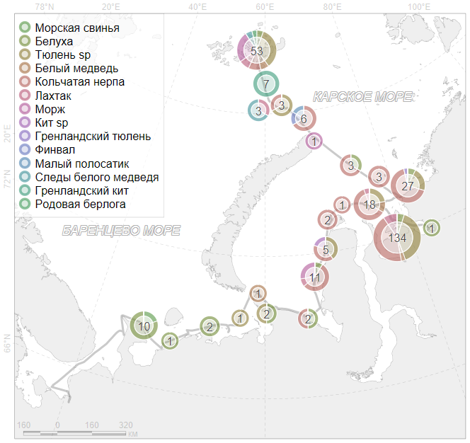 ] ] --- class: unlisted unnumbered name: H5a9b3 .toc.sidebar.left-column[ .outline[ # [Подготовка](#dataset) # [Сбор данных ](#He09a4) # [Переброс данных](#skip-data) # [Треки ](#H23ce4) # [Находки ](#H1d80f).fg[] ## [Время ](#H75779) ## [Координаты ](#Hc001f) ## [Пеленгация ](#He83f6) ## [План «Б»](#hidden-crd) ## [Экспорт для ГИС ](#Hbe0d5) ## [Визуализация ](#H65dea).fg[] ### [R](#H65dea) ### [QGIS](#H5a9b3).fg[].bg[] # [Окружающ.среда](#Hc129b) # [Анализ ](#H948b0) ] ] .toc.mainbar.right-column.scrollable[ .header.h3.broad[ QGIS .parent[.grand[Визуализация .grand[Находки]]] ] .fixprecode[ <img src="assets/findings-QGIS.jpg" width="1330" height="670" contain style="display: block; margin: auto auto auto 0;" /> ] ] --- class: break bottom youturn .youturn[ <div class="countdown" id="timer_066f6d3f" data-update-every="1" tabindex="0" style="right:0;bottom:0;"> <div class="countdown-controls"><button class="countdown-bump-down">−</button><button class="countdown-bump-up">+</button></div> <code class="countdown-time"><span class="countdown-digits minutes">05</span><span class="countdown-digits colon">:</span><span class="countdown-digits seconds">00</span></code> </div> # You turn + Загрузить находки + Настроить стили для отображения ] --- name: Hc129b .toc.sidebar.left-column[ .outline[ # [Подготовка](#dataset) # [Сбор данных ](#He09a4) # [Переброс данных](#skip-data) # [Треки ](#H23ce4) # [Находки ](#H1d80f) # [Окружающ.среда](#Hc129b).fg[].bg[] ## [Визуализация ](#H6e0a0) # [Анализ ](#H948b0) ] ] .toc.mainbar.right-column.scrollable[ .header.h1.broad[ Окружающая среда ] .fixprecode[ Как правило, это растры: батиметрия, морской лёд. ] ] --- class: unlisted unnumbered name: H6e0a0 .toc.sidebar.left-column[ .outline[ # [Подготовка](#dataset) # [Сбор данных ](#He09a4) # [Переброс данных](#skip-data) # [Треки ](#H23ce4) # [Находки ](#H1d80f) # [Окружающ.среда](#Hc129b).fg[] ## [Визуализация ](#H6e0a0).fg[] ### [R](#H6e0a0).fg[].bg[] ### [QGIS](#He8b50) # [Анализ ](#H948b0) ] ] .toc.mainbar.right-column.scrollable[ .header.h3.broad[ R .parent[.grand[Визуализация .grand[Окружающ.среда]]] ] .fixprecode[ Обычно используется пакет **`terra`**. Ниже пример с использованием пакета **`ursa`**. ``` r a <- ursa_read("input/gebco_2024_n82.0_s64.0_w30.0_e90.0.tif") p <- colorize(a,breakvalue=c(-500,-200,-50,-20),pal="Blues",inv=TRUE) display(p,coast.fill="beige",pointsize=16,lang="ru",units="Метры") ``` 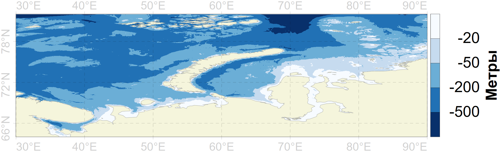 ] ] --- class: unlisted unnumbered name: He8b50 .toc.sidebar.left-column[ .outline[ # [Подготовка](#dataset) # [Сбор данных ](#He09a4) # [Переброс данных](#skip-data) # [Треки ](#H23ce4) # [Находки ](#H1d80f) # [Окружающ.среда](#Hc129b).fg[] ## [Визуализация ](#H6e0a0).fg[] ### [R](#H6e0a0) ### [QGIS](#He8b50) <span class="bullet bullet-active">[•](#He8b50)</span><span class="bullet mslide132m">[•](#Hba8e1)</span><span class="bullet mslide133m">[•](#Hcd892)</span>.fg[].bg[] # [Анализ ](#H948b0) ] ] .toc.mainbar.right-column.scrollable[ .header.h3.broad[ QGIS .parent[.grand[Визуализация .grand[Окружающ.среда]]] ] .fixprecode[ <img src="assets/RasterAddLayer.jpg" width="1330" height="670" contain style="display: block; margin: auto auto auto 0;" /> ] ] --- name: Hba8e1 .toc.sidebar.left-column[ .outline[ # [Подготовка](#dataset) # [Сбор данных ](#He09a4) # [Переброс данных](#skip-data) # [Треки ](#H23ce4) # [Находки ](#H1d80f) # [Окружающ.среда](#Hc129b).fg[] ## [Визуализация ](#H6e0a0).fg[] ### [R](#H6e0a0) ### [QGIS](#He8b50) <span class="bullet bullet">[•](#He8b50)</span><span class="bullet bullet-active">[•](#Hba8e1)</span><span class="bullet mslide133m">[•](#Hcd892)</span>.fg[].bg[] # [Анализ ](#H948b0) ] ] .toc.mainbar.right-column.scrollable[ .header.h3.broad[ QGIS .parent[.grand[Визуализация .grand[Окружающ.среда]]] ] .fixprecode[ <img src="assets/RasterColorization.jpg" width="1330" height="670" contain style="display: block; margin: auto auto auto 0;" /> ] ] --- name: Hcd892 .toc.sidebar.left-column[ .outline[ # [Подготовка](#dataset) # [Сбор данных ](#He09a4) # [Переброс данных](#skip-data) # [Треки ](#H23ce4) # [Находки ](#H1d80f) # [Окружающ.среда](#Hc129b).fg[] ## [Визуализация ](#H6e0a0).fg[] ### [R](#H6e0a0) ### [QGIS](#He8b50) <span class="bullet bullet">[•](#He8b50)</span><span class="bullet bullet">[•](#Hba8e1)</span><span class="bullet bullet-active">[•](#Hcd892)</span>.fg[].bg[] # [Анализ ](#H948b0) ] ] .toc.mainbar.right-column.scrollable[ .header.h3.broad[ QGIS .parent[.grand[Визуализация .grand[Окружающ.среда]]] ] .fixprecode[ <img src="assets/RasterOutput.jpg" width="1330" height="670" contain style="display: block; margin: auto auto auto 0;" /> ] ] --- class: break bottom youturn .youturn[ <div class="countdown" id="timer_e7dee90a" data-update-every="1" tabindex="0" style="right:0;bottom:0;"> <div class="countdown-controls"><button class="countdown-bump-down">−</button><button class="countdown-bump-up">+</button></div> <code class="countdown-time"><span class="countdown-digits minutes">03</span><span class="countdown-digits colon">:</span><span class="countdown-digits seconds">00</span></code> </div> # You turn + Загрузить файл с батиметрией и раскрасить лишь грубины ] --- name: H948b0 .toc.sidebar.left-column[ .outline[ # [Подготовка](#dataset) # [Сбор данных ](#He09a4) # [Переброс данных](#skip-data) # [Треки ](#H23ce4) # [Находки ](#H1d80f) # [Окружающ.среда](#Hc129b) # [Анализ ](#H948b0).fg[].bg[] ## [Расстояние до берега](#dist2coast) ## [Батиметрия ](#analysis-gebco) ## [Сравнение средних ](#H04b87) ] ] .toc.mainbar.right-column.scrollable[ .header.h1.broad[ Анализ ] .fixprecode[ ## Изучаемая территория ``` r session_grid(NULL) a <- ursa:::spatialize("./input/track-general.geojson",style="stere",lon0=60) g1 <- regrid(spatial_grid(a),res=2000,border=100) print(g1) session_grid(g1) ref <- ursa(0L) ursa_write(ref,"./output/studyarea.tif") display(ref,legend=NULL) ``` .pulling[ .pull-left-60[ ``` List of 9 $ columns: int 1096 $ rows : int 1021 $ resx : num 2000 $ resy : num 2000 $ minx : num -1222000 $ maxx : num 970000 $ miny : num -2860000 $ maxy : num -818000 $ crs : chr "stere lon_0=60 lat_0=90 lat_ts=72 'WGS 84'" - attr(*, "class")= chr ".ursaGrid" ``` ] .pull-right-40[ 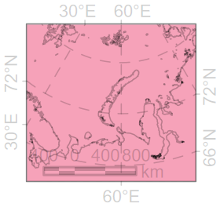 ] ] ] ] --- name: dist2coast .toc.sidebar.left-column[ .outline[ # [Подготовка](#dataset) # [Сбор данных ](#He09a4) # [Переброс данных](#skip-data) # [Треки ](#H23ce4) # [Находки ](#H1d80f) # [Окружающ.среда](#Hc129b) # [Анализ ](#H948b0).fg[] ## [Расстояние до берега](#dist2coast).fg[].bg[] ### [по всему региону ](#H32d12) ### [для находок ](#H0a31f) ## [Батиметрия ](#analysis-gebco) ## [Сравнение средних ](#H04b87) ] ] .toc.mainbar.right-column.scrollable[ .header.h2.broad[ Расстояние до берега .parent[.grand[Анализ]] ] .fixprecode[ Используем сухопутные полигоны из [OSM данных](#osmdata). ``` r src <- "https://osmdata.openstreetmap.de/download/simplified-land-polygons-complete-3857.zip" osmdata <- file.path("./output",basename(src)) if (!file.exists(osmdata)) download.file(src,osmdata,mode="wb") list1 <- unzip(osmdata,exdir=tempdir(),junkpaths=TRUE) session_grid(NULL) land <- spatial_read(list1[grep("\\.shp$",basename(list1))]) file.remove(list1) |> invisible() cntr <- spatial_centroid(land) |> spatial_coordinates() ind <- which.min(cntr[,2]) land <- land[-ind,] ``` ] ] --- name: H32d12 .toc.sidebar.left-column[ .outline[ # [Подготовка](#dataset) # [Сбор данных ](#He09a4) # [Переброс данных](#skip-data) # [Треки ](#H23ce4) # [Находки ](#H1d80f) # [Окружающ.среда](#Hc129b) # [Анализ ](#H948b0).fg[] ## [Расстояние до берега](#dist2coast).fg[] ### [по всему региону ](#H32d12) <span class="bullet bullet-active">[•](#H32d12)</span><span class="bullet mslide139m">[•](#H2d5cc)</span>.fg[].bg[] ### [для находок ](#H0a31f) ## [Батиметрия ](#analysis-gebco) ## [Сравнение средних ](#H04b87) ] ] .toc.mainbar.right-column.scrollable[ .header.h3.broad[ по всему региону .parent[.grand[Расстояние до берега .grand[Анализ]]] ] .fixprecode[ ``` r ref <- ursa_read("./output/studyarea.tif") ref <- regrid(ref,mul=1/4) extended <- spatial_buffer(ursa:::spatialize(ursa_bbox(ref)),500*1e3) coast <- spatial_intersection(spatial_geometry(land),extended) coast <- sf::st_simplify(coast,ursa(ref,"cellsize"),preserveTopology=TRUE) |> sf::st_cast("MULTIPOLYGON") # здесь `sf::st_simplify` использована для упрощения, на практике используйте `sf::st_segmentize` session_grid(ref) dist2coast <- ursa:::.dist2(ref,coast)["dist"]*1e-3 ursa_write(dist2coast,"./output/dist2coast.tif") ``` ] ] --- name: H2d5cc .toc.sidebar.left-column[ .outline[ # [Подготовка](#dataset) # [Сбор данных ](#He09a4) # [Переброс данных](#skip-data) # [Треки ](#H23ce4) # [Находки ](#H1d80f) # [Окружающ.среда](#Hc129b) # [Анализ ](#H948b0).fg[] ## [Расстояние до берега](#dist2coast).fg[] ### [по всему региону ](#H32d12) <span class="bullet bullet">[•](#H32d12)</span><span class="bullet bullet-active">[•](#H2d5cc)</span>.fg[].bg[] ### [для находок ](#H0a31f) ## [Батиметрия ](#analysis-gebco) ## [Сравнение средних ](#H04b87) ] ] .toc.mainbar.right-column.scrollable[ .header.h3.broad[ по всему региону .parent[.grand[Расстояние до берега .grand[Анализ]]] ] .fixprecode[ ``` r display(dist2coast,blank="white",pointsize=12,coast.fill="#00000010") ``` 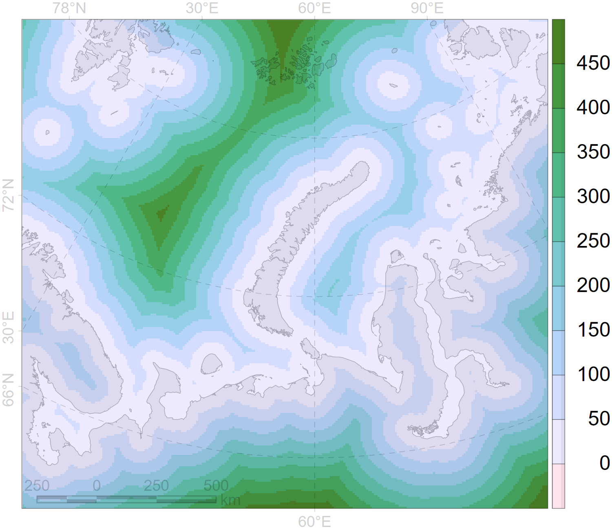 ] ] --- name: H0a31f .toc.sidebar.left-column[ .outline[ # [Подготовка](#dataset) # [Сбор данных ](#He09a4) # [Переброс данных](#skip-data) # [Треки ](#H23ce4) # [Находки ](#H1d80f) # [Окружающ.среда](#Hc129b) # [Анализ ](#H948b0).fg[] ## [Расстояние до берега](#dist2coast).fg[] ### [по всему региону ](#H32d12) ### [для находок ](#H0a31f) <span class="bullet bullet-active">[•](#H0a31f)</span><span class="bullet mslide141m">[•](#H6cc6d)</span><span class="bullet mslide142m">[•](#Hf5cf8)</span><span class="bullet mslide143m">[•](#H82c8b)</span>.fg[].bg[] ## [Батиметрия ](#analysis-gebco) ## [Сравнение средних ](#H04b87) ] ] .toc.mainbar.right-column.scrollable[ .header.h3.broad[ для находок .parent[.grand[Расстояние до берега .grand[Анализ]]] ] .fixprecode[ .font100[ ``` r loc <- ursa:::spatialize("./input/marmam.geojson",resetGrid=TRUE)[c("time","Вид")] b <- spatial_buffer(ursa:::spatialize(spatial_bbox(loc)),100*1e3) b <- sf::st_segmentize(b,100) coast <- spatial_intersection(b,spatial_geometry(land)) coast <- sf::st_segmentize(coast,100) coast <- sf::st_cast(coast,"POINT") dist2coast <- ursa:::.dist2(loc,coast) cl <- coast[dist2coast$ind,] loc$coast <- dist2coast$dist seg <- cbind(spatial_coordinates(loc),spatial_coordinates(cl)) seg <- apply(seg,1,\(x) sf::st_linestring(matrix(x,ncol=2,byrow=TRUE)),simplify=FALSE) seg <- sf::st_sfc(seg,crs=sf::st_crs(loc)) spatial_data(seg) <- data.frame(dist=round(loc$coast*1e-3,1)) ``` ``` r spatial_data(loc)[sort(sample(seq(nrow(loc)),7)),] ``` ``` time Вид coast 41 2023-07-16 03:12:23 Кольчатая нерпа 5262.372 56 2023-07-16 08:13:02 Кольчатая нерпа 16323.688 63 2023-07-16 08:13:49 Кольчатая нерпа 16335.148 96 2023-07-16 08:46:32 Тюлень sp 14962.827 97 2023-07-16 08:46:42 Тюлень sp 14946.064 112 2023-07-18 01:40:54 Кольчатая нерпа 8128.729 277 2023-07-23 11:15:21 Морж 3268.522 ``` ``` r m <- mapview::mapview(spatial_geometry(loc),cex=3,col.regions="red",layer.name="finding")+ mapview::mapview(spatial_geometry(cl),cex=2,col.regions="blue",layer.name="coast")+ mapview::mapview(seg,popup="dist",layer.name="segment") ``` ] ] ] --- name: H6cc6d .toc.sidebar.left-column[ .outline[ # [Подготовка](#dataset) # [Сбор данных ](#He09a4) # [Переброс данных](#skip-data) # [Треки ](#H23ce4) # [Находки ](#H1d80f) # [Окружающ.среда](#Hc129b) # [Анализ ](#H948b0).fg[] ## [Расстояние до берега](#dist2coast).fg[] ### [по всему региону ](#H32d12) ### [для находок ](#H0a31f) <span class="bullet bullet">[•](#H0a31f)</span><span class="bullet bullet-active">[•](#H6cc6d)</span><span class="bullet mslide142m">[•](#Hf5cf8)</span><span class="bullet mslide143m">[•](#H82c8b)</span>.fg[].bg[] ## [Батиметрия ](#analysis-gebco) ## [Сравнение средних ](#H04b87) ] ] .toc.mainbar.right-column.scrollable[ .header.h3.broad[ для находок .parent[.grand[Расстояние до берега .grand[Анализ]]] ] .fixprecode[ ``` r m ``` <div class="figure"> <div class="framed" style="height:632px; width=100%"> <iframe src="assets/widget_dist2coast.html" width="100%" height="632" class="ursa-widgetize"></iframe> </div> </div> ] ] --- name: Hf5cf8 .toc.sidebar.left-column[ .outline[ # [Подготовка](#dataset) # [Сбор данных ](#He09a4) # [Переброс данных](#skip-data) # [Треки ](#H23ce4) # [Находки ](#H1d80f) # [Окружающ.среда](#Hc129b) # [Анализ ](#H948b0).fg[] ## [Расстояние до берега](#dist2coast).fg[] ### [по всему региону ](#H32d12) ### [для находок ](#H0a31f) <span class="bullet bullet">[•](#H0a31f)</span><span class="bullet bullet">[•](#H6cc6d)</span><span class="bullet bullet-active">[•](#Hf5cf8)</span><span class="bullet mslide143m">[•](#H82c8b)</span>.fg[].bg[] ## [Батиметрия ](#analysis-gebco) ## [Сравнение средних ](#H04b87) ] ] .toc.mainbar.right-column.scrollable[ .header.h3.broad[ для находок .parent[.grand[Расстояние до берега .grand[Анализ]]] ] .fixprecode[ ``` r require(tmap) tmap_mode("view") m <- tm_shape(loc)+tm_dots("coast",alpha=0.5,group="Находка")+ tm_shape(cl)+tm_dots(alpha=0.2,group="До берега")+ tm_shape(seg)+tm_lines("dist",alpha=0.5,group="Между ними") ``` <div class="figure"> <div class="framed" style="height:540px; width=100%"> <iframe src="assets/widget_tmap-view.html" width="100%" height="540" class="ursa-widgetize"></iframe> </div> </div> ] ] --- name: H82c8b .toc.sidebar.left-column[ .outline[ # [Подготовка](#dataset) # [Сбор данных ](#He09a4) # [Переброс данных](#skip-data) # [Треки ](#H23ce4) # [Находки ](#H1d80f) # [Окружающ.среда](#Hc129b) # [Анализ ](#H948b0).fg[] ## [Расстояние до берега](#dist2coast).fg[] ### [по всему региону ](#H32d12) ### [для находок ](#H0a31f) <span class="bullet bullet">[•](#H0a31f)</span><span class="bullet bullet">[•](#H6cc6d)</span><span class="bullet bullet">[•](#Hf5cf8)</span><span class="bullet bullet-active">[•](#H82c8b)</span>.fg[].bg[] ## [Батиметрия ](#analysis-gebco) ## [Сравнение средних ](#H04b87) ] ] .toc.mainbar.right-column.scrollable[ .header.h3.broad[ для находок .parent[.grand[Расстояние до берега .grand[Анализ]]] ] .fixprecode[ ``` r tmap_mode("plot") data(World) m+tm_scale_bar()+tm_graticules(alpha=0.2)+tm_shape(World)+tm_borders()+ tm_shape(terra::rast("./output/dist2coast.tif"))+tm_raster(alpha=0.3) ``` 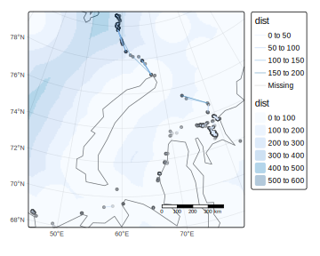 ] ] --- name: analysis-gebco .toc.sidebar.left-column[ .outline[ # [Подготовка](#dataset) # [Сбор данных ](#He09a4) # [Переброс данных](#skip-data) # [Треки ](#H23ce4) # [Находки ](#H1d80f) # [Окружающ.среда](#Hc129b) # [Анализ ](#H948b0).fg[] ## [Расстояние до берега](#dist2coast) ## [Батиметрия ](#analysis-gebco).fg[] ### [по всему региону](#analysis-gebco) <span class="bullet bullet-active">[•](#analysis-gebco)</span><span class="bullet mslide146m">[•](#Hf2a24)</span>.fg[].bg[] ### [для находок ](#Hd8e4b) ## [Сравнение средних ](#H04b87) ] ] .toc.mainbar.right-column.scrollable[ .header.h3.broad[ по всему региону .parent[.grand[Батиметрия .grand[Анализ]]] ] .fixprecode[ <div id="analysis-gebco"></div> Используем предварительно [скачанные данные GEBCO](#download-gebco). ``` r src <- "./input/gebco_2024_n82.0_s64.0_w30.0_e90.0.tif" depth <- ursa_read(src) str(ursa_grid(depth)) ``` ``` List of 9 $ columns: int 7200 $ rows : int 2160 $ resx : num 0.00833 $ resy : num 0.00833 $ minx : num 30 $ maxx : num 90 $ miny : num 64 $ maxy : num 82 $ crs : chr "WGS 84" - attr(*, "class")= chr ".ursaGrid" ``` ``` r display(depth,pointsize=12) ``` 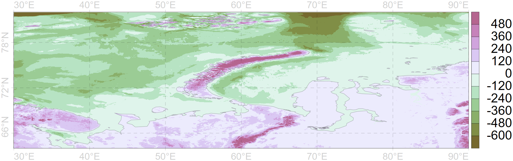 ] ] --- name: Hf2a24 .toc.sidebar.left-column[ .outline[ # [Подготовка](#dataset) # [Сбор данных ](#He09a4) # [Переброс данных](#skip-data) # [Треки ](#H23ce4) # [Находки ](#H1d80f) # [Окружающ.среда](#Hc129b) # [Анализ ](#H948b0).fg[] ## [Расстояние до берега](#dist2coast) ## [Батиметрия ](#analysis-gebco).fg[] ### [по всему региону](#analysis-gebco) <span class="bullet bullet">[•](#analysis-gebco)</span><span class="bullet bullet-active">[•](#Hf2a24)</span>.fg[].bg[] ### [для находок ](#Hd8e4b) ## [Сравнение средних ](#H04b87) ] ] .toc.mainbar.right-column.scrollable[ .header.h3.broad[ по всему региону .parent[.grand[Батиметрия .grand[Анализ]]] ] .fixprecode[ ``` r print(gebco <- ursa:::.gdalwarp(src,grid=ursa_grid("./output/studyarea.tif"))) ``` ``` name mean sd sum min max n nNA [1] Band 1 -52.9459 184.522 -47991151 -789 1687 906418 212598 ``` ``` r ursa_write(gebco,"./output/gebco.tif") ``` ``` r display(gebco,blank="white",pointsize=12,coast_fill="#00000010") ``` 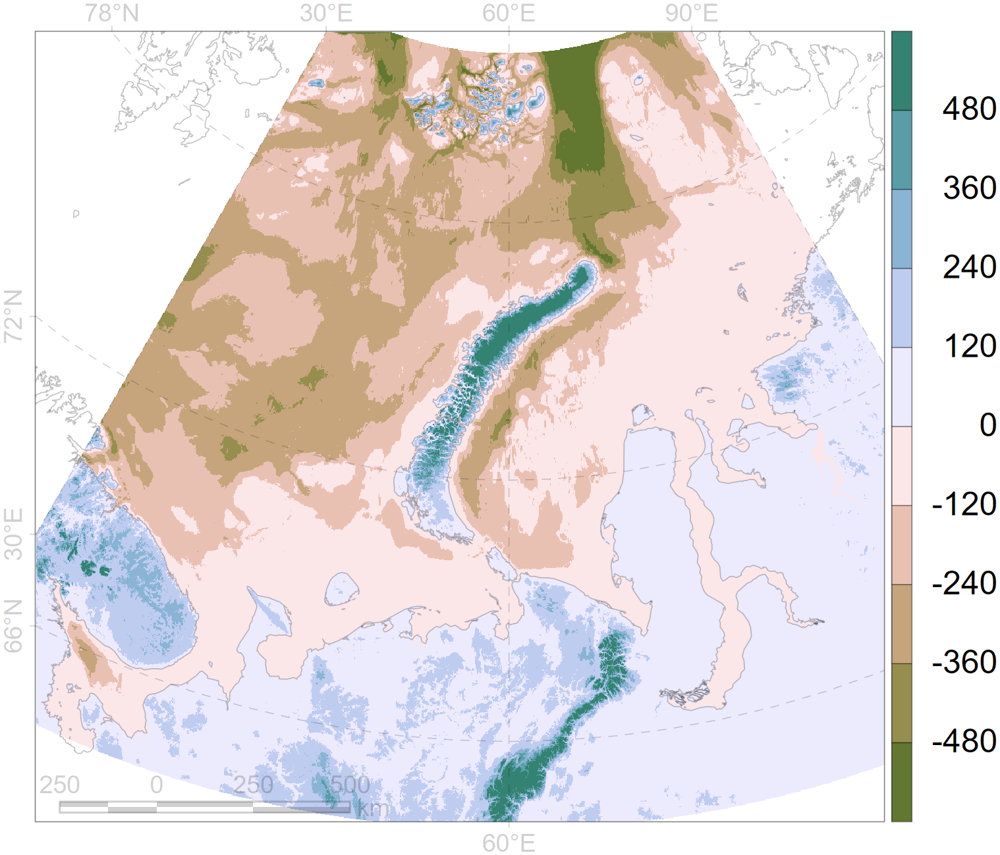 ] ] --- name: Hd8e4b .toc.sidebar.left-column[ .outline[ # [Подготовка](#dataset) # [Сбор данных ](#He09a4) # [Переброс данных](#skip-data) # [Треки ](#H23ce4) # [Находки ](#H1d80f) # [Окружающ.среда](#Hc129b) # [Анализ ](#H948b0).fg[] ## [Расстояние до берега](#dist2coast) ## [Батиметрия ](#analysis-gebco).fg[] ### [по всему региону](#analysis-gebco) ### [для находок ](#Hd8e4b).fg[].bg[] ## [Сравнение средних ](#H04b87) ] ] .toc.mainbar.right-column.scrollable[ .header.h3.broad[ для находок .parent[.grand[Батиметрия .grand[Анализ]]] ] .fixprecode[ ``` r session_grid(NULL) gebco <- ursa_read("./output/gebco.tif") session_grid(gebco) if (!exists("loc")) loc <- spatial_read("./input/marmam.geojson")[c("time","Вид")] loc$gebco <- value_xy(gebco,loc)[1,] session_grid(NULL) depth <- ursa_read("input/gebco_2024_n82.0_s64.0_w30.0_e90.0.tif") loc$depth <- value_xy(depth,spatial_transform(loc,depth))[1,] spatial_data(loc)[sort(sample(seq(nrow(loc)),14)),] ``` ``` time Вид coast gebco depth 5 2023-07-06 05:24:51 Белуха 8563.430 -34 -41 13 2023-07-06 07:23:32 Белуха 5651.277 -50 -49 32 2023-07-14 15:00:30 Тюлень sp 16911.179 -24 -24 52 2023-07-16 07:56:38 Кольчатая нерпа 16201.662 -10 -11 61 2023-07-16 08:13:23 Кольчатая нерпа 16328.547 -11 -11 64 2023-07-16 08:13:51 Кольчатая нерпа 16335.692 -11 -11 98 2023-07-16 08:46:44 Лахтак 14942.750 -11 -11 118 2023-07-18 01:50:50 Тюлень sp 7849.993 -14 -13 122 2023-07-18 01:50:50 Тюлень sp 7849.993 -14 -13 124 2023-07-18 01:52:01 Кольчатая нерпа 7837.442 -14 -14 132 2023-07-18 01:59:05 Лахтак 7630.982 -14 -14 133 2023-07-18 01:59:35 Тюлень sp 7642.254 -14 -14 139 2023-07-18 02:04:51 Тюлень sp 8290.736 -14 -14 186 2023-07-18 15:15:36 Кольчатая нерпа 5282.736 -11 -10 ``` ] ] --- name: H04b87 .toc.sidebar.left-column[ .outline[ # [Подготовка](#dataset) # [Сбор данных ](#He09a4) # [Переброс данных](#skip-data) # [Треки ](#H23ce4) # [Находки ](#H1d80f) # [Окружающ.среда](#Hc129b) # [Анализ ](#H948b0).fg[] ## [Расстояние до берега](#dist2coast) ## [Батиметрия ](#analysis-gebco) ## [Сравнение средних ](#H04b87).fg[].bg[] ### [Оценочно ](#H127a6) ### [Детально ](#Hf9337) ] ] .toc.mainbar.right-column.scrollable[ .header.h2.broad[ Сравнение средних .parent[.grand[Анализ]] ] .fixprecode[ ``` r da <- loc[loc$'Вид' %in% c("Лахтак","Морж"),] ``` ] ] --- name: H127a6 .toc.sidebar.left-column[ .outline[ # [Подготовка](#dataset) # [Сбор данных ](#He09a4) # [Переброс данных](#skip-data) # [Треки ](#H23ce4) # [Находки ](#H1d80f) # [Окружающ.среда](#Hc129b) # [Анализ ](#H948b0).fg[] ## [Расстояние до берега](#dist2coast) ## [Батиметрия ](#analysis-gebco) ## [Сравнение средних ](#H04b87).fg[] ### [Оценочно ](#H127a6).fg[] #### [по глубине ](#H127a6).fg[].bg[] #### [по расстоянию до берега ](#H6abbd) ### [Детально ](#Hf9337) ] ] .toc.mainbar.right-column.scrollable[ .header.h4.broad[ по глубине .parent[.grand[Оценочно .grand[Сравнение средних] .grand[Анализ]]] ] .fixprecode[ ``` r ggstatsplot::ggbetweenstats(da,'Вид',depth) ``` <img src="assets/between-depth.png" width="1330" height="620" contain style="display: block; margin: auto auto auto 0;" /> ] ] --- name: H6abbd .toc.sidebar.left-column[ .outline[ # [Подготовка](#dataset) # [Сбор данных ](#He09a4) # [Переброс данных](#skip-data) # [Треки ](#H23ce4) # [Находки ](#H1d80f) # [Окружающ.среда](#Hc129b) # [Анализ ](#H948b0).fg[] ## [Расстояние до берега](#dist2coast) ## [Батиметрия ](#analysis-gebco) ## [Сравнение средних ](#H04b87).fg[] ### [Оценочно ](#H127a6).fg[] #### [по глубине ](#H127a6) #### [по расстоянию до берега ](#H6abbd).fg[].bg[] ### [Детально ](#Hf9337) ] ] .toc.mainbar.right-column.scrollable[ .header.h4.broad[ по расстоянию до берега .parent[.grand[Оценочно .grand[Сравнение средних] .grand[Анализ]]] ] .fixprecode[ ``` r ggstatsplot::ggbetweenstats(da,'Вид',coast) ``` 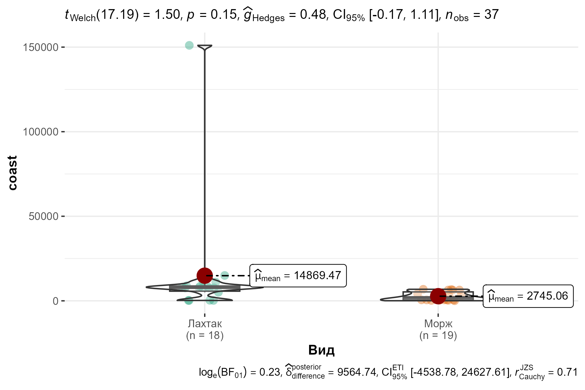 ] ] --- name: Hf9337 .toc.sidebar.left-column[ .outline[ # [Подготовка](#dataset) # [Сбор данных ](#He09a4) # [Переброс данных](#skip-data) # [Треки ](#H23ce4) # [Находки ](#H1d80f) # [Окружающ.среда](#Hc129b) # [Анализ ](#H948b0).fg[] ## [Расстояние до берега](#dist2coast) ## [Батиметрия ](#analysis-gebco) ## [Сравнение средних ](#H04b87).fg[] ### [Оценочно ](#H127a6) ### [Детально ](#Hf9337) <span class="bullet bullet-active">[•](#Hf9337)</span><span class="bullet mslide153m">[•](#H9bd38)</span>.fg[].bg[] ] ] .toc.mainbar.right-column.scrollable[ .header.h3.broad[ Детально .parent[.grand[Сравнение средних .grand[Анализ]]] ] .fixprecode[ ``` r x <- da[da$'Вид'=="Лахтак",]$'coast' summary(x) ``` ``` Min. 1st Qu. Median Mean 3rd Qu. Max. 237.5 5692.9 7806.5 14814.7 8747.2 150496.3 ``` ``` r y <- da[da$'Вид'=="Морж",]$'coast' summary(y) ``` ``` Min. 1st Qu. Median Mean 3rd Qu. Max. 59.08 551.73 1945.30 2734.95 5259.31 6804.46 ``` <div class="figure" style="text-align: left"> 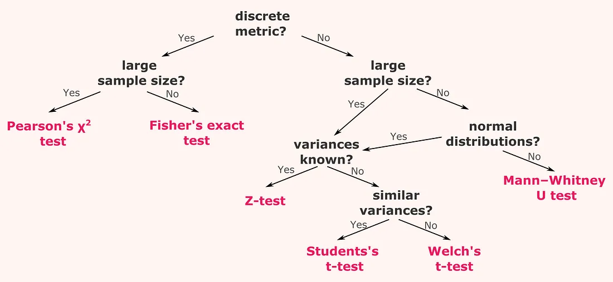Francesco Casalegno</a>" width="1330" height="385" contain /> <p class="caption">Взято у <a href=https://towardsdatascience.com/a-b-testing-a-complete-guide-to-statistical-testing-e3f1db140499>Francesco Casalegno</a></p> </div> ] ] --- name: H9bd38 .toc.sidebar.left-column[ .outline[ # [Подготовка](#dataset) # [Сбор данных ](#He09a4) # [Переброс данных](#skip-data) # [Треки ](#H23ce4) # [Находки ](#H1d80f) # [Окружающ.среда](#Hc129b) # [Анализ ](#H948b0).fg[] ## [Расстояние до берега](#dist2coast) ## [Батиметрия ](#analysis-gebco) ## [Сравнение средних ](#H04b87).fg[] ### [Оценочно ](#H127a6) ### [Детально ](#Hf9337) <span class="bullet bullet">[•](#Hf9337)</span><span class="bullet bullet-active">[•](#H9bd38)</span>.fg[].bg[] ] ] .toc.mainbar.right-column.scrollable[ .header.h3.broad[ Детально .parent[.grand[Сравнение средних .grand[Анализ]]] ] .fixprecode[ .font92[ #### Тест на нормальность ``` r shapiro.test(x) ``` ``` Shapiro-Wilk normality test data: x W = 0.35726, p-value = 5.77e-08 ``` ``` r shapiro.test(y) ``` ``` Shapiro-Wilk normality test data: y W = 0.81279, p-value = 0.001764 ``` #### Отличия значимы? ``` r t.test(x,y,pair=FALSE) ``` ``` Welch Two Sample t-test data: x and y t = 1.4979, df = 17.189, p-value = 0.1523 alternative hypothesis: true difference in means is not equal to 0 95 percent confidence interval: -4920.308 29079.824 sample estimates: mean of x mean of y 14814.707 2734.949 ``` ] ] ] --- class: break bottom youturn .youturn[ # You turn Если осталось время, Print composer. ] --- class: break youturn <img src="assets/print-layout-1.jpg" width="1330" height="672" contain style="display: block; margin: auto auto auto 0;" /> --- class: break youturn <img src="assets/print-layout-2.jpg" width="1330" height="672" contain style="display: block; margin: auto auto auto 0;" /> --- class: break youturn <img src="assets/print-layout-3.jpg" width="1330" height="672" contain style="display: block; margin: auto auto auto 0;" /> --- class: break youturn <img src="assets/print-layout-4.jpg" width="1330" height="672" contain style="display: block; margin: auto auto auto 0;" /> --- name: beforefinalizing .toc.sidebar.left-column[ .outline[ # [Подготовка](#dataset) # [Сбор данных ](#He09a4) # [Переброс данных](#skip-data) # [Треки ](#H23ce4) # [Находки ](#H1d80f) # [Окружающ.среда](#Hc129b) # [Анализ ](#H948b0) ] ] .toc.mainbar.right-column.scrollable[ ] --- class: notable scrollable .font64[ ``` r print(sessionInfo()) ``` ``` R version 4.4.2 Patched (2025-01-26 r87642 ucrt) Platform: x86_64-w64-mingw32/x64 Running under: Windows 10 x64 (build 19045) Matrix products: default locale: [1] LC_COLLATE=English_United Kingdom.utf8 LC_CTYPE=English_United Kingdom.utf8 LC_MONETARY=English_United Kingdom.utf8 [4] LC_NUMERIC=C LC_TIME=English_United Kingdom.utf8 time zone: UTC tzcode source: internal attached base packages: [1] stats graphics grDevices utils datasets methods base other attached packages: [1] tmap_4.0 sf_1.0-19 ursa_3.11.2-1159 RefManageR_1.4.0 loaded via a namespace (and not attached): [1] bibtex_0.5.1 RColorBrewer_1.1-3 jsonlite_1.8.9 wk_0.9.4 datawizard_1.0.0 correlation_0.8.6 [7] magrittr_2.0.3 TH.data_1.1-3 estimability_1.5.1 farver_2.1.2 rmarkdown_2.29 vctrs_0.6.5 [13] paletteer_1.6.0 base64enc_0.1-3 terra_1.8-15 effectsize_1.0.0 htmltools_0.5.8.1 leafsync_0.1.0 [19] raster_3.6-31 plutil_0.9-7328 cellranger_1.1.0 s2_1.1.7 sass_0.4.9 KernSmooth_2.23-26 [25] xaringan_0.30 bslib_0.8.0 fontawesome_0.5.3 htmlwidgets_1.6.4 plyr_1.8.9 sandwich_3.1-1 [31] emmeans_1.10.6 zoo_1.8-12 stars_0.6-7 lubridate_1.9.4 cachem_1.1.0 uuid_1.2-1 [37] whisker_0.4.1 lifecycle_1.0.4 pkgconfig_2.0.3 cols4all_0.8 Matrix_1.7-2 R6_2.5.1 [43] fastmap_1.2.0 widgetframe_0.3.1 digest_0.6.37 colorspace_2.1-1 mapview_2.11.2 rematch2_2.1.2 [49] patchwork_1.3.0 CircStats_0.2-6 rprojroot_2.0.4 prismatic_1.1.2 leafem_0.2.3 crosstalk_1.2.1 [55] lwgeom_0.2-14 spacesXYZ_1.4-0 timechange_0.3.0 httr_1.4.7 abind_1.4-8 compiler_4.4.2 [61] here_1.0.1 microbenchmark_1.5.0 proxy_0.4-27 withr_3.0.2 brew_1.0-10 backports_1.5.0 [67] DBI_1.2.3 logger_0.4.0 MASS_7.3-64 tmaptools_3.2 leaflet_2.2.2 classInt_0.4-11 [73] tools_4.4.2 units_0.8-5 leaflegend_1.2.1 statsExpressions_1.6.2 glue_1.8.0 satellite_1.0.5 [79] grid_4.4.2 ade4_1.7-22 generics_0.1.3 gtable_0.3.6 leaflet.providers_2.0.0 class_7.3-23 [85] tidyr_1.3.1 data.table_1.16.4 utf8_1.2.4 sp_2.1-4 xml2_1.3.6 pillar_1.10.1 [91] stringr_1.5.1 splines_4.4.2 dplyr_1.1.4 lattice_0.22-6 survival_3.8-3 ggstatsplot_0.13.0 [97] tidyselect_1.2.1 pagedown_0.22 knitr_1.49 countdown_0.4.0 svglite_2.1.3 stats4_4.4.2 [103] xfun_0.50 adehabitatMA_0.3.17 leafpop_0.1.0 DT_0.33 adehabitatLT_0.3.28 stringi_1.8.4 [109] geojsonsf_2.0.3 yaml_2.3.10 boot_1.3-31 xaringanExtra_0.8.0 evaluate_1.0.3 codetools_0.2-20 [115] tcltk_4.4.2 tibble_3.2.1 cli_3.6.3 RcppParallel_5.1.10 xtable_1.8-4 parameters_0.24.1 [121] systemfonts_1.2.1 munsell_0.5.1 jquerylib_0.1.4 dichromat_2.0-0.1 Rcpp_1.0.14 readxl_1.4.3 [127] zeallot_0.1.0 coda_0.19-4.1 png_0.1-8 XML_3.99-0.18 parallel_4.4.2 rstantools_2.4.0 [133] ggplot2_3.5.1 bayestestR_0.15.1 viridisLite_0.4.2 mvtnorm_1.3-3 scales_1.3.0 e1071_1.7-16 [139] insight_1.0.1 purrr_1.0.2 geosphere_1.5-20 rlang_1.1.5 multcomp_1.4-26 ``` ] --- name: bib class: notable .footnote.small.bibliography[ <div class="backtoshow"><a href="javascript:window.history.back();">↩</a></div> **** <a name=bib-winterschool2025></a>[Платонов, Н.](#bib) (2025). _Набор данных для практикума по применению геоинформационных систем для обработки данных судовых учётов морских млекопитающих_. DOI: [10.5281/zenodo.14743126](https://doi.org/10.5281%2Fzenodo.14743126). ]